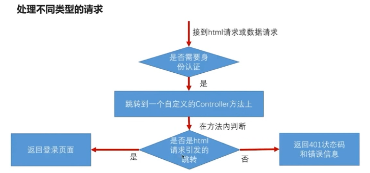
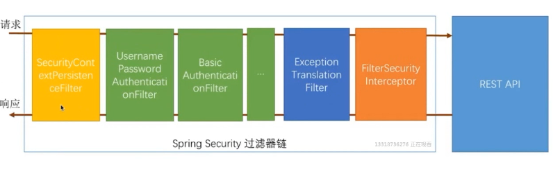
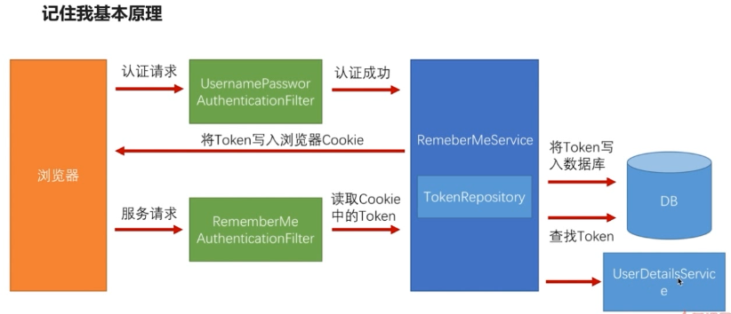
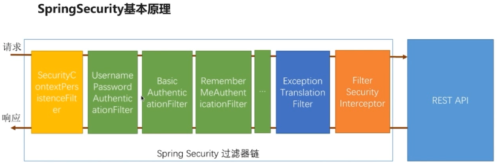

<!DOCTYPE html>
<html>
  <head>
    <meta charset="utf-8">
    <meta http-equiv="X-UA-Compatible" content="IE=edge">
    <meta name="viewport" content="width=device-width, initial-scale=1, maximum-scale=1">
    
    <meta name="theme-color" content="#33363b">
    <meta name="msapplication-TileColor" content="#33363b">
    
    
    
    <meta name="keywords" content="Life, ARIA, Hexo">
    
    
    <link rel="apple-touch-icon" sizes="180x180" href="/favicons/apple-touch-icon.png">
    
    
    <link rel="icon" type="image/png" sizes="192x192" href="/favicons/android-chrome-192x192.png">
    
    
    <link rel="icon" type="image/png" sizes="32x32" href="/favicons/favicon-32x32.png">
    
    
    <link rel="icon" type="image/png" sizes="16x16" href="/favicons/favicon-16x16.png">
    
    
    <link rel="mask-icon" href="/favicons/safari-pinned-tab.svg" color="#33363b">
    
    
    <link rel="manifest" href="/favicons/site.webmanifest">
    
    
    <meta name="msapplication-config" content="/favicons/browserconfig.xml">
    
    
    <link rel="alternate" href="/atom.xml" title="程序猿的日常" type="application/atom+xml" />
    
    
    <link rel="shortcut icon" type="image/x-icon" href="/favicons/favicon.ico">
    
    
    <link rel="stylesheet" type="text/css" href="/css/normalize.css">
    <link rel="stylesheet" type="text/css" href="/css/index.css">
    
    <link rel="stylesheet" type="text/css" href="/css/sidebar.css">
    
    
<link rel="stylesheet" type="text/css" href="/css/page.css">
<link rel="stylesheet" type="text/css" href="/css/post.css">

    <link rel="stylesheet" type="text/css" href="/css/custom.css">
    <link rel="stylesheet" type="text/css" href="/css/atom-one-dark.css">
    <link rel="stylesheet" type="text/css" href="/css/lightgallery.min.css">
    <script type="text/javascript" src="/js/jquery.min.js"></script>
    <script defer type="text/javascript" src="/js/util.js"></script>
    <script defer type="text/javascript" src="/js/scrollspy.js"></script>
    <script defer type="text/javascript" src="/js/fontawesome-all.min.js"></script>
    <script defer type="text/javascript" src="/js/lightgallery.min.js"></script>
    <script defer type="text/javascript" src="/js/lg-fullscreen.min.js"></script>
    <script defer type="text/javascript" src="/js/lg-hash.min.js"></script>
    <script defer type="text/javascript" src="/js/lg-pager.min.js"></script>
    <script defer type="text/javascript" src="/js/lg-thumbnail.min.js"></script>
    <script defer type="text/javascript" src="/js/lg-zoom.min.js"></script>
    
    <script defer src="/js/busuanzi.pure.mini.js"></script>
    
    
    <script defer type="text/javascript" src="/js/search.js"></script>
    <script type="text/javascript">
    $(document).ready(function () {
      var searchPath = "search.xml";
      if (searchPath.length === 0) {
        searchPath = "search.xml";
      }
      var path = "/" + searchPath;
      searchFunc(path, "search-input", "search-result");
    });
    </script>
    
    
    <script defer type="text/javascript" src="/js/index.js"></script>
    
    <script defer type="text/javascript" src="/js/custom.js"></script>
    <title>使用 Maven Module 搭建spring boot项目（整合Spring Security、Spring Social、spring OAuth）二 | 程序猿的日常</title>
  </head>
  <body itemscope itemtype="http://schema.org/WebPage" lang="default"  data-spy="scroll" data-target=".list-group">
    
<header id="header" class="header" style="background: #33363b;">
  <div class="container">
    <div class="header-container">
      <div class="header-title">
        <h1 class="title"><a href="/">程序猿的日常</a></h1>
        <h2 class="subtitle"></h2>
      </div>
      <div class="logo">
        
      </div>
    </div>
    
<nav id="nav" class="nav">
  <a id="nav-toggle" class="nav-toggle"><i class="fas fa-bars"></i></a>
  <ul id="menu">
    
    <li><a href="/">首页</a></li>
    
    <li><a href="/archives/">Archives</a></li>
    
  </ul>
</nav>


  </div>
</header>


    <main id="main" class="main">
      <div class="container">
        <div class="main-container">
          <div class="content">
            
<div id="post" class="post">
  
  <article class="post-container card" itemscope itemtype="http://schema.org/Article">
    <div class="post-block">
      <link itemprop="mainEntityOfPage" href="http://yoursite.com/2018/07/12/spring_security/2.SpringSecurityFormAuthentication/">
      <span hidden itemprop="author" itemscope itemtype="http://schema.org/Person">
       <meta itemprop="name" content="龙门小左">
       <meta itemprop="description" content="">
       <meta itemprop="image" content="/images/avatar.png">
      </span>
      <span hidden itemprop="publisher" itemscope itemtype="http://schema.org/Organization">
       <meta itemprop="name" content="程序猿的日常">
      </span>
    </div>
    <header class="post-header">
      <h1 class="post-title" itemprop="name headline">使用 Maven Module 搭建spring boot项目（整合Spring Security、Spring Social、spring OAuth）二</h1>
      <div class="post-meta">
        
        <span class="post-date">
          <i class="far fa-calendar-plus"></i><span><time title="post-date" itemprop="dateCreated datePublished" datetime="2018-07-12T10:00:00+08:00">2018-07-12 10:00:00</time></span>
        </span>
        
        
        
      </div>
    </header>
    <main class="post-main" itemprop="articleBody">
      <h1 id="使用-Maven-Module-搭建spring-boot项目（整合Spring-Security、Spring-Social、spring-OAuth）二"><a href="#使用-Maven-Module-搭建spring-boot项目（整合Spring-Security、Spring-Social、spring-OAuth）二" class="headerlink" title="使用 Maven Module 搭建spring boot项目（整合Spring Security、Spring Social、spring OAuth）二"></a>使用 Maven Module 搭建spring boot项目（整合Spring Security、Spring Social、spring OAuth）二</h1><table>
<thead>
<tr>
<th>版本号</th>
<th>作者</th>
<th>日期</th>
<th>备注</th>
</tr>
</thead>
<tbody>
<tr>
<td>V0.1</td>
<td>谭键胜</td>
<td>2018-04-03</td>
<td>初稿</td>
</tr>
</tbody>
</table>
<hr>
<h2 id="Spring-Security-开发基于表单的认证"><a href="#Spring-Security-开发基于表单的认证" class="headerlink" title="Spring Security 开发基于表单的认证"></a>Spring Security 开发基于表单的认证</h2><h3 id="简介"><a href="#简介" class="headerlink" title="简介"></a>简介</h3><p>​    在以上开发的RESTful服务中，都是一种暴露而不安全的服务，任何人都可以随意访问。需要对访问进行合理的权限分配，对用户的身份进行认证和授权，保证服务的安全性和合法性，spring security 框架就是基于此而诞生的。</p>
<p><strong>Spring Security 核心功能：</strong></p>
<ol>
<li>认证（你是谁）</li>
<li>授权（你能做什么）</li>
<li>攻击防护（防止伪造身份）</li>
</ol>
<h3 id="基本原理"><a href="#基本原理" class="headerlink" title="基本原理"></a>基本原理</h3><h4 id="开启Spring-Security"><a href="#开启Spring-Security" class="headerlink" title="开启Spring Security"></a>开启Spring Security</h4><p>​    在默认情况下，Spring Security 服务器中所有的服务都保护起来了，要访问某一个服务，都需要进行身份验证。</p>
<p>在<code>application.properties</code>中添加启动配置，默认开启<code>HttpBasic</code>方式进行验证</p>
<figure class="highlight yaml"><table><tr><td class="gutter"><pre><span class="line">1</span><br><span class="line">2</span><br></pre></td><td class="code"><pre><span class="line"><span class="comment"># spring security 默认配置(默认为true)</span></span><br><span class="line"><span class="string">security.basic.enabled</span> <span class="string">=</span> <span class="literal">true</span></span><br></pre></td></tr></table></figure>
<p>若在未进行配置的情况下，用户名默认为<code>user</code>，并且登陆密码会在启动时临时生成，并在控制台输出</p>
<figure class="highlight plain"><table><tr><td class="gutter"><pre><span class="line">1</span><br></pre></td><td class="code"><pre><span class="line">Using default security password: 99066b9e-054f-496f-9f29-4014eee36109</span><br></pre></td></tr></table></figure>
<h4 id="自定义安全验证"><a href="#自定义安全验证" class="headerlink" title="自定义安全验证"></a>自定义安全验证</h4><ol>
<li>目的：写出重用的模块，跟认证授权相应的代码都写在相应的项目中，并可以被其他模块引用</li>
<li>更改默认的验证方式，在浏览器项目中创建配置类，开启自定义配置</li>
</ol>
<figure class="highlight java"><table><tr><td class="gutter"><pre><span class="line">1</span><br><span class="line">2</span><br><span class="line">3</span><br><span class="line">4</span><br><span class="line">5</span><br><span class="line">6</span><br><span class="line">7</span><br><span class="line">8</span><br><span class="line">9</span><br><span class="line">10</span><br><span class="line">11</span><br><span class="line">12</span><br><span class="line">13</span><br><span class="line">14</span><br><span class="line">15</span><br><span class="line">16</span><br><span class="line">17</span><br><span class="line">18</span><br><span class="line">19</span><br></pre></td><td class="code"><pre><span class="line"><span class="comment">/**</span></span><br><span class="line"><span class="comment"> * WebSecurityConfigurerAdapter: Spring Security 在web应用上配置适配器</span></span><br><span class="line"><span class="comment"> */</span></span><br><span class="line"><span class="meta">@Configuration</span></span><br><span class="line"><span class="keyword">public</span> <span class="class"><span class="keyword">class</span> <span class="title">BrowserSecurityConfig</span> <span class="keyword">extends</span> <span class="title">WebSecurityConfigurerAdapter</span> </span>&#123;</span><br><span class="line"><span class="comment">/**</span></span><br><span class="line"><span class="comment">    * Spring Security 默认配置的代码演示</span></span><br><span class="line"><span class="comment">   */</span></span><br><span class="line">   <span class="meta">@Override</span></span><br><span class="line">   <span class="function"><span class="keyword">protected</span> <span class="keyword">void</span> <span class="title">configure</span><span class="params">(HttpSecurity http)</span> <span class="keyword">throws</span> Exception </span>&#123;</span><br><span class="line">      <span class="comment">//最简单的配置</span></span><br><span class="line"><span class="comment">//http.httpBasic()//使用httpbasic验证，默认使用</span></span><br><span class="line">      http.formLogin()<span class="comment">//使用表单验证的意思</span></span><br><span class="line">            .and()<span class="comment">//</span></span><br><span class="line">            .authorizeRequests()<span class="comment">//对请求做授权</span></span><br><span class="line">            .anyRequest()<span class="comment">//任何请求</span></span><br><span class="line">            .authenticated();<span class="comment">//都需要身份验证</span></span><br><span class="line">   &#125;</span><br><span class="line">&#125;</span><br></pre></td></tr></table></figure>
<ol start="3">
<li>启动服务后，系统的认证方式从<code>HttpBasic</code>更改为<code>Form</code>方法</li>
</ol>
<h4 id="Security基本原理"><a href="#Security基本原理" class="headerlink" title="Security基本原理"></a>Security基本原理</h4><h5 id="核心类简单介绍"><a href="#核心类简单介绍" class="headerlink" title="核心类简单介绍"></a>核心类简单介绍</h5><p>​    Spring security 最核心的是一组过滤器链(一组Filter)，所有的功能都是建立在此基础上的，绿色中的过滤器是Spring security最核心的过滤器，作用是验证用户身份，每一种过滤器用来处理一种认证方式</p>
<p></p>
<p><code>UsernamePasswordAuthenticationFilter</code> ：处理表单登陆验证</p>
<p><code>BasicAuthenticationFilter</code> ：处理<code>HttpBasic</code>登陆验证</p>
<p><code>FilterSecurityInterceptor</code> ：核心过滤链中最后一关，依据配置，判断当前请求能不能访问REST服务，如果不匹配，则抛出异常（根据不同原因）</p>
<p><code>ExceptionTranslationFilter</code> ：捕获<code>FilterSecurityInterceptor</code>抛出的异常并处理(例如引导用户到登陆页面)</p>
<p>​    <strong>通过配置可以选用绿色的过滤器，但非绿色的过滤器一定会在过滤器链上执行(<code>FilterSecurityInterceptor</code>不能关闭，<code>ExceptionTranslationFilter</code>一定在<code>FilterSecurityInterceptor</code>前)</strong></p>
<h5 id="内部流程解析"><a href="#内部流程解析" class="headerlink" title="内部流程解析"></a>内部流程解析</h5><ol>
<li>访问访问已经配置好受保护的REST服务: <code>&lt;http://localhost:8080/user&gt;</code></li>
<li>进入<code>FilterSecurityInterceptor</code></li>
</ol>
<figure class="highlight java"><table><tr><td class="gutter"><pre><span class="line">1</span><br><span class="line">2</span><br><span class="line">3</span><br><span class="line">4</span><br><span class="line">5</span><br></pre></td><td class="code"><pre><span class="line"><span class="keyword">public</span> <span class="class"><span class="keyword">class</span> <span class="title">FilterSecurityInterceptor</span></span>&#123;</span><br><span class="line">	<span class="function"><span class="keyword">public</span> <span class="keyword">void</span> <span class="title">invoke</span><span class="params">(FilterInvocation fi)</span></span>&#123;</span><br><span class="line">		InterceptorStatusToken token = <span class="keyword">super</span>.beforeInvocation(fi);<span class="comment">//验证，不符合抛出异常</span></span><br><span class="line">	&#125;</span><br><span class="line">&#125;</span><br></pre></td></tr></table></figure>
<ol start="3">
<li>抛出异常，被捕获</li>
</ol>
<figure class="highlight java"><table><tr><td class="gutter"><pre><span class="line">1</span><br><span class="line">2</span><br><span class="line">3</span><br><span class="line">4</span><br><span class="line">5</span><br><span class="line">6</span><br><span class="line">7</span><br><span class="line">8</span><br><span class="line">9</span><br><span class="line">10</span><br><span class="line">11</span><br><span class="line">12</span><br><span class="line">13</span><br><span class="line">14</span><br><span class="line">15</span><br><span class="line">16</span><br><span class="line">17</span><br><span class="line">18</span><br><span class="line">19</span><br></pre></td><td class="code"><pre><span class="line"><span class="keyword">public</span> <span class="class"><span class="keyword">class</span> <span class="title">ExceptionTranslationFilter</span></span>&#123;</span><br><span class="line">	<span class="function"><span class="keyword">public</span> <span class="keyword">void</span> <span class="title">doFilter</span><span class="params">(ServletRequest req, ServletResponse res, FilterChain chain)</span></span>&#123;</span><br><span class="line">		<span class="keyword">try</span> &#123;</span><br><span class="line">            <span class="comment">//执行下一个过滤器，也就是FilterSecurityInterceptor</span></span><br><span class="line">    		chain.doFilter(request, response);</span><br><span class="line">    		<span class="keyword">this</span>.logger.debug(<span class="string">"Chain processed normally"</span>);</span><br><span class="line">		&#125; <span class="keyword">catch</span> (IOException var9) &#123;</span><br><span class="line">    		<span class="keyword">throw</span> var9;</span><br><span class="line">		&#125; <span class="keyword">catch</span> (Exception var10) &#123;</span><br><span class="line">            <span class="comment">//抛出异常，捕获</span></span><br><span class="line">    		Throwable[] causeChain = <span class="keyword">this</span>.throwableAnalyzer.determineCauseChain(var10);</span><br><span class="line">    		RuntimeException ase = (AuthenticationException)<span class="keyword">this</span>.throwableAnalyzer.getFirstThrowableOfType(AuthenticationException.class, causeChain);</span><br><span class="line">            <span class="keyword">if</span>(ase == <span class="keyword">null</span>) &#123;</span><br><span class="line">                ase = (AccessDeniedException)<span class="keyword">this</span>.throwableAnalyzer.getFirstThrowableOfType(AccessDeniedException.class, causeChain);</span><br><span class="line">            &#125;</span><br><span class="line">            <span class="keyword">this</span>.handleSpringSecurityException(request, response, chain, (RuntimeException)ase);<span class="comment">//处理异常，并且引导用户处理</span></span><br><span class="line">		&#125;</span><br><span class="line">	&#125; </span><br><span class="line">&#125;</span><br></pre></td></tr></table></figure>
<ol start="4">
<li>引导用户登陆，用户登陆完毕</li>
<li>进入用户名密码校验过滤器</li>
</ol>
<figure class="highlight java"><table><tr><td class="gutter"><pre><span class="line">1</span><br><span class="line">2</span><br><span class="line">3</span><br><span class="line">4</span><br><span class="line">5</span><br><span class="line">6</span><br><span class="line">7</span><br><span class="line">8</span><br><span class="line">9</span><br><span class="line">10</span><br><span class="line">11</span><br><span class="line">12</span><br><span class="line">13</span><br><span class="line">14</span><br><span class="line">15</span><br><span class="line">16</span><br><span class="line">17</span><br><span class="line">18</span><br><span class="line">19</span><br><span class="line">20</span><br></pre></td><td class="code"><pre><span class="line"><span class="keyword">public</span> <span class="class"><span class="keyword">class</span> <span class="title">UsernamePasswordAuthenticationFilter</span></span>&#123;</span><br><span class="line">	<span class="function"><span class="keyword">public</span> Authentication <span class="title">attemptAuthentication</span><span class="params">(HttpServletRequest request, HttpServletResponse 		response)</span> <span class="keyword">throws</span> AuthenticationException </span>&#123;</span><br><span class="line">    	<span class="keyword">if</span>(<span class="keyword">this</span>.postOnly &amp;&amp; !request.getMethod().equals(<span class="string">"POST"</span>)) &#123;</span><br><span class="line">        	<span class="keyword">throw</span> <span class="keyword">new</span> AuthenticationServiceException(<span class="string">"Authentication method not supported: "</span> + 				request.getMethod());</span><br><span class="line">    	&#125; <span class="keyword">else</span> &#123;</span><br><span class="line">        	String username = <span class="keyword">this</span>.obtainUsername(request);</span><br><span class="line">        	String password = <span class="keyword">this</span>.obtainPassword(request);</span><br><span class="line">        	<span class="keyword">if</span>(username == <span class="keyword">null</span>) &#123;</span><br><span class="line">            	username = <span class="string">""</span>;</span><br><span class="line">        	&#125;</span><br><span class="line">        	<span class="keyword">if</span>(password == <span class="keyword">null</span>) &#123;</span><br><span class="line">            	password = <span class="string">""</span>;</span><br><span class="line">        	&#125;</span><br><span class="line">        	username = username.trim();</span><br><span class="line">        	UsernamePasswordAuthenticationToken authRequest = <span class="keyword">new</span> UsernamePasswordAuthenticationToken(username, password);</span><br><span class="line">        	<span class="keyword">this</span>.setDetails(request, authRequest);</span><br><span class="line">        	<span class="keyword">return</span> <span class="keyword">this</span>.getAuthenticationManager().authenticate(authRequest);</span><br><span class="line">    	&#125;</span><br><span class="line">	&#125;</span><br><span class="line">&#125;</span><br></pre></td></tr></table></figure>
<ol start="6">
<li>进入<code>FilterSecurityInterceptor</code>，再次验证，通过验证，进入服务，服务返回数据</li>
</ol>
<h4 id="自定义认证逻辑"><a href="#自定义认证逻辑" class="headerlink" title="自定义认证逻辑"></a>自定义认证逻辑</h4><h5 id="Security处理用户信息校验逻辑"><a href="#Security处理用户信息校验逻辑" class="headerlink" title="Security处理用户信息校验逻辑"></a>Security处理用户信息校验逻辑</h5><p>Spring Security 提供两个接口<code>UserDetailService</code>与<code>UserDetail</code>，用于校验用户信息逻辑</p>
<figure class="highlight java"><table><tr><td class="gutter"><pre><span class="line">1</span><br><span class="line">2</span><br><span class="line">3</span><br><span class="line">4</span><br><span class="line">5</span><br></pre></td><td class="code"><pre><span class="line"><span class="keyword">package</span> org.springframework.security.core.userdetails;</span><br><span class="line"></span><br><span class="line"><span class="keyword">public</span> <span class="class"><span class="keyword">interface</span> <span class="title">UserDetailsService</span> </span>&#123;</span><br><span class="line">    <span class="function">UserDetails <span class="title">loadUserByUsername</span><span class="params">(String username)</span> <span class="keyword">throws</span> UsernameNotFoundException</span>;</span><br><span class="line">&#125;</span><br></pre></td></tr></table></figure>
<figure class="highlight java"><table><tr><td class="gutter"><pre><span class="line">1</span><br><span class="line">2</span><br><span class="line">3</span><br><span class="line">4</span><br><span class="line">5</span><br><span class="line">6</span><br><span class="line">7</span><br><span class="line">8</span><br><span class="line">9</span><br><span class="line">10</span><br><span class="line">11</span><br><span class="line">12</span><br><span class="line">13</span><br><span class="line">14</span><br><span class="line">15</span><br><span class="line">16</span><br><span class="line">17</span><br><span class="line">18</span><br></pre></td><td class="code"><pre><span class="line"><span class="keyword">package</span> org.springframework.security.core.userdetails;</span><br><span class="line"></span><br><span class="line"><span class="keyword">import</span> org.springframework.security.core.GrantedAuthority;</span><br><span class="line"><span class="comment">/**</span></span><br><span class="line"><span class="comment">* 封装了spring security 登陆所需要的所有信息</span></span><br><span class="line"><span class="comment">*/</span></span><br><span class="line"><span class="keyword">public</span> <span class="class"><span class="keyword">interface</span> <span class="title">UserDetails</span> <span class="keyword">extends</span> <span class="title">Serializable</span> </span>&#123;</span><br><span class="line">    Collection&lt;? extends GrantedAuthority&gt; getAuthorities();<span class="comment">//权限信息</span></span><br><span class="line">    <span class="function">String <span class="title">getPassword</span><span class="params">()</span></span>;</span><br><span class="line">    <span class="function">String <span class="title">getUsername</span><span class="params">()</span></span>;</span><br><span class="line"><span class="comment">/*</span></span><br><span class="line"><span class="comment"> * 以下四个方法是可以实现自定义校验逻辑的</span></span><br><span class="line"><span class="comment">*/</span></span><br><span class="line">    <span class="function"><span class="keyword">boolean</span> <span class="title">isAccountNonExpired</span><span class="params">()</span></span>;<span class="comment">//账户没有过期返回true</span></span><br><span class="line">    <span class="function"><span class="keyword">boolean</span> <span class="title">isAccountNonLocked</span><span class="params">()</span></span>;<span class="comment">//账户是不是被锁定了(冻结)</span></span><br><span class="line"><span class="function"><span class="keyword">boolean</span> <span class="title">isCredentialsNonExpired</span><span class="params">()</span></span>;<span class="comment">//密码是否过期</span></span><br><span class="line"><span class="function"><span class="keyword">boolean</span> <span class="title">isEnabled</span><span class="params">()</span></span>;<span class="comment">//账户是不是可用(是否逻辑删除)</span></span><br><span class="line">&#125;</span><br></pre></td></tr></table></figure>
<h5 id="自定义处理用户信息校验逻辑"><a href="#自定义处理用户信息校验逻辑" class="headerlink" title="自定义处理用户信息校验逻辑"></a>自定义处理用户信息校验逻辑</h5><figure class="highlight java"><table><tr><td class="gutter"><pre><span class="line">1</span><br><span class="line">2</span><br><span class="line">3</span><br><span class="line">4</span><br><span class="line">5</span><br><span class="line">6</span><br><span class="line">7</span><br><span class="line">8</span><br><span class="line">9</span><br><span class="line">10</span><br><span class="line">11</span><br><span class="line">12</span><br><span class="line">13</span><br><span class="line">14</span><br><span class="line">15</span><br><span class="line">16</span><br><span class="line">17</span><br><span class="line">18</span><br><span class="line">19</span><br><span class="line">20</span><br><span class="line">21</span><br><span class="line">22</span><br><span class="line">23</span><br><span class="line">24</span><br><span class="line">25</span><br></pre></td><td class="code"><pre><span class="line"><span class="meta">@Component</span></span><br><span class="line"><span class="keyword">public</span> <span class="class"><span class="keyword">class</span> <span class="title">MyUserDetailsService</span> <span class="keyword">implements</span> <span class="title">UserDetailsService</span></span>&#123;</span><br><span class="line"></span><br><span class="line">    <span class="keyword">private</span> Logger logger = LoggerFactory.getLogger(getClass());</span><br><span class="line"></span><br><span class="line">    <span class="comment">/**</span></span><br><span class="line"><span class="comment">     *  模拟注入Dao或Mapper</span></span><br><span class="line"><span class="comment">     */</span></span><br><span class="line">    <span class="comment">//@Autowired</span></span><br><span class="line">    <span class="comment">//private UserDao userDao;</span></span><br><span class="line"></span><br><span class="line">    <span class="comment">/**</span></span><br><span class="line"><span class="comment">     * 开发中，所有的动态数据都需要从数据库中或其他数据储存介质读取</span></span><br><span class="line"><span class="comment">     * 包括权限列表</span></span><br><span class="line"><span class="comment">     */</span></span><br><span class="line">    <span class="meta">@Override</span></span><br><span class="line">    <span class="function"><span class="keyword">public</span> UserDetails <span class="title">loadUserByUsername</span><span class="params">(String username)</span> <span class="keyword">throws</span> UsernameNotFoundException </span>&#123;</span><br><span class="line">        <span class="comment">//模拟根据用户名使用Dao或Mapper寻找用户</span></span><br><span class="line">        logger.info(<span class="string">"登陆用户名： "</span> + username);</span><br><span class="line">        <span class="comment">//User:spring security框架提供的一个实现了UserDetails接口的实现类</span></span><br><span class="line">        <span class="comment">//三个参数:username,password,authorities：授权</span></span><br><span class="line">        <span class="comment">//分割String类型为授权集合</span></span><br><span class="line">        <span class="keyword">return</span> <span class="keyword">new</span> User(username,<span class="string">"123456"</span>, AuthorityUtils.commaSeparatedStringToAuthorityList(<span class="keyword">super</span>));</span><br><span class="line">    &#125;</span><br><span class="line">&#125;</span><br></pre></td></tr></table></figure>
<p>以上代码返回了一个User类，是Spring Security默认提供的一个UserDetails接口实现类，以上的构造器传入了3个参数，但是没有传入账号是否过期、是否被锁定，密码是否过期，是否可用(是否逻辑删除)等属性参数，这样默认都为true，账号可用。</p>
<p>若需要增加账号其他逻辑判断，则可以修改为</p>
<figure class="highlight java"><table><tr><td class="gutter"><pre><span class="line">1</span><br><span class="line">2</span><br></pre></td><td class="code"><pre><span class="line"><span class="keyword">return</span> <span class="keyword">new</span> User(username,<span class="string">"123456"</span>,<span class="keyword">true</span>,<span class="keyword">true</span>,<span class="keyword">true</span>,<span class="keyword">true</span></span><br><span class="line">                AuthorityUtils.commaSeparatedStringToAuthorityList(<span class="string">"admin"</span>));</span><br></pre></td></tr></table></figure>
<h5 id="处理密码加解密"><a href="#处理密码加解密" class="headerlink" title="处理密码加解密"></a>处理密码加解密</h5><ol>
<li>Spring Security 提供密码加密的接口，并且提供一个常用的密码处理类<code>BCryptPasswordEncoder</code></li>
</ol>
<figure class="highlight java"><table><tr><td class="gutter"><pre><span class="line">1</span><br><span class="line">2</span><br><span class="line">3</span><br><span class="line">4</span><br><span class="line">5</span><br><span class="line">6</span><br><span class="line">7</span><br><span class="line">8</span><br><span class="line">9</span><br><span class="line">10</span><br><span class="line">11</span><br><span class="line">12</span><br><span class="line">13</span><br><span class="line">14</span><br></pre></td><td class="code"><pre><span class="line"><span class="keyword">package</span> org.springframework.security.crypto.password;</span><br><span class="line"></span><br><span class="line"><span class="keyword">public</span> <span class="class"><span class="keyword">interface</span> <span class="title">PasswordEncoder</span> </span>&#123;</span><br><span class="line"><span class="comment">/*</span></span><br><span class="line"><span class="comment">* var1:原始密码</span></span><br><span class="line"><span class="comment">* return:返回加密后的密码</span></span><br><span class="line"><span class="comment">*/</span></span><br><span class="line">    <span class="function">String <span class="title">encode</span><span class="params">(CharSequence var1)</span></span>;</span><br><span class="line">    </span><br><span class="line"><span class="comment">/**</span></span><br><span class="line"><span class="comment">* 用户输入的密码与数据库密码进行匹配</span></span><br><span class="line"><span class="comment">*/</span></span><br><span class="line">    <span class="function"><span class="keyword">boolean</span> <span class="title">matches</span><span class="params">(CharSequence var1, String var2)</span></span>;</span><br><span class="line">&#125;</span><br></pre></td></tr></table></figure>
<ol start="2">
<li>配置Spring Security提供的密码加密类</li>
</ol>
<figure class="highlight java"><table><tr><td class="gutter"><pre><span class="line">1</span><br><span class="line">2</span><br><span class="line">3</span><br><span class="line">4</span><br><span class="line">5</span><br><span class="line">6</span><br><span class="line">7</span><br><span class="line">8</span><br><span class="line">9</span><br><span class="line">10</span><br><span class="line">11</span><br></pre></td><td class="code"><pre><span class="line"><span class="meta">@Configuration</span></span><br><span class="line"><span class="keyword">public</span> <span class="class"><span class="keyword">class</span> <span class="title">BrowserSecurityConfig</span> <span class="keyword">extends</span> <span class="title">WebSecurityConfigurerAdapter</span> </span>&#123;</span><br><span class="line">   <span class="comment">/**</span></span><br><span class="line"><span class="comment">    * 配置一个PasswordEncoder加密的实现类</span></span><br><span class="line"><span class="comment">    * 可以自定义加密类如使用MD5、SHA1等实现加密逻辑然后实现PasswordEncoder</span></span><br><span class="line"><span class="comment">    */</span></span><br><span class="line">   <span class="meta">@Bean</span></span><br><span class="line">   <span class="function"><span class="keyword">public</span> PasswordEncoder <span class="title">passwordEncoder</span><span class="params">()</span> </span>&#123;</span><br><span class="line">      <span class="keyword">return</span> <span class="keyword">new</span> BCryptPasswordEncoder();</span><br><span class="line">   &#125;</span><br><span class="line">&#125;</span><br></pre></td></tr></table></figure>
<ol start="3">
<li>在后台出，从数据库中读取出的密码应是用户注册时已经通过加密添加入数据库中。在UserDetails返回后，spring security 会从前台传过来的密码进行加密后，才会跟我们生成的UserDetails中的密码进行比对。</li>
<li><code>BCryptPasswordEncoder</code>是Spring 提供的一个强大的密码加密工具类，同样的字符串进行加密，每次结果都会不一样，加密时，使用随机盐进行对取得得密码再次进行处理。安全性更强大。</li>
</ol>
<p>对于<code>BCryptPasswordEncoder</code>的强大，原理还不清楚，在网上查了些资料，如下：</p>
<blockquote>
<p>spring security中的BCryptPasswordEncoder方法采用SHA-256 +随机盐+密钥对密码进行加密。SHA系列是Hash算法，不是加密算法，使用加密算法意味着可以解密（这个与编码/解码一样），但是采用Hash处理，其过程是不可逆的。</p>
</blockquote>
<blockquote>
<p>加密(encode)：注册用户时，使用SHA-256+随机盐+密钥把用户输入的密码进行hash处理，得到密码的hash值，然后将其存入数据库中。</p>
</blockquote>
<blockquote>
<p>密码匹配(matches)：用户登录时，密码匹配阶段并没有进行密码解密（因为密码经过Hash处理，是不可逆的），而是使用相同的算法把用户输入的密码进行hash处理，得到密码的hash值，然后将其与从数据库中查询到的密码hash值进行比较。如果两者相同，说明用户输入的密码正确。</p>
</blockquote>
<blockquote>
<p>这正是为什么处理密码时要用hash算法，而不用加密算法。因为这样处理即使数据库泄漏，黑客也很难破解密码（破解密码只能用彩虹表）。</p>
</blockquote>
<h4 id="个性化认证流程"><a href="#个性化认证流程" class="headerlink" title="个性化认证流程"></a>个性化认证流程</h4><p>一定要注意spring boot默认资源位置，不然会出现404状态</p>
<p>Spring boot 默认将/**所有访问映射到以下目录</p>
<figure class="highlight plain"><table><tr><td class="gutter"><pre><span class="line">1</span><br><span class="line">2</span><br><span class="line">3</span><br><span class="line">4</span><br></pre></td><td class="code"><pre><span class="line">classpath:/static</span><br><span class="line">classpath:/public</span><br><span class="line">classpath:/resources</span><br><span class="line">classpath:/META-INF/resources/</span><br></pre></td></tr></table></figure>
<h5 id="自定义登陆页面"><a href="#自定义登陆页面" class="headerlink" title="自定义登陆页面"></a>自定义登陆页面</h5><h6 id="页面请求配置"><a href="#页面请求配置" class="headerlink" title="页面请求配置"></a>页面请求配置</h6><ol>
<li>修改配置</li>
</ol>
<p>在核心配置中添加<code>loginPage</code>配置</p>
<figure class="highlight java"><table><tr><td class="gutter"><pre><span class="line">1</span><br><span class="line">2</span><br><span class="line">3</span><br><span class="line">4</span><br><span class="line">5</span><br><span class="line">6</span><br><span class="line">7</span><br><span class="line">8</span><br><span class="line">9</span><br><span class="line">10</span><br><span class="line">11</span><br><span class="line">12</span><br><span class="line">13</span><br><span class="line">14</span><br><span class="line">15</span><br></pre></td><td class="code"><pre><span class="line"><span class="meta">@Configuration</span></span><br><span class="line"><span class="keyword">public</span> <span class="class"><span class="keyword">class</span> <span class="title">BrowserSecurityConfig</span> <span class="keyword">extends</span> <span class="title">WebSecurityConfigurerAdapter</span> </span>&#123;</span><br><span class="line"></span><br><span class="line">	<span class="meta">@Override</span></span><br><span class="line">	<span class="function"><span class="keyword">protected</span> <span class="keyword">void</span> <span class="title">configure</span><span class="params">(HttpSecurity http)</span> <span class="keyword">throws</span> Exception </span>&#123;</span><br><span class="line">   	<span class="comment">//最简单的配置</span></span><br><span class="line">   	<span class="comment">//http.httpBasic()//使用httpbasic验证，默认使用</span></span><br><span class="line">   		http.formLogin()<span class="comment">//使用表单验证的意思</span></span><br><span class="line">         .loginPage(<span class="string">"/vic-login.html"</span>)</span><br><span class="line">         .and()<span class="comment">//</span></span><br><span class="line">         .authorizeRequests()<span class="comment">//对请求做授权</span></span><br><span class="line">         .anyRequest()<span class="comment">//任何请求</span></span><br><span class="line">         .authenticated();<span class="comment">//都需要身份验证</span></span><br><span class="line">	&#125;</span><br><span class="line">&#125;</span><br></pre></td></tr></table></figure>
<ol start="2">
<li>资源目录下添加相应的页面</li>
</ol>
<p>在资源目录下<code>resources/vic-login.html</code>增加相应页面</p>
<figure class="highlight html"><table><tr><td class="gutter"><pre><span class="line">1</span><br><span class="line">2</span><br><span class="line">3</span><br><span class="line">4</span><br><span class="line">5</span><br><span class="line">6</span><br><span class="line">7</span><br><span class="line">8</span><br><span class="line">9</span><br><span class="line">10</span><br><span class="line">11</span><br><span class="line">12</span><br><span class="line">13</span><br><span class="line">14</span><br><span class="line">15</span><br><span class="line">16</span><br><span class="line">17</span><br><span class="line">18</span><br><span class="line">19</span><br><span class="line">20</span><br><span class="line">21</span><br><span class="line">22</span><br><span class="line">23</span><br><span class="line">24</span><br><span class="line">25</span><br><span class="line">26</span><br><span class="line">27</span><br></pre></td><td class="code"><pre><span class="line"><span class="meta">&lt;!DOCTYPE html&gt;</span></span><br><span class="line"><span class="tag">&lt;<span class="name">html</span>&gt;</span></span><br><span class="line"><span class="tag">&lt;<span class="name">head</span>&gt;</span></span><br><span class="line"><span class="tag">&lt;<span class="name">meta</span> <span class="attr">charset</span>=<span class="string">"UTF-8"</span>&gt;</span></span><br><span class="line"><span class="tag">&lt;<span class="name">title</span>&gt;</span>登录<span class="tag">&lt;/<span class="name">title</span>&gt;</span></span><br><span class="line"><span class="tag">&lt;/<span class="name">head</span>&gt;</span></span><br><span class="line"><span class="tag">&lt;<span class="name">body</span>&gt;</span></span><br><span class="line">   <span class="tag">&lt;<span class="name">h2</span>&gt;</span>标准登录页面<span class="tag">&lt;/<span class="name">h2</span>&gt;</span></span><br><span class="line">   <span class="tag">&lt;<span class="name">h3</span>&gt;</span>表单登录<span class="tag">&lt;/<span class="name">h3</span>&gt;</span></span><br><span class="line">   <span class="tag">&lt;<span class="name">form</span> <span class="attr">action</span>=<span class="string">"/authentication/form"</span> <span class="attr">method</span>=<span class="string">"post"</span>&gt;</span></span><br><span class="line">      <span class="tag">&lt;<span class="name">table</span>&gt;</span></span><br><span class="line">         <span class="tag">&lt;<span class="name">tr</span>&gt;</span></span><br><span class="line">            <span class="tag">&lt;<span class="name">td</span>&gt;</span>用户名:<span class="tag">&lt;/<span class="name">td</span>&gt;</span> </span><br><span class="line">            <span class="tag">&lt;<span class="name">td</span>&gt;</span><span class="tag">&lt;<span class="name">input</span> <span class="attr">type</span>=<span class="string">"text"</span> <span class="attr">name</span>=<span class="string">"username"</span>&gt;</span><span class="tag">&lt;/<span class="name">td</span>&gt;</span></span><br><span class="line">         <span class="tag">&lt;/<span class="name">tr</span>&gt;</span></span><br><span class="line">         <span class="tag">&lt;<span class="name">tr</span>&gt;</span></span><br><span class="line">            <span class="tag">&lt;<span class="name">td</span>&gt;</span>密码:<span class="tag">&lt;/<span class="name">td</span>&gt;</span></span><br><span class="line">            <span class="tag">&lt;<span class="name">td</span>&gt;</span><span class="tag">&lt;<span class="name">input</span> <span class="attr">type</span>=<span class="string">"password"</span> <span class="attr">name</span>=<span class="string">"password"</span>&gt;</span><span class="tag">&lt;/<span class="name">td</span>&gt;</span></span><br><span class="line">         <span class="tag">&lt;/<span class="name">tr</span>&gt;</span></span><br><span class="line"></span><br><span class="line">         <span class="tag">&lt;<span class="name">tr</span>&gt;</span></span><br><span class="line">            <span class="tag">&lt;<span class="name">td</span> <span class="attr">colspan</span>=<span class="string">"2"</span>&gt;</span><span class="tag">&lt;<span class="name">button</span> <span class="attr">type</span>=<span class="string">"submit"</span>&gt;</span>登录<span class="tag">&lt;/<span class="name">button</span>&gt;</span><span class="tag">&lt;/<span class="name">td</span>&gt;</span></span><br><span class="line">         <span class="tag">&lt;/<span class="name">tr</span>&gt;</span></span><br><span class="line">      <span class="tag">&lt;/<span class="name">table</span>&gt;</span></span><br><span class="line">   <span class="tag">&lt;/<span class="name">form</span>&gt;</span></span><br><span class="line"><span class="tag">&lt;/<span class="name">body</span>&gt;</span></span><br><span class="line"><span class="tag">&lt;/<span class="name">html</span>&gt;</span></span><br></pre></td></tr></table></figure>
<ol start="3">
<li>启动服务</li>
</ol>
<p>页面错误，提示：ERR_TOO_MANY_REDIRECTS（重定向过多）</p>
<p>原因：需要验证登陆时，需要跳转到<code>vic-login.html</code>，但本身<code>vic-login.html</code>也需要授权(在前面配置中,对所有访问都实行了验证)，因此会陷入一个死循环</p>
<p>解决：增加配置</p>
<figure class="highlight java"><table><tr><td class="gutter"><pre><span class="line">1</span><br><span class="line">2</span><br><span class="line">3</span><br><span class="line">4</span><br><span class="line">5</span><br><span class="line">6</span><br><span class="line">7</span><br></pre></td><td class="code"><pre><span class="line">http.formLogin()<span class="comment">//使用表单验证的意思</span></span><br><span class="line">      .loginPage(<span class="string">"/vic-login.html"</span>)</span><br><span class="line">      .and()<span class="comment">//</span></span><br><span class="line">      .authorizeRequests()<span class="comment">//对请求做授权</span></span><br><span class="line">      .antMatchers(<span class="string">"/vic-login.html"</span>).permitAll()</span><br><span class="line">      .anyRequest()<span class="comment">//任何请求</span></span><br><span class="line">      .authenticated();<span class="comment">//都需要身份验证</span></span><br></pre></td></tr></table></figure>
<ol start="4">
<li>处理登陆请求</li>
</ol>
<p>在我们的页面中，表达提交的地址定位到<code>/authentication/form</code> ，但在Spring Security  <code>UsernamePasswordAuthenticationFilter.java</code>默认配置中处理的是<code>/login</code> 请求</p>
<figure class="highlight java"><table><tr><td class="gutter"><pre><span class="line">1</span><br><span class="line">2</span><br><span class="line">3</span><br></pre></td><td class="code"><pre><span class="line"><span class="function"><span class="keyword">public</span> <span class="title">UsernamePasswordAuthenticationFilter</span><span class="params">()</span> </span>&#123;</span><br><span class="line">    <span class="keyword">super</span>(<span class="keyword">new</span> AntPathRequestMatcher(<span class="string">"/login"</span>, <span class="string">"POST"</span>));</span><br><span class="line">&#125;</span><br></pre></td></tr></table></figure>
<p>因此引入自定义配置的处理登陆请求的地址</p>
<figure class="highlight java"><table><tr><td class="gutter"><pre><span class="line">1</span><br><span class="line">2</span><br><span class="line">3</span><br><span class="line">4</span><br><span class="line">5</span><br><span class="line">6</span><br><span class="line">7</span><br><span class="line">8</span><br></pre></td><td class="code"><pre><span class="line">http.formLogin()<span class="comment">//使用表单验证的意思</span></span><br><span class="line">         .loginPage(<span class="string">"/vic-login.html"</span>)<span class="comment">//自定义登陆页面</span></span><br><span class="line">         .loginProcessingUrl(<span class="string">"/authentication/form"</span>)<span class="comment">//登陆页面登陆跳转地址</span></span><br><span class="line">         .and()<span class="comment">//</span></span><br><span class="line">         .authorizeRequests()<span class="comment">//对请求做授权</span></span><br><span class="line">         .antMatchers(<span class="string">"/vic-login.html"</span>).permitAll()</span><br><span class="line">         .anyRequest()<span class="comment">//任何请求</span></span><br><span class="line">         .authenticated();<span class="comment">//都需要身份验证</span></span><br></pre></td></tr></table></figure>
<ol start="5">
<li>启动报错</li>
</ol>
<p>控制台输出：</p>
<figure class="highlight plain"><table><tr><td class="gutter"><pre><span class="line">1</span><br><span class="line">2</span><br><span class="line">3</span><br><span class="line">4</span><br><span class="line">5</span><br></pre></td><td class="code"><pre><span class="line">This application has no explicit mapping for /error, so you are seeing this as a fallback.</span><br><span class="line"></span><br><span class="line">Fri Oct 06 14:49:33 CST 2017</span><br><span class="line">There was an unexpected error (type=Forbidden, status=403).</span><br><span class="line">Could not verify the provided CSRF token because your session was not found.</span><br></pre></td></tr></table></figure>
<p>原因：spring security 默认情况下提供了一个叫跨站请求伪造的一个防护</p>
<p>解决：修改配置，暂时关闭请求</p>
<figure class="highlight java"><table><tr><td class="gutter"><pre><span class="line">1</span><br><span class="line">2</span><br><span class="line">3</span><br><span class="line">4</span><br><span class="line">5</span><br><span class="line">6</span><br><span class="line">7</span><br><span class="line">8</span><br><span class="line">9</span><br><span class="line">10</span><br></pre></td><td class="code"><pre><span class="line">http.formLogin()<span class="comment">//使用表单验证的意思</span></span><br><span class="line">        .loginPage(<span class="string">"/vic-login.html"</span>)<span class="comment">//自定义登陆页面</span></span><br><span class="line">        .loginProcessingUrl(<span class="string">"/authentication/form"</span>)<span class="comment">//登陆页面登陆跳转地址</span></span><br><span class="line">        .and()<span class="comment">//</span></span><br><span class="line">        .authorizeRequests()<span class="comment">//对请求做授权</span></span><br><span class="line">        .antMatchers(<span class="string">"/vic-login.html"</span>).permitAll()</span><br><span class="line">        .anyRequest()<span class="comment">//任何请求</span></span><br><span class="line">        .authenticated()<span class="comment">//都需要身份验证</span></span><br><span class="line">        .and()</span><br><span class="line">        .csrf().disable();<span class="comment">//关闭跨站伪造服务</span></span><br></pre></td></tr></table></figure>
<hr>
<h6 id="服务请求配置"><a href="#服务请求配置" class="headerlink" title="服务请求配置"></a>服务请求配置</h6><p>​    虽然现在可以使用自定义的登陆页面，但是离我们的目标还是有点距离的。我们在页面上请求我们的RESTful服务请求，我们处理是返回一个自定义的html页面，这个是不合理的，RestFul服务应该返回的是状态码或者是json数据，但我们返回的是一个html，如果是html请求，那么我们应该返回是html，不是则返回json（理应想spring security的错误处理机制一样）。我们的目标是实现一个可重用的模块，可重用的目标是，有多个模块使用同一个模块，但是不可能所有的模块都使用这一个我们刚刚自定义的登陆页面。如果定义其他模块可以使用自己的页面，如果不配置就使用我们默认的配置页面</p>
<p></p>
<ol>
<li>创建处理服务</li>
</ol>
<figure class="highlight java"><table><tr><td class="gutter"><pre><span class="line">1</span><br><span class="line">2</span><br><span class="line">3</span><br><span class="line">4</span><br><span class="line">5</span><br><span class="line">6</span><br><span class="line">7</span><br><span class="line">8</span><br><span class="line">9</span><br><span class="line">10</span><br><span class="line">11</span><br><span class="line">12</span><br><span class="line">13</span><br><span class="line">14</span><br><span class="line">15</span><br><span class="line">16</span><br><span class="line">17</span><br><span class="line">18</span><br><span class="line">19</span><br><span class="line">20</span><br><span class="line">21</span><br><span class="line">22</span><br><span class="line">23</span><br><span class="line">24</span><br><span class="line">25</span><br><span class="line">26</span><br><span class="line">27</span><br><span class="line">28</span><br><span class="line">29</span><br><span class="line">30</span><br><span class="line">31</span><br><span class="line">32</span><br><span class="line">33</span><br><span class="line">34</span><br><span class="line">35</span><br><span class="line">36</span><br><span class="line">37</span><br><span class="line">38</span><br><span class="line">39</span><br></pre></td><td class="code"><pre><span class="line"><span class="meta">@RestController</span></span><br><span class="line"><span class="keyword">public</span> <span class="class"><span class="keyword">class</span> <span class="title">BrowserSecurityController</span> </span>&#123;</span><br><span class="line"></span><br><span class="line">   <span class="keyword">private</span> Logger logger = LoggerFactory.getLogger(getClass());</span><br><span class="line"></span><br><span class="line">   <span class="comment">/**</span></span><br><span class="line"><span class="comment">    * 把当前请求缓存到session里</span></span><br><span class="line"><span class="comment">    */</span></span><br><span class="line">   <span class="keyword">private</span> RequestCache requestCache = <span class="keyword">new</span> HttpSessionRequestCache();</span><br><span class="line"></span><br><span class="line">   <span class="comment">/**</span></span><br><span class="line"><span class="comment">    * Spring security 提供的一个跳转工具</span></span><br><span class="line"><span class="comment">    */</span></span><br><span class="line">   <span class="keyword">private</span> RedirectStrategy redirectStrategy = <span class="keyword">new</span> DefaultRedirectStrategy();</span><br><span class="line"></span><br><span class="line">   <span class="meta">@Autowired</span></span><br><span class="line">   <span class="keyword">private</span> SecurityProperties securityProperties;</span><br><span class="line">   </span><br><span class="line"><span class="comment">/**</span></span><br><span class="line"><span class="comment"> * 当需要身份认证时，跳转到这里</span></span><br><span class="line"><span class="comment"> * <span class="doctag">@return</span> 包装后的错误信息</span></span><br><span class="line"><span class="comment"> */</span></span><br><span class="line"><span class="comment">//@RequestMapping(SecurityConstants.DEFAULT_UNAUTHENTICATION_URL)</span></span><br><span class="line"><span class="meta">@RequestMapping</span>(<span class="string">"/authentication/require"</span>)</span><br><span class="line"><span class="meta">@ResponseStatus</span>(code = HttpStatus.UNAUTHORIZED)<span class="comment">//返回状态码 401未授权</span></span><br><span class="line"><span class="function"><span class="keyword">public</span> SimpleResponse <span class="title">requireAuthentication</span><span class="params">(HttpServletRequest request, HttpServletResponse response)</span><span class="keyword">throws</span> IOException </span>&#123;</span><br><span class="line"></span><br><span class="line">   SavedRequest savedRequest = requestCache.getRequest(request, response);<span class="comment">//获取引发跳转的请求</span></span><br><span class="line"></span><br><span class="line">   <span class="keyword">if</span> (savedRequest != <span class="keyword">null</span>) &#123;</span><br><span class="line">      String targetUrl = savedRequest.getRedirectUrl();</span><br><span class="line">      logger.info(<span class="string">"引发跳转的请求是:"</span> + targetUrl);</span><br><span class="line">      <span class="keyword">if</span> (StringUtils.endsWithIgnoreCase(targetUrl, <span class="string">".html"</span>)) &#123;<span class="comment">//判断跳转url是否以.html结尾</span></span><br><span class="line">         redirectStrategy.sendRedirect(request, response, securityProperties.getBrowser().getLoginPage());<span class="comment">//用户定义或系统默认</span></span><br><span class="line">      &#125;</span><br><span class="line">   &#125;</span><br><span class="line">   <span class="comment">//如果不是html请求，那么返回一个自定义对象作为json数据返回</span></span><br><span class="line">   <span class="keyword">return</span> <span class="keyword">new</span> SimpleResponse(<span class="string">"访问的服务需要身份认证，请引导用户到登录页"</span>);</span><br><span class="line">&#125;</span><br></pre></td></tr></table></figure>
<ol start="2">
<li>定义信息回显包装类</li>
</ol>
<figure class="highlight java"><table><tr><td class="gutter"><pre><span class="line">1</span><br><span class="line">2</span><br><span class="line">3</span><br><span class="line">4</span><br><span class="line">5</span><br><span class="line">6</span><br><span class="line">7</span><br><span class="line">8</span><br><span class="line">9</span><br><span class="line">10</span><br></pre></td><td class="code"><pre><span class="line"><span class="comment">/**</span></span><br><span class="line"><span class="comment"> * 返回信息实体包装</span></span><br><span class="line"><span class="comment"> */</span></span><br><span class="line"><span class="keyword">public</span> <span class="class"><span class="keyword">class</span> <span class="title">SimpleResponse</span> </span>&#123;</span><br><span class="line">   <span class="function"><span class="keyword">public</span> <span class="title">SimpleResponse</span><span class="params">(Object content)</span></span>&#123; <span class="keyword">this</span>.content = content; &#125;</span><br><span class="line"><span class="comment">//定义object意味着我们可以返回任何对象</span></span><br><span class="line">   <span class="keyword">private</span> Object content;</span><br><span class="line">   <span class="function"><span class="keyword">public</span> Object <span class="title">getContent</span><span class="params">()</span> </span>&#123; <span class="keyword">return</span> content; &#125;</span><br><span class="line">   <span class="function"><span class="keyword">public</span> <span class="keyword">void</span> <span class="title">setContent</span><span class="params">(Object content)</span> </span>&#123;<span class="keyword">this</span>.content = content; &#125;</span><br><span class="line">&#125;</span><br></pre></td></tr></table></figure>
<ol start="3">
<li>在项目中<code>application.properties</code>配置自定义的登陆页</li>
</ol>
<figure class="highlight plain"><table><tr><td class="gutter"><pre><span class="line">1</span><br><span class="line">2</span><br></pre></td><td class="code"><pre><span class="line"># 配置自定义跳转登陆的页面</span><br><span class="line">vic.security.browser.loginPage = /vic-login.html</span><br></pre></td></tr></table></figure>
<ol start="4">
<li>系统配置封装</li>
</ol>
<p>系统配置封装的目的是实现可配置化，自定义化。简单来说就是：配置覆盖系统默认</p>
<p>定义系统封装实体结构：</p>
<figure class="highlight plain"><table><tr><td class="gutter"><pre><span class="line">1</span><br><span class="line">2</span><br><span class="line">3</span><br><span class="line">4</span><br><span class="line">5</span><br></pre></td><td class="code"><pre><span class="line">SecurityProperties                        # 系统总配置</span><br><span class="line">      | - - - BrowserProperties           # 浏览器相关配置</span><br><span class="line">      | - - - ValidateCodeProperties      # 验证码相关配置</span><br><span class="line">      | - - - OAuthProperties             # OAuth相关配置</span><br><span class="line">      | - - - SocialProperties            # 社交登陆相关配置</span><br></pre></td></tr></table></figure>
<ol start="5">
<li>定义各个配置类</li>
</ol>
<figure class="highlight java"><table><tr><td class="gutter"><pre><span class="line">1</span><br><span class="line">2</span><br><span class="line">3</span><br><span class="line">4</span><br><span class="line">5</span><br><span class="line">6</span><br><span class="line">7</span><br><span class="line">8</span><br><span class="line">9</span><br></pre></td><td class="code"><pre><span class="line"><span class="keyword">public</span> <span class="class"><span class="keyword">class</span> <span class="title">BrowserProperties</span> </span>&#123;</span><br><span class="line">    <span class="comment">/**</span></span><br><span class="line"><span class="comment">     * 默认值，用户没有配置就使用默认值</span></span><br><span class="line"><span class="comment">     * 若用户自定义配置则使用用户配置的值</span></span><br><span class="line"><span class="comment">     */</span></span><br><span class="line">    <span class="keyword">private</span> String loginPage = <span class="string">"vic-login.html"</span>;</span><br><span class="line">    <span class="function"><span class="keyword">public</span> String <span class="title">getLoginPage</span><span class="params">()</span> </span>&#123; <span class="keyword">return</span> loginPage; &#125;</span><br><span class="line">    <span class="function"><span class="keyword">public</span> <span class="keyword">void</span> <span class="title">setLoginPage</span><span class="params">(String loginPage)</span> </span>&#123;<span class="keyword">this</span>.loginPage = loginPage; &#125;</span><br><span class="line">&#125;</span><br></pre></td></tr></table></figure>
<figure class="highlight java"><table><tr><td class="gutter"><pre><span class="line">1</span><br><span class="line">2</span><br><span class="line">3</span><br><span class="line">4</span><br><span class="line">5</span><br><span class="line">6</span><br><span class="line">7</span><br><span class="line">8</span><br><span class="line">9</span><br><span class="line">10</span><br><span class="line">11</span><br><span class="line">12</span><br><span class="line">13</span><br><span class="line">14</span><br></pre></td><td class="code"><pre><span class="line"><span class="meta">@ConfigurationProperties</span>(prefix = <span class="string">"vic.security"</span>)<span class="comment">//读取配置文件中vic.security的配置</span></span><br><span class="line"><span class="keyword">public</span> <span class="class"><span class="keyword">class</span> <span class="title">SecurityProperties</span> </span>&#123;</span><br><span class="line"></span><br><span class="line">    <span class="comment">//browser读取vic.security.browser属性</span></span><br><span class="line">    <span class="keyword">private</span> BrowserProperties browser = <span class="keyword">new</span> BrowserProperties();</span><br><span class="line"></span><br><span class="line">    <span class="function"><span class="keyword">public</span> BrowserProperties <span class="title">getBrowser</span><span class="params">()</span> </span>&#123;</span><br><span class="line">        <span class="keyword">return</span> browser;</span><br><span class="line">    &#125;</span><br><span class="line"></span><br><span class="line">    <span class="function"><span class="keyword">public</span> <span class="keyword">void</span> <span class="title">setBrowser</span><span class="params">(BrowserProperties browser)</span> </span>&#123;</span><br><span class="line">        <span class="keyword">this</span>.browser = browser;</span><br><span class="line">    &#125;</span><br><span class="line">&#125;</span><br></pre></td></tr></table></figure>
<figure class="highlight java"><table><tr><td class="gutter"><pre><span class="line">1</span><br><span class="line">2</span><br><span class="line">3</span><br><span class="line">4</span><br></pre></td><td class="code"><pre><span class="line"><span class="meta">@Configuration</span></span><br><span class="line"><span class="meta">@EnableConfigurationProperties</span>(SecurityProperties.class)<span class="comment">//使自定义配置生效</span></span><br><span class="line"><span class="keyword">public</span> <span class="class"><span class="keyword">class</span> <span class="title">SecurityCoreConfig</span> </span>&#123;</span><br><span class="line">&#125;</span><br></pre></td></tr></table></figure>
<ol start="5">
<li>修改需要身份跳转的请求，并且对配置的请求权限进行放开</li>
</ol>
<figure class="highlight java"><table><tr><td class="gutter"><pre><span class="line">1</span><br><span class="line">2</span><br><span class="line">3</span><br><span class="line">4</span><br><span class="line">5</span><br><span class="line">6</span><br><span class="line">7</span><br></pre></td><td class="code"><pre><span class="line">http.formLogin()<span class="comment">//使用表单验证的意思</span></span><br><span class="line">         <span class="comment">//.loginPage("/vic-login.html")//自定义登陆页面</span></span><br><span class="line">    	.loginPage(<span class="string">"/authentication/require"</span>)<span class="comment">//自定义登陆页面</span></span><br><span class="line">    	.and()</span><br><span class="line">			.authorizeRequests()</span><br><span class="line">			.antMatchers(<span class="string">"/authentication/require"</span>,</span><br><span class="line">					securityProperties.getBrowser().getLoginPage()).permitAll()</span><br></pre></td></tr></table></figure>
<ol start="6">
<li><p>总结</p>
<p><code>/authentication/require</code>的实现逻辑可以自定义配置，不同的系统根据不同的业务处理进行自定义</p>
</li>
</ol>
<h5 id="自定义登陆成功处理"><a href="#自定义登陆成功处理" class="headerlink" title="自定义登陆成功处理"></a>自定义登陆成功处理</h5><h6 id="Spring-Security默认的登陆成功处理器"><a href="#Spring-Security默认的登陆成功处理器" class="headerlink" title="Spring Security默认的登陆成功处理器"></a>Spring Security默认的登陆成功处理器</h6><p>​    Spring Security默认的处理登陆成功的机制是:登陆成功后，跳转到引发登陆的那个请求上（如：访问/user需要进行登陆，则跳到登陆页，当登陆成功后，再次跳转到/user）</p>
<p>Spring Security提供<code>AuthenticationSuccessHandler</code>接口供实现登陆成功跳转，默认使用其实现类<code>SavedRequestAwareAuthenticationSuccessHandler</code>： 跳转到之前缓存器的那个请求</p>
<figure class="highlight java"><table><tr><td class="gutter"><pre><span class="line">1</span><br><span class="line">2</span><br><span class="line">3</span><br><span class="line">4</span><br><span class="line">5</span><br><span class="line">6</span><br><span class="line">7</span><br><span class="line">8</span><br><span class="line">9</span><br><span class="line">10</span><br></pre></td><td class="code"><pre><span class="line"><span class="keyword">package</span> org.springframework.security.web.authentication;</span><br><span class="line"></span><br><span class="line"><span class="comment">/*</span></span><br><span class="line"><span class="comment">* authentication:封装了认证相关的信息</span></span><br><span class="line"><span class="comment">* 包括:认证请求的一些信息，session</span></span><br><span class="line"><span class="comment">* 认证通过后的UserDetails用户信息</span></span><br><span class="line"><span class="comment">*/</span></span><br><span class="line"><span class="keyword">public</span> <span class="class"><span class="keyword">interface</span> <span class="title">AuthenticationSuccessHandler</span> </span>&#123;</span><br><span class="line">    <span class="function"><span class="keyword">void</span> <span class="title">onAuthenticationSuccess</span><span class="params">(HttpServletRequest request, HttpServletResponse response, Authentication authentication)</span> <span class="keyword">throws</span> IOException, ServletException</span>;</span><br><span class="line">&#125;</span><br></pre></td></tr></table></figure>
<h6 id="自定义登陆成功处理器"><a href="#自定义登陆成功处理器" class="headerlink" title="自定义登陆成功处理器"></a>自定义登陆成功处理器</h6><ol>
<li>定义当前登陆类型，并加入<code>BrowserProperties</code>配置中，实现可配置化</li>
</ol>
<figure class="highlight java"><table><tr><td class="gutter"><pre><span class="line">1</span><br><span class="line">2</span><br><span class="line">3</span><br><span class="line">4</span><br><span class="line">5</span><br><span class="line">6</span><br><span class="line">7</span><br><span class="line">8</span><br><span class="line">9</span><br><span class="line">10</span><br><span class="line">11</span><br></pre></td><td class="code"><pre><span class="line"><span class="keyword">public</span> <span class="keyword">enum</span> LoginType &#123;</span><br><span class="line">    <span class="comment">/**</span></span><br><span class="line"><span class="comment">     * 跳转</span></span><br><span class="line"><span class="comment">     */</span></span><br><span class="line">    REDIRECT,</span><br><span class="line"></span><br><span class="line">    <span class="comment">/**</span></span><br><span class="line"><span class="comment">     * 返回json</span></span><br><span class="line"><span class="comment">     */</span></span><br><span class="line">    JSON</span><br><span class="line">&#125;</span><br></pre></td></tr></table></figure>
<figure class="highlight java"><table><tr><td class="gutter"><pre><span class="line">1</span><br><span class="line">2</span><br><span class="line">3</span><br><span class="line">4</span><br><span class="line">5</span><br><span class="line">6</span><br><span class="line">7</span><br><span class="line">8</span><br><span class="line">9</span><br></pre></td><td class="code"><pre><span class="line"><span class="keyword">public</span> <span class="class"><span class="keyword">class</span> <span class="title">BrowserProperties</span> </span>&#123;</span><br><span class="line">    <span class="comment">/**</span></span><br><span class="line"><span class="comment">     * 默认值，用户没有配置就使用默认值</span></span><br><span class="line"><span class="comment">     * 若用户自定义配置则使用用户配置的值</span></span><br><span class="line"><span class="comment">     */</span></span><br><span class="line">    <span class="keyword">private</span> String loginPage = <span class="string">"/vic-login.html"</span>;</span><br><span class="line"></span><br><span class="line">    <span class="keyword">private</span> LoginType loginType = LoginType.JSON; <span class="comment">//默认是json</span></span><br><span class="line">&#125;</span><br></pre></td></tr></table></figure>
<ol start="2">
<li>定义处理器实现类</li>
</ol>
<figure class="highlight java"><table><tr><td class="gutter"><pre><span class="line">1</span><br><span class="line">2</span><br><span class="line">3</span><br><span class="line">4</span><br><span class="line">5</span><br><span class="line">6</span><br><span class="line">7</span><br><span class="line">8</span><br><span class="line">9</span><br><span class="line">10</span><br><span class="line">11</span><br><span class="line">12</span><br><span class="line">13</span><br><span class="line">14</span><br><span class="line">15</span><br><span class="line">16</span><br><span class="line">17</span><br><span class="line">18</span><br><span class="line">19</span><br><span class="line">20</span><br><span class="line">21</span><br><span class="line">22</span><br><span class="line">23</span><br><span class="line">24</span><br><span class="line">25</span><br><span class="line">26</span><br><span class="line">27</span><br><span class="line">28</span><br><span class="line">29</span><br><span class="line">30</span><br></pre></td><td class="code"><pre><span class="line"><span class="meta">@Component</span></span><br><span class="line"><span class="keyword">public</span> <span class="class"><span class="keyword">class</span> <span class="title">VicAuthenticationSuccessHandler</span> <span class="keyword">extends</span> <span class="title">SavedRequestAwareAuthenticationSuccessHandler</span> </span>&#123;</span><br><span class="line">        <span class="comment">//implements AuthenticationSuccessHandler &#123;</span></span><br><span class="line"></span><br><span class="line">    <span class="keyword">private</span> Logger logger = LoggerFactory.getLogger(getClass());</span><br><span class="line"></span><br><span class="line">    <span class="comment">/**</span></span><br><span class="line"><span class="comment">     * spring mvc在启动的时候，自动声明这个bean</span></span><br><span class="line"><span class="comment">     * 作用:把对象输出为json数据</span></span><br><span class="line"><span class="comment">     */</span></span><br><span class="line">    <span class="meta">@Autowired</span></span><br><span class="line">    <span class="keyword">private</span> ObjectMapper objectMapper;</span><br><span class="line"></span><br><span class="line">    <span class="meta">@Autowired</span></span><br><span class="line">    <span class="keyword">private</span> SecurityProperties securityProperties;</span><br><span class="line"></span><br><span class="line">    <span class="meta">@Override</span></span><br><span class="line">    <span class="function"><span class="keyword">public</span> <span class="keyword">void</span> <span class="title">onAuthenticationSuccess</span><span class="params">(HttpServletRequest request, HttpServletResponse response, Authentication authentication)</span> <span class="keyword">throws</span> IOException, ServletException </span>&#123;</span><br><span class="line">        logger.info(<span class="string">"登录成功"</span>);</span><br><span class="line"></span><br><span class="line">        <span class="comment">//这里可以增加实现逻辑，比如说从请求头中获取请求类型，根据请求类型去跳转，如果没有带指定的请求头，则按系统配置，实现参数覆盖自定义配置，自定义配置覆盖默认配置</span></span><br><span class="line">        </span><br><span class="line">        <span class="keyword">if</span> (LoginType.JSON.equals(securityProperties.getBrowser().getLoginType())) &#123;<span class="comment">//自定义输出</span></span><br><span class="line">            response.setContentType(<span class="string">"application/json;charset=UTF-8"</span>);</span><br><span class="line">            response.getWriter().write(objectMapper.writeValueAsString(authentication));</span><br><span class="line">        &#125; <span class="keyword">else</span> &#123;</span><br><span class="line">            <span class="keyword">super</span>.onAuthenticationSuccess(request, response, authentication);<span class="comment">//跳转到激发登陆请求的链接</span></span><br><span class="line">        &#125;</span><br><span class="line">    &#125;</span><br><span class="line">&#125;</span><br></pre></td></tr></table></figure>
<ol start="3">
<li>加入配置中，使自定义的成功处理器生效</li>
</ol>
<figure class="highlight java"><table><tr><td class="gutter"><pre><span class="line">1</span><br><span class="line">2</span><br><span class="line">3</span><br><span class="line">4</span><br><span class="line">5</span><br><span class="line">6</span><br><span class="line">7</span><br><span class="line">8</span><br><span class="line">9</span><br><span class="line">10</span><br><span class="line">11</span><br><span class="line">12</span><br><span class="line">13</span><br><span class="line">14</span><br></pre></td><td class="code"><pre><span class="line"><span class="keyword">public</span> <span class="class"><span class="keyword">class</span> <span class="title">BrowserSecurityConfig</span></span>&#123;</span><br><span class="line"><span class="comment">//注入自定义成功处理bean</span></span><br><span class="line"><span class="meta">@Autowired</span></span><br><span class="line"><span class="keyword">private</span> AuthenticationSuccessHandler vicAuthenticationSuccessHandler;</span><br><span class="line"><span class="function"><span class="keyword">protected</span> <span class="keyword">void</span> <span class="title">configure</span><span class="params">(HttpSecurity http)</span> <span class="keyword">throws</span> Exception </span>&#123;</span><br><span class="line">   <span class="comment">//最简单的配置</span></span><br><span class="line">   <span class="comment">//http.httpBasic()//使用httpbasic验证，默认使用</span></span><br><span class="line">   http.formLogin()<span class="comment">//使用表单验证的意思</span></span><br><span class="line">         <span class="comment">//.loginPage("/vic-login.html")//自定义登陆页面</span></span><br><span class="line">         .loginPage(<span class="string">"/authentication/require"</span>)<span class="comment">//自定义登陆页面跳转的controller</span></span><br><span class="line">         .loginProcessingUrl(<span class="string">"/authentication/form"</span>)<span class="comment">//登陆页面登陆跳转地址</span></span><br><span class="line">         .successHandler(vicAuthenticationSuccessHandler)<span class="comment">//使用自定义登陆跳转处理</span></span><br><span class="line">         ………</span><br><span class="line">&#125;</span><br></pre></td></tr></table></figure>
<ol start="4">
<li>启动服务，获得返回信息</li>
</ol>
<figure class="highlight"><table><tr><td class="gutter"><pre><span class="line">1</span><br><span class="line">2</span><br><span class="line">3</span><br><span class="line">4</span><br><span class="line">5</span><br><span class="line">6</span><br><span class="line">7</span><br><span class="line">8</span><br><span class="line">9</span><br><span class="line">10</span><br><span class="line">11</span><br><span class="line">12</span><br><span class="line">13</span><br><span class="line">14</span><br><span class="line">15</span><br><span class="line">16</span><br><span class="line">17</span><br><span class="line">18</span><br><span class="line">19</span><br></pre></td><td class="code"><pre><span class="line">&#123;</span><br><span class="line">    authorities: [&#123;authority: "admin"&#125;],…&#125;,</span><br><span class="line">	authenticated:true,</span><br><span class="line">	authorities:[&#123;authority: "admin"&#125;],</span><br><span class="line">	0:&#123;authority: "admin"&#125;,</span><br><span class="line">	credentials:null,</span><br><span class="line">	details:&#123;remoteAddress: "0:0:0:0:0:0:0:1", sessionId: "9785C465BA32BB2D34BBC2FF872A878A"&#125;,</span><br><span class="line">	remoteAddress:"0:0:0:0:0:0:0:1",</span><br><span class="line">	sessionId:"9785C465BA32BB2D34BBC2FF872A878A",</span><br><span class="line">	name:"edpmaster@123.com",</span><br><span class="line">	principal:&#123;password: null, username: "edpmaster@123.com", authorities: [&#123;authority: "admin"&#125;],…&#125;,</span><br><span class="line">	accountNonExpired:true,</span><br><span class="line">	accountNonLocked:true,</span><br><span class="line">	authorities:[&#123;authority: "admin"&#125;],</span><br><span class="line">	credentialsNonExpired:true,</span><br><span class="line">	enabled:true,</span><br><span class="line">	password:null,</span><br><span class="line">	username:"edpmaster@123.com"</span><br><span class="line">&#125;</span><br></pre></td></tr></table></figure>
<p>注意：根据登陆方式的不同，Authentication里的信息也是不同的。他是一个接口，在实际当中，会根据登陆方式不同，会赋值不同的实现类</p>
<h5 id="自定义登陆失败处理器"><a href="#自定义登陆失败处理器" class="headerlink" title="自定义登陆失败处理器"></a>自定义登陆失败处理器</h5><h6 id="Spring-Security-默认的登陆失败处理"><a href="#Spring-Security-默认的登陆失败处理" class="headerlink" title="Spring Security 默认的登陆失败处理"></a>Spring Security 默认的登陆失败处理</h6><p>Spring Security提供<code>AuthenticationFailureHandler</code>接口供实现登陆失败处理，默认使用其实现类<code>SimpleUrlAuthenticationFailureHandler</code>： 用户不存在或密码错误问题。这种情况下能够实现从哪个登录页面过来的还是返回原登录页，并携带错误信息</p>
<figure class="highlight java"><table><tr><td class="gutter"><pre><span class="line">1</span><br><span class="line">2</span><br><span class="line">3</span><br><span class="line">4</span><br><span class="line">5</span><br></pre></td><td class="code"><pre><span class="line"><span class="keyword">package</span> org.springframework.security.web.authentication;</span><br><span class="line"></span><br><span class="line"><span class="keyword">public</span> <span class="class"><span class="keyword">interface</span> <span class="title">AuthenticationFailureHandler</span> </span>&#123;</span><br><span class="line">    <span class="function"><span class="keyword">void</span> <span class="title">onAuthenticationFailure</span><span class="params">(HttpServletRequest var1, HttpServletResponse var2, AuthenticationException var3)</span> <span class="keyword">throws</span> IOException, ServletException</span>;</span><br><span class="line">&#125;</span><br></pre></td></tr></table></figure>
<h6 id="自定义登陆失败处理"><a href="#自定义登陆失败处理" class="headerlink" title="自定义登陆失败处理"></a>自定义登陆失败处理</h6><figure class="highlight java"><table><tr><td class="gutter"><pre><span class="line">1</span><br><span class="line">2</span><br><span class="line">3</span><br><span class="line">4</span><br><span class="line">5</span><br><span class="line">6</span><br><span class="line">7</span><br><span class="line">8</span><br><span class="line">9</span><br><span class="line">10</span><br><span class="line">11</span><br><span class="line">12</span><br><span class="line">13</span><br><span class="line">14</span><br><span class="line">15</span><br><span class="line">16</span><br><span class="line">17</span><br><span class="line">18</span><br><span class="line">19</span><br><span class="line">20</span><br><span class="line">21</span><br><span class="line">22</span><br><span class="line">23</span><br><span class="line">24</span><br></pre></td><td class="code"><pre><span class="line"><span class="meta">@Component</span></span><br><span class="line"><span class="keyword">public</span> <span class="class"><span class="keyword">class</span> <span class="title">VicAuthenticationFailureHandler</span> <span class="keyword">extends</span> <span class="title">SimpleUrlAuthenticationFailureHandler</span></span>&#123;</span><br><span class="line">                <span class="comment">//implements AuthenticationFailureHandler &#123;</span></span><br><span class="line">    <span class="keyword">private</span> Logger logger = LoggerFactory.getLogger(getClass());</span><br><span class="line">    <span class="meta">@Autowired</span></span><br><span class="line">    <span class="keyword">private</span> ObjectMapper objectMapper;</span><br><span class="line">    <span class="meta">@Autowired</span></span><br><span class="line">    <span class="keyword">private</span> SecurityProperties securityProperties;</span><br><span class="line">    <span class="comment">/**</span></span><br><span class="line"><span class="comment">     * <span class="doctag">@param</span> authenticationException 认证过程中产生的异常</span></span><br><span class="line"><span class="comment">     */</span></span><br><span class="line">    <span class="meta">@Override</span></span><br><span class="line">    <span class="function"><span class="keyword">public</span> <span class="keyword">void</span> <span class="title">onAuthenticationFailure</span><span class="params">(HttpServletRequest request, HttpServletResponse response,</span></span></span><br><span class="line"><span class="function"><span class="params">                                        AuthenticationException authenticationException)</span> <span class="keyword">throws</span> IOException, ServletException </span>&#123;</span><br><span class="line">        logger.info(<span class="string">"登录失败"</span>);</span><br><span class="line">        <span class="keyword">if</span> (LoginType.JSON.equals(securityProperties.getBrowser().getLoginType())) &#123;</span><br><span class="line">            response.setStatus(HttpStatus.INTERNAL_SERVER_ERROR.value());<span class="comment">// 500 服务器内部异常</span></span><br><span class="line">            response.setContentType(<span class="string">"application/json;charset=UTF-8"</span>);</span><br><span class="line">            response.getWriter().write(objectMapper.writeValueAsString(authenticationException));</span><br><span class="line">        &#125;<span class="keyword">else</span>&#123;</span><br><span class="line">            <span class="keyword">super</span>.onAuthenticationFailure(request, response, authenticationException);<span class="comment">//spring boot 默认的处理方式</span></span><br><span class="line">        &#125;</span><br><span class="line">    &#125;</span><br><span class="line">&#125;</span><br></pre></td></tr></table></figure>
<hr>
<h4 id="Spring-Security-认证流程源码解析"><a href="#Spring-Security-认证流程源码解析" class="headerlink" title="Spring Security 认证流程源码解析"></a>Spring Security 认证流程源码解析</h4><h5 id="认证流程说明（以用户名密码登陆为入口）"><a href="#认证流程说明（以用户名密码登陆为入口）" class="headerlink" title="认证流程说明（以用户名密码登陆为入口）"></a>认证流程说明（以用户名密码登陆为入口）</h5><figure class="highlight plain"><table><tr><td class="gutter"><pre><span class="line">1</span><br></pre></td><td class="code"><pre><span class="line">- - 登陆请求 - (携带登陆信息) - &gt; UsernamePasswordAuthenticationFilter - (携带未认证的Authentication) - &gt; AuthenticationManager - - &gt; AuthenticationProvider - - &gt; UserDetailService - - &gt; UserDetails - - &gt; Authentication(已认证)</span><br></pre></td></tr></table></figure>
<figure class="highlight plain"><table><tr><td class="gutter"><pre><span class="line">1</span><br><span class="line">2</span><br><span class="line">3</span><br><span class="line">4</span><br><span class="line">5</span><br><span class="line">6</span><br><span class="line">7</span><br><span class="line">8</span><br><span class="line">9</span><br><span class="line">10</span><br><span class="line">11</span><br><span class="line">12</span><br><span class="line">13</span><br></pre></td><td class="code"><pre><span class="line">登陆请求</span><br><span class="line">   | (携带登陆信息)</span><br><span class="line">UsernamePasswordAuthenticationFilter</span><br><span class="line">   | (携带未认证的Authentication)</span><br><span class="line">AuthenticationManager</span><br><span class="line">   |</span><br><span class="line">AuthenticationProvider</span><br><span class="line">   |</span><br><span class="line">UserDetailService</span><br><span class="line">   |</span><br><span class="line">UserDetails</span><br><span class="line">   |</span><br><span class="line">Authentication(已认证)</span><br></pre></td></tr></table></figure>
<h6 id="UsernamePasswordAuthenticationFilter源码流程解析"><a href="#UsernamePasswordAuthenticationFilter源码流程解析" class="headerlink" title="UsernamePasswordAuthenticationFilter源码流程解析"></a>UsernamePasswordAuthenticationFilter源码流程解析</h6><p><code>UsernamePasswordAuthenticationToken.java</code></p>
<figure class="highlight java"><table><tr><td class="gutter"><pre><span class="line">1</span><br><span class="line">2</span><br><span class="line">3</span><br><span class="line">4</span><br><span class="line">5</span><br><span class="line">6</span><br><span class="line">7</span><br></pre></td><td class="code"><pre><span class="line"><span class="comment">//构造函数</span></span><br><span class="line"><span class="function"><span class="keyword">public</span> <span class="title">UsernamePasswordAuthenticationToken</span><span class="params">(Object principal, Object credentials)</span> </span>&#123;</span><br><span class="line">    <span class="keyword">super</span>((Collection)<span class="keyword">null</span>); <span class="comment">//一组权限，当前没有进行身份验证，所以无权限</span></span><br><span class="line">    <span class="keyword">this</span>.principal = principal;<span class="comment">//用户名</span></span><br><span class="line">    <span class="keyword">this</span>.credentials = credentials;<span class="comment">//密码</span></span><br><span class="line">    <span class="keyword">this</span>.setAuthenticated(<span class="keyword">false</span>);<span class="comment">//当前存进去的信息是否经过身份验证</span></span><br><span class="line">&#125;</span><br></pre></td></tr></table></figure>
<hr>
<p><code>UsernamePasswordAuthenticationFilter.java</code></p>
<figure class="highlight java"><table><tr><td class="gutter"><pre><span class="line">1</span><br><span class="line">2</span><br><span class="line">3</span><br><span class="line">4</span><br><span class="line">5</span><br><span class="line">6</span><br><span class="line">7</span><br><span class="line">8</span><br><span class="line">9</span><br><span class="line">10</span><br><span class="line">11</span><br><span class="line">12</span><br><span class="line">13</span><br><span class="line">14</span><br><span class="line">15</span><br><span class="line">16</span><br><span class="line">17</span><br><span class="line">18</span><br><span class="line">19</span><br><span class="line">20</span><br><span class="line">21</span><br><span class="line">22</span><br><span class="line">23</span><br><span class="line">24</span><br><span class="line">25</span><br><span class="line">26</span><br><span class="line">27</span><br><span class="line">28</span><br><span class="line">29</span><br><span class="line">30</span><br><span class="line">31</span><br><span class="line">32</span><br><span class="line">33</span><br><span class="line">34</span><br><span class="line">35</span><br></pre></td><td class="code"><pre><span class="line"><span class="keyword">public</span> <span class="class"><span class="keyword">class</span> <span class="title">UsernamePasswordAuthenticationFilter</span></span>&#123;</span><br><span class="line"><span class="function"><span class="keyword">public</span> Authentication <span class="title">attemptAuthentication</span><span class="params">(HttpServletRequest request,</span></span></span><br><span class="line"><span class="function"><span class="params">      HttpServletResponse response)</span> <span class="keyword">throws</span> AuthenticationException </span>&#123;</span><br><span class="line">   <span class="keyword">if</span> (postOnly &amp;&amp; !request.getMethod().equals(<span class="string">"POST"</span>)) &#123;</span><br><span class="line">      <span class="keyword">throw</span> <span class="keyword">new</span> AuthenticationServiceException(</span><br><span class="line">            <span class="string">"Authentication method not supported: "</span> + request.getMethod());</span><br><span class="line">   &#125;</span><br><span class="line">   <span class="comment">//获取用户密码</span></span><br><span class="line">   String username = obtainUsername(request);</span><br><span class="line">   String password = obtainPassword(request);</span><br><span class="line">   <span class="keyword">if</span> (username == <span class="keyword">null</span>) &#123;username = <span class="string">""</span>; &#125;</span><br><span class="line">   <span class="keyword">if</span> (password == <span class="keyword">null</span>) &#123;password = <span class="string">""</span>;&#125;</span><br><span class="line">   username = username.trim();</span><br><span class="line"></span><br><span class="line"><span class="comment">/*</span></span><br><span class="line"><span class="comment">* UsernamePasswordAuthenticationToken是Authentication接口的一个实现类</span></span><br><span class="line"><span class="comment">*/</span></span><br><span class="line">   UsernamePasswordAuthenticationToken authRequest = <span class="keyword">new</span> UsernamePasswordAuthenticationToken(</span><br><span class="line">         username, password);</span><br><span class="line"></span><br><span class="line">   <span class="comment">// Allow subclasses to set the "details" property</span></span><br><span class="line"><span class="comment">/*</span></span><br><span class="line"><span class="comment">* 将请求的一些信息，封装到上面的UsernamePasswordAuthenticationToken中</span></span><br><span class="line"><span class="comment">* 包括一些session信息，ip等</span></span><br><span class="line"><span class="comment">*/</span></span><br><span class="line">   setDetails(request, authRequest);</span><br><span class="line"></span><br><span class="line"><span class="comment">/*</span></span><br><span class="line"><span class="comment">* this.getAuthenticationManager()返回一个AuthenticationManager对象</span></span><br><span class="line"><span class="comment">* 这个对象本身并不包含验证逻辑</span></span><br><span class="line"><span class="comment">* 作用：管理AuthenticationProvider</span></span><br><span class="line"><span class="comment">*/</span></span><br><span class="line">   <span class="keyword">return</span> <span class="keyword">this</span>.getAuthenticationManager().authenticate(authRequest);</span><br><span class="line">&#125;</span><br><span class="line">&#125;</span><br></pre></td></tr></table></figure>
<hr>
<p><code>ProviderManager.java</code></p>
<figure class="highlight java"><table><tr><td class="gutter"><pre><span class="line">1</span><br><span class="line">2</span><br><span class="line">3</span><br><span class="line">4</span><br><span class="line">5</span><br><span class="line">6</span><br><span class="line">7</span><br><span class="line">8</span><br><span class="line">9</span><br><span class="line">10</span><br><span class="line">11</span><br><span class="line">12</span><br><span class="line">13</span><br><span class="line">14</span><br><span class="line">15</span><br><span class="line">16</span><br><span class="line">17</span><br><span class="line">18</span><br><span class="line">19</span><br><span class="line">20</span><br><span class="line">21</span><br><span class="line">22</span><br><span class="line">23</span><br><span class="line">24</span><br><span class="line">25</span><br><span class="line">26</span><br><span class="line">27</span><br><span class="line">28</span><br><span class="line">29</span><br><span class="line">30</span><br><span class="line">31</span><br><span class="line">32</span><br><span class="line">33</span><br><span class="line">34</span><br><span class="line">35</span><br><span class="line">36</span><br><span class="line">37</span><br><span class="line">38</span><br><span class="line">39</span><br><span class="line">40</span><br><span class="line">41</span><br><span class="line">42</span><br><span class="line">43</span><br><span class="line">44</span><br><span class="line">45</span><br><span class="line">46</span><br><span class="line">47</span><br><span class="line">48</span><br><span class="line">49</span><br><span class="line">50</span><br><span class="line">51</span><br><span class="line">52</span><br><span class="line">53</span><br><span class="line">54</span><br><span class="line">55</span><br><span class="line">56</span><br><span class="line">57</span><br><span class="line">58</span><br><span class="line">59</span><br><span class="line">60</span><br><span class="line">61</span><br><span class="line">62</span><br><span class="line">63</span><br><span class="line">64</span><br><span class="line">65</span><br><span class="line">66</span><br><span class="line">67</span><br><span class="line">68</span><br><span class="line">69</span><br><span class="line">70</span><br><span class="line">71</span><br><span class="line">72</span><br><span class="line">73</span><br><span class="line">74</span><br><span class="line">75</span><br><span class="line">76</span><br><span class="line">77</span><br><span class="line">78</span><br><span class="line">79</span><br><span class="line">80</span><br><span class="line">81</span><br><span class="line">82</span><br><span class="line">83</span><br><span class="line">84</span><br><span class="line">85</span><br><span class="line">86</span><br><span class="line">87</span><br><span class="line">88</span><br><span class="line">89</span><br><span class="line">90</span><br><span class="line">91</span><br><span class="line">92</span><br></pre></td><td class="code"><pre><span class="line"><span class="keyword">public</span> <span class="class"><span class="keyword">class</span> <span class="title">ProviderManager</span> <span class="keyword">implements</span> <span class="title">AuthenticationManager</span>, <span class="title">MessageSourceAware</span>,</span></span><br><span class="line"><span class="class">      <span class="title">InitializingBean</span> </span>&#123;</span><br><span class="line">          </span><br><span class="line"><span class="function"><span class="keyword">public</span> Authentication <span class="title">authenticate</span><span class="params">(Authentication authentication)</span></span></span><br><span class="line"><span class="function">      <span class="keyword">throws</span> AuthenticationException </span>&#123;</span><br><span class="line">   <span class="comment">//获取Authentication的类型</span></span><br><span class="line">   Class&lt;? extends Authentication&gt; toTest = authentication.getClass();</span><br><span class="line">   AuthenticationException lastException = <span class="keyword">null</span>;</span><br><span class="line">   Authentication result = <span class="keyword">null</span>;</span><br><span class="line">   <span class="keyword">boolean</span> debug = logger.isDebugEnabled();</span><br><span class="line"></span><br><span class="line"><span class="comment">/*</span></span><br><span class="line"><span class="comment">* 不同的认证方式，它的认证逻辑是不一样的（如密码登陆需要验证密码，而微信登陆则不需要验证密码）</span></span><br><span class="line"><span class="comment">*/</span></span><br><span class="line">   <span class="keyword">for</span> (AuthenticationProvider provider : getProviders()) &#123;</span><br><span class="line">       <span class="comment">//每一种AuthenticaitonToken都有各自对应的AuthenticationProvider</span></span><br><span class="line">      <span class="keyword">if</span> (!provider.supports(toTest)) &#123;</span><br><span class="line">         <span class="keyword">continue</span>;</span><br><span class="line">      &#125;</span><br><span class="line"></span><br><span class="line">      <span class="keyword">if</span> (debug) &#123;</span><br><span class="line">         logger.debug(<span class="string">"Authentication attempt using "</span></span><br><span class="line">               + provider.getClass().getName());</span><br><span class="line">      &#125;</span><br><span class="line"></span><br><span class="line">      <span class="keyword">try</span> &#123;</span><br><span class="line">	<span class="comment">//真正的校验逻辑</span></span><br><span class="line">         result = provider.authenticate(authentication);</span><br><span class="line"></span><br><span class="line">         <span class="keyword">if</span> (result != <span class="keyword">null</span>) &#123;</span><br><span class="line">            copyDetails(authentication, result);</span><br><span class="line">            <span class="keyword">break</span>;</span><br><span class="line">         &#125;</span><br><span class="line">      &#125;</span><br><span class="line">      <span class="keyword">catch</span> (AccountStatusException e) &#123;</span><br><span class="line">         prepareException(e, authentication);</span><br><span class="line">         <span class="comment">// SEC-546: Avoid polling additional providers if auth failure is due to</span></span><br><span class="line">         <span class="comment">// invalid account status</span></span><br><span class="line">         <span class="keyword">throw</span> e;</span><br><span class="line">      &#125;</span><br><span class="line">      <span class="keyword">catch</span> (InternalAuthenticationServiceException e) &#123;</span><br><span class="line">         prepareException(e, authentication);</span><br><span class="line">         <span class="keyword">throw</span> e;</span><br><span class="line">      &#125;</span><br><span class="line">      <span class="keyword">catch</span> (AuthenticationException e) &#123;</span><br><span class="line">         lastException = e;</span><br><span class="line">      &#125;</span><br><span class="line">   &#125;</span><br><span class="line">   <span class="comment">//循环结束</span></span><br><span class="line">   <span class="keyword">if</span> (result == <span class="keyword">null</span> &amp;&amp; parent != <span class="keyword">null</span>) &#123;</span><br><span class="line">      <span class="comment">// Allow the parent to try.</span></span><br><span class="line">      <span class="keyword">try</span> &#123;</span><br><span class="line">         result = parent.authenticate(authentication);</span><br><span class="line">      &#125;</span><br><span class="line">      <span class="keyword">catch</span> (ProviderNotFoundException e) &#123;</span><br><span class="line">         <span class="comment">// ignore as we will throw below if no other exception occurred prior to</span></span><br><span class="line">         <span class="comment">// calling parent and the parent</span></span><br><span class="line">         <span class="comment">// may throw ProviderNotFound even though a provider in the child already</span></span><br><span class="line">         <span class="comment">// handled the request</span></span><br><span class="line">      &#125;</span><br><span class="line">      <span class="keyword">catch</span> (AuthenticationException e) &#123;</span><br><span class="line">         lastException = e;</span><br><span class="line">      &#125;</span><br><span class="line">   &#125;</span><br><span class="line"></span><br><span class="line">   <span class="keyword">if</span> (result != <span class="keyword">null</span>) &#123;</span><br><span class="line">      <span class="keyword">if</span> (eraseCredentialsAfterAuthentication</span><br><span class="line">            &amp;&amp; (result <span class="keyword">instanceof</span> CredentialsContainer)) &#123;</span><br><span class="line">         <span class="comment">// Authentication is complete. Remove credentials and other secret data</span></span><br><span class="line">         <span class="comment">// from authentication</span></span><br><span class="line">         ((CredentialsContainer) result).eraseCredentials();</span><br><span class="line">      &#125;</span><br><span class="line"></span><br><span class="line">      eventPublisher.publishAuthenticationSuccess(result);</span><br><span class="line">      <span class="keyword">return</span> result;</span><br><span class="line">   &#125;</span><br><span class="line"></span><br><span class="line">   <span class="comment">// Parent was null, or didn't authenticate (or throw an exception).</span></span><br><span class="line"></span><br><span class="line">   <span class="keyword">if</span> (lastException == <span class="keyword">null</span>) &#123;</span><br><span class="line">      lastException = <span class="keyword">new</span> ProviderNotFoundException(messages.getMessage(</span><br><span class="line">            <span class="string">"ProviderManager.providerNotFound"</span>,</span><br><span class="line">            <span class="keyword">new</span> Object[] &#123; toTest.getName() &#125;,</span><br><span class="line">            <span class="string">"No AuthenticationProvider found for &#123;0&#125;"</span>));</span><br><span class="line">   &#125;</span><br><span class="line"></span><br><span class="line">   prepareException(lastException, authentication);</span><br><span class="line"></span><br><span class="line">   <span class="keyword">throw</span> lastException;</span><br><span class="line">&#125;</span><br><span class="line"></span><br><span class="line">&#125;</span><br></pre></td></tr></table></figure>
<hr>
<p><code>AbstractUserDetailsAuthenticationProvider.java</code></p>
<p>result = provider.authenticate(authentication)的实现就是在此类中</p>
<figure class="highlight java"><table><tr><td class="gutter"><pre><span class="line">1</span><br><span class="line">2</span><br><span class="line">3</span><br><span class="line">4</span><br><span class="line">5</span><br><span class="line">6</span><br><span class="line">7</span><br><span class="line">8</span><br><span class="line">9</span><br><span class="line">10</span><br><span class="line">11</span><br><span class="line">12</span><br><span class="line">13</span><br><span class="line">14</span><br><span class="line">15</span><br><span class="line">16</span><br><span class="line">17</span><br><span class="line">18</span><br><span class="line">19</span><br><span class="line">20</span><br><span class="line">21</span><br><span class="line">22</span><br><span class="line">23</span><br><span class="line">24</span><br><span class="line">25</span><br><span class="line">26</span><br><span class="line">27</span><br><span class="line">28</span><br><span class="line">29</span><br><span class="line">30</span><br><span class="line">31</span><br><span class="line">32</span><br><span class="line">33</span><br><span class="line">34</span><br><span class="line">35</span><br><span class="line">36</span><br><span class="line">37</span><br><span class="line">38</span><br><span class="line">39</span><br><span class="line">40</span><br><span class="line">41</span><br><span class="line">42</span><br><span class="line">43</span><br><span class="line">44</span><br><span class="line">45</span><br><span class="line">46</span><br><span class="line">47</span><br><span class="line">48</span><br><span class="line">49</span><br><span class="line">50</span><br><span class="line">51</span><br><span class="line">52</span><br><span class="line">53</span><br><span class="line">54</span><br><span class="line">55</span><br><span class="line">56</span><br><span class="line">57</span><br><span class="line">58</span><br><span class="line">59</span><br><span class="line">60</span><br><span class="line">61</span><br><span class="line">62</span><br><span class="line">63</span><br><span class="line">64</span><br><span class="line">65</span><br><span class="line">66</span><br><span class="line">67</span><br><span class="line">68</span><br><span class="line">69</span><br><span class="line">70</span><br><span class="line">71</span><br><span class="line">72</span><br><span class="line">73</span><br><span class="line">74</span><br><span class="line">75</span><br><span class="line">76</span><br><span class="line">77</span><br></pre></td><td class="code"><pre><span class="line"><span class="keyword">public</span> <span class="keyword">abstract</span> <span class="class"><span class="keyword">class</span> <span class="title">AbstractUserDetailsAuthenticationProvider</span> <span class="keyword">implements</span></span></span><br><span class="line"><span class="class">      <span class="title">AuthenticationProvider</span>, <span class="title">InitializingBean</span>, <span class="title">MessageSourceAware</span> </span>&#123;</span><br><span class="line"><span class="function"><span class="keyword">public</span> Authentication <span class="title">authenticate</span><span class="params">(Authentication authentication)</span></span></span><br><span class="line"><span class="function">      <span class="keyword">throws</span> AuthenticationException </span>&#123;</span><br><span class="line">   Assert.isInstanceOf(UsernamePasswordAuthenticationToken.class, authentication,</span><br><span class="line">         messages.getMessage(</span><br><span class="line">               <span class="string">"AbstractUserDetailsAuthenticationProvider.onlySupports"</span>,</span><br><span class="line">               <span class="string">"Only UsernamePasswordAuthenticationToken is supported"</span>));</span><br><span class="line"></span><br><span class="line">   <span class="comment">// Determine username</span></span><br><span class="line">   String username = (authentication.getPrincipal() == <span class="keyword">null</span>) ? <span class="string">"NONE_PROVIDED"</span></span><br><span class="line">         : authentication.getName();</span><br><span class="line"></span><br><span class="line">   <span class="keyword">boolean</span> cacheWasUsed = <span class="keyword">true</span>;</span><br><span class="line">   UserDetails user = <span class="keyword">this</span>.userCache.getUserFromCache(username);</span><br><span class="line"></span><br><span class="line">   <span class="keyword">if</span> (user == <span class="keyword">null</span>) &#123;</span><br><span class="line">      cacheWasUsed = <span class="keyword">false</span>;</span><br><span class="line"></span><br><span class="line">      <span class="keyword">try</span> &#123;</span><br><span class="line">         user = retrieveUser(username,</span><br><span class="line">               (UsernamePasswordAuthenticationToken) authentication);</span><br><span class="line">      &#125;</span><br><span class="line">      <span class="keyword">catch</span> (UsernameNotFoundException notFound) &#123;</span><br><span class="line">         logger.debug(<span class="string">"User '"</span> + username + <span class="string">"' not found"</span>);</span><br><span class="line"></span><br><span class="line">         <span class="keyword">if</span> (hideUserNotFoundExceptions) &#123;</span><br><span class="line">            <span class="keyword">throw</span> <span class="keyword">new</span> BadCredentialsException(messages.getMessage(</span><br><span class="line">                  <span class="string">"AbstractUserDetailsAuthenticationProvider.badCredentials"</span>,</span><br><span class="line">                  <span class="string">"Bad credentials"</span>));</span><br><span class="line">         &#125;</span><br><span class="line">         <span class="keyword">else</span> &#123;</span><br><span class="line">            <span class="keyword">throw</span> notFound;</span><br><span class="line">         &#125;</span><br><span class="line">      &#125;</span><br><span class="line"></span><br><span class="line">      Assert.notNull(user,</span><br><span class="line">            <span class="string">"retrieveUser returned null - a violation of the interface contract"</span>);</span><br><span class="line">   &#125;</span><br><span class="line"></span><br><span class="line">   <span class="keyword">try</span> &#123;</span><br><span class="line">      preAuthenticationChecks.check(user);</span><br><span class="line">      additionalAuthenticationChecks(user,</span><br><span class="line">            (UsernamePasswordAuthenticationToken) authentication);</span><br><span class="line">   &#125;</span><br><span class="line">   <span class="keyword">catch</span> (AuthenticationException exception) &#123;</span><br><span class="line">      <span class="keyword">if</span> (cacheWasUsed) &#123;</span><br><span class="line">         <span class="comment">// There was a problem, so try again after checking</span></span><br><span class="line">         <span class="comment">// we're using latest data (i.e. not from the cache)</span></span><br><span class="line">         cacheWasUsed = <span class="keyword">false</span>;</span><br><span class="line">         user = retrieveUser(username,</span><br><span class="line">               (UsernamePasswordAuthenticationToken) authentication);</span><br><span class="line">         preAuthenticationChecks.check(user);</span><br><span class="line">         additionalAuthenticationChecks(user,</span><br><span class="line">               (UsernamePasswordAuthenticationToken) authentication);</span><br><span class="line">      &#125;</span><br><span class="line">      <span class="keyword">else</span> &#123;</span><br><span class="line">         <span class="keyword">throw</span> exception;</span><br><span class="line">      &#125;</span><br><span class="line">   &#125;</span><br><span class="line"></span><br><span class="line">   postAuthenticationChecks.check(user);</span><br><span class="line"></span><br><span class="line">   <span class="keyword">if</span> (!cacheWasUsed) &#123;</span><br><span class="line">      <span class="keyword">this</span>.userCache.putUserInCache(user);</span><br><span class="line">   &#125;</span><br><span class="line"></span><br><span class="line">   Object principalToReturn = user;</span><br><span class="line"></span><br><span class="line">   <span class="keyword">if</span> (forcePrincipalAsString) &#123;</span><br><span class="line">      principalToReturn = user.getUsername();</span><br><span class="line">   &#125;</span><br><span class="line"></span><br><span class="line">   <span class="keyword">return</span> createSuccessAuthentication(principalToReturn, authentication, user);</span><br><span class="line">&#125;</span><br><span class="line"></span><br><span class="line">&#125;</span><br></pre></td></tr></table></figure>
<h5 id="认证结果如何在多个请求之间共享"><a href="#认证结果如何在多个请求之间共享" class="headerlink" title="认证结果如何在多个请求之间共享"></a>认证结果如何在多个请求之间共享</h5><figure class="highlight plain"><table><tr><td class="gutter"><pre><span class="line">1</span><br><span class="line">2</span><br><span class="line">3</span><br><span class="line">4</span><br><span class="line">5</span><br><span class="line">6</span><br><span class="line">7</span><br><span class="line">8</span><br><span class="line">9</span><br><span class="line">10</span><br><span class="line">11</span><br><span class="line">12</span><br><span class="line">13</span><br><span class="line">14</span><br><span class="line">15</span><br><span class="line">16</span><br><span class="line">17</span><br><span class="line">18</span><br><span class="line">19</span><br></pre></td><td class="code"><pre><span class="line">登陆请求</span><br><span class="line">   | (携带登陆信息)</span><br><span class="line">UsernamePasswordAuthenticationFilter</span><br><span class="line">   | (携带未认证的Authentication)</span><br><span class="line">AuthenticationManager</span><br><span class="line">   |</span><br><span class="line">AuthenticationProvider</span><br><span class="line">   |</span><br><span class="line">UserDetailService</span><br><span class="line">   |</span><br><span class="line">UserDetails</span><br><span class="line">   |</span><br><span class="line">Authentication(已认证)</span><br><span class="line">   |</span><br><span class="line">SecurityContext</span><br><span class="line">   |</span><br><span class="line">SecurityContextHolder</span><br><span class="line">   |</span><br><span class="line">SecurityContextPersistenceFilter</span><br></pre></td></tr></table></figure>
<figure class="highlight java"><table><tr><td class="gutter"><pre><span class="line">1</span><br><span class="line">2</span><br><span class="line">3</span><br><span class="line">4</span><br><span class="line">5</span><br><span class="line">6</span><br><span class="line">7</span><br><span class="line">8</span><br><span class="line">9</span><br><span class="line">10</span><br><span class="line">11</span><br><span class="line">12</span><br><span class="line">13</span><br><span class="line">14</span><br><span class="line">15</span><br><span class="line">16</span><br><span class="line">17</span><br><span class="line">18</span><br><span class="line">19</span><br></pre></td><td class="code"><pre><span class="line"><span class="keyword">public</span> <span class="keyword">abstract</span> <span class="class"><span class="keyword">class</span> <span class="title">AbstractAuthenticationProcessingFilter</span> <span class="keyword">extends</span> <span class="title">GenericFilterBean</span></span></span><br><span class="line"><span class="class">      <span class="keyword">implements</span> <span class="title">ApplicationEventPublisherAware</span>, <span class="title">MessageSourceAware</span> </span>&#123;</span><br><span class="line"><span class="function"><span class="keyword">public</span> <span class="keyword">void</span> <span class="title">doFilter</span><span class="params">(ServletRequest req, ServletResponse res, FilterChain chain)</span></span></span><br><span class="line"><span class="function">      <span class="keyword">throws</span> IOException, ServletException </span>&#123;</span><br><span class="line">     … … …</span><br><span class="line">     successfulAuthentication(request, response, chain, authResult);</span><br><span class="line">&#125;</span><br><span class="line">  <span class="function"><span class="keyword">protected</span> <span class="keyword">void</span> <span class="title">successfulAuthentication</span><span class="params">(HttpServletRequest request,</span></span></span><br><span class="line"><span class="function"><span class="params">      HttpServletResponse response, FilterChain chain, Authentication authResult)</span></span></span><br><span class="line"><span class="function">      <span class="keyword">throws</span> IOException, ServletException </span>&#123;</span><br><span class="line">… … …</span><br><span class="line"><span class="comment">/*</span></span><br><span class="line"><span class="comment"> * 将已经认证成功后的Authentication 放入 SecurityContext中，然后</span></span><br><span class="line"><span class="comment"> * 放进SecurityContextHolder</span></span><br><span class="line"><span class="comment">*/</span></span><br><span class="line">    SecurityContextHolder.getContext().setAuthentication(authResult);</span><br><span class="line">&#125;</span><br><span class="line"></span><br><span class="line">&#125;</span><br></pre></td></tr></table></figure>
<p></p>
<p><code>SecurityContextPersistenceFilter</code>过滤器的作用：</p>
<ol>
<li>当请求进来时，检查Session中是否有SecurityContext，如果有则取出放到当前线程中</li>
<li>当请求结束后，线程中有SecurityContext，则取出放进Session中</li>
</ol>
<h5 id="获取认证用户信息"><a href="#获取认证用户信息" class="headerlink" title="获取认证用户信息"></a>获取认证用户信息</h5><figure class="highlight java"><table><tr><td class="gutter"><pre><span class="line">1</span><br><span class="line">2</span><br><span class="line">3</span><br><span class="line">4</span><br><span class="line">5</span><br><span class="line">6</span><br><span class="line">7</span><br><span class="line">8</span><br><span class="line">9</span><br><span class="line">10</span><br><span class="line">11</span><br><span class="line">12</span><br><span class="line">13</span><br><span class="line">14</span><br><span class="line">15</span><br><span class="line">16</span><br><span class="line">17</span><br><span class="line">18</span><br><span class="line">19</span><br></pre></td><td class="code"><pre><span class="line"><span class="meta">@RequestMapping</span>(<span class="string">"/user"</span>)</span><br><span class="line"><span class="keyword">public</span> <span class="class"><span class="keyword">class</span> <span class="title">UserController</span> </span>&#123;</span><br><span class="line">    <span class="comment">/**</span></span><br><span class="line"><span class="comment">     * 获取当前用户信息，使用SecurityContextHolder</span></span><br><span class="line"><span class="comment">     */</span></span><br><span class="line">    <span class="meta">@GetMapping</span>(<span class="string">"/me"</span>)</span><br><span class="line">    <span class="function"><span class="keyword">public</span> Object <span class="title">getCurrentUser</span><span class="params">()</span></span>&#123;</span><br><span class="line">        <span class="keyword">return</span> SecurityContextHolder.getContext().getAuthentication();</span><br><span class="line">    &#125;</span><br><span class="line"></span><br><span class="line">    <span class="comment">/**</span></span><br><span class="line"><span class="comment">     * 获取当前用户信息，使用Spring自动注入，</span></span><br><span class="line"><span class="comment">     * spring会在后台自动在SecurityContext中寻找相应的类</span></span><br><span class="line"><span class="comment">     */</span></span><br><span class="line">    <span class="meta">@GetMapping</span>(<span class="string">"/me2"</span>)</span><br><span class="line">    <span class="function"><span class="keyword">public</span> Object <span class="title">getCurrentUsers</span><span class="params">(Authentication authentication)</span></span>&#123;</span><br><span class="line">       <span class="keyword">return</span> authentication;</span><br><span class="line">    &#125;</span><br><span class="line">&#125;</span><br></pre></td></tr></table></figure>
<h4 id="验证码功能"><a href="#验证码功能" class="headerlink" title="验证码功能"></a>验证码功能</h4><h5 id="实现思想"><a href="#实现思想" class="headerlink" title="实现思想"></a>实现思想</h5><p>​    校验实现思路：在<code>UsernamePasswordAuthenticationFilter</code>前，加入自定义的验证码过滤器，验证通过则进入<code>UsernamePasswordAuthenticationFilter</code>，验证不通过则抛出异常</p>
<ol>
<li>验证码参数可配置</li>
</ol>
<figure class="highlight plain"><table><tr><td class="gutter"><pre><span class="line">1</span><br><span class="line">2</span><br><span class="line">3</span><br><span class="line">4</span><br><span class="line">5</span><br></pre></td><td class="code"><pre><span class="line">请求级配置 （如服务中的参数）</span><br><span class="line">    | （覆盖）</span><br><span class="line">应用级配置 （在配置文件中定义）</span><br><span class="line">    | （覆盖）</span><br><span class="line"> 默认配置  （属性中的默认值）</span><br></pre></td></tr></table></figure>
<p>对于验证码，默认配置会存在默认值，当模块自定义时，配置会覆盖默认值（通过properties指定配置），当请求参数中存在指定参数，则会覆盖默认值或配置值</p>
<ol start="2">
<li>验证码拦截接口可配置</li>
</ol>
<p>系统提供默认的拦截URL，通过配置，用户也可以指定验证码接口拦截的URL</p>
<ol start="3">
<li>验证码生成逻辑可配置</li>
</ol>
<p>通过接口化，系统提供默认的验证码生成逻辑，用户自定义的生成逻辑，可覆盖系统的默认实现</p>
<ol start="4">
<li>基本类介绍</li>
</ol>
<p><strong>验证码生成器</strong></p>
<p><code>ValidateCodeGenerator</code> : 其作用是提供生成验证码接口</p>
<p>​    实现类 1) <code>ImageCodeGenerator</code> ： 图形验证码生成器，生成一个图形验证码</p>
<p>​    实现类 2) <code>SmsCodeGenerator</code> : 短信验证码生成器，生成一个短信验证码</p>
<p><strong>验证码处理器</strong></p>
<p><code>ValidateCodeProcessor</code> : 其作用是封装不同校验码的处理逻辑，提供<code>创建</code>和<code>验证</code>方法</p>
<p>​    实现类：<code>AbstractValidateCodeProcessor</code> : 此类为抽象类</p>
<p>​        作用是：1) 收集所有的验证码生成器</p>
<p>​                2) 创建验证码：包括生成验证码、保存验证码、发送验证码（可由子类自定义实现）</p>
<p>​            实现类 1)<code>ImageCodeProcessor</code>：覆盖父类中的发送验证码处理逻辑</p>
<p>​            实现类 2)<code>SmsCodeProcessor</code>：覆盖父类中的发送验证码处理逻辑</p>
<p><strong>验证码处理器寻找器</strong></p>
<p><code>ValidateCodeProcessorHolder</code> :其作用是</p>
<p>​    1) 收集所有<code>ValidateCodeProcessor</code> 的实现类</p>
<p>​    2) 根据请求类型，获取指定的<code>ValidateCodeProcessor</code> </p>
<p><strong>验证码存储器</strong></p>
<p><code>ValidateCodeRepository</code>：起作用是提供验证码保存、获取、删除</p>
<p><strong>验证码过滤器</strong></p>
<p><code>ValidateCodeFilter</code>： 用于在Spring Security 过滤器链中进行验证</p>
<p><strong>请求逻辑</strong></p>
<p><code>ValidateCodeProcessorHolder</code>通过请求中的TYPE(验证码类型)寻找相应类型的<code>ValidateCodeProcessor</code> 进行验证码的生成、保存和发送</p>
<h5 id="验证码接口定义"><a href="#验证码接口定义" class="headerlink" title="验证码接口定义"></a>验证码接口定义</h5><ol>
<li>验证码基类，所有验证码通用的属性</li>
</ol>
<figure class="highlight java"><table><tr><td class="gutter"><pre><span class="line">1</span><br><span class="line">2</span><br><span class="line">3</span><br><span class="line">4</span><br><span class="line">5</span><br><span class="line">6</span><br><span class="line">7</span><br><span class="line">8</span><br><span class="line">9</span><br><span class="line">10</span><br><span class="line">11</span><br><span class="line">12</span><br><span class="line">13</span><br><span class="line">14</span><br><span class="line">15</span><br><span class="line">16</span><br><span class="line">17</span><br><span class="line">18</span><br><span class="line">19</span><br><span class="line">20</span><br><span class="line">21</span><br><span class="line">22</span><br><span class="line">23</span><br><span class="line">24</span><br><span class="line">25</span><br><span class="line">26</span><br><span class="line">27</span><br><span class="line">28</span><br><span class="line">29</span><br><span class="line">30</span><br><span class="line">31</span><br><span class="line">32</span><br><span class="line">33</span><br><span class="line">34</span><br><span class="line">35</span><br><span class="line">36</span><br><span class="line">37</span><br><span class="line">38</span><br><span class="line">39</span><br><span class="line">40</span><br><span class="line">41</span><br></pre></td><td class="code"><pre><span class="line"><span class="comment">/**</span></span><br><span class="line"><span class="comment"> * 验证码属性，字符串验证码、过期时间</span></span><br><span class="line"><span class="comment"> * created by chuIllusions_tan 20180228</span></span><br><span class="line"><span class="comment"> *</span></span><br><span class="line"><span class="comment"> */</span></span><br><span class="line"><span class="keyword">public</span> <span class="class"><span class="keyword">class</span> <span class="title">ValidateCode</span> <span class="keyword">implements</span> <span class="title">Serializable</span> </span>&#123;</span><br><span class="line"></span><br><span class="line">	<span class="keyword">private</span> String code;</span><br><span class="line"></span><br><span class="line">	<span class="keyword">private</span> LocalDateTime expireTime;</span><br><span class="line"></span><br><span class="line">	<span class="function"><span class="keyword">public</span> <span class="title">ValidateCode</span><span class="params">(String code, <span class="keyword">int</span> expireIn)</span></span>&#123;</span><br><span class="line">		<span class="keyword">this</span>.code = code;</span><br><span class="line">		<span class="keyword">this</span>.expireTime = LocalDateTime.now().plusSeconds(expireIn);</span><br><span class="line">	&#125;</span><br><span class="line"></span><br><span class="line">	<span class="function"><span class="keyword">public</span> <span class="title">ValidateCode</span><span class="params">(String code, LocalDateTime expireTime)</span></span>&#123;</span><br><span class="line">		<span class="keyword">this</span>.code = code;</span><br><span class="line">		<span class="keyword">this</span>.expireTime = expireTime;</span><br><span class="line">	&#125;</span><br><span class="line">	</span><br><span class="line">	<span class="function"><span class="keyword">public</span> <span class="keyword">boolean</span> <span class="title">isExpried</span><span class="params">()</span> </span>&#123;</span><br><span class="line">		<span class="keyword">return</span> LocalDateTime.now().isAfter(expireTime);</span><br><span class="line">	&#125;</span><br><span class="line">	<span class="function"><span class="keyword">public</span> String <span class="title">getCode</span><span class="params">()</span> </span>&#123;</span><br><span class="line">		<span class="keyword">return</span> code;</span><br><span class="line">	&#125;</span><br><span class="line"></span><br><span class="line">	<span class="function"><span class="keyword">public</span> <span class="keyword">void</span> <span class="title">setCode</span><span class="params">(String code)</span> </span>&#123;</span><br><span class="line">		<span class="keyword">this</span>.code = code;</span><br><span class="line">	&#125;</span><br><span class="line"></span><br><span class="line">	<span class="function"><span class="keyword">public</span> LocalDateTime <span class="title">getExpireTime</span><span class="params">()</span> </span>&#123;</span><br><span class="line">		<span class="keyword">return</span> expireTime;</span><br><span class="line">	&#125;</span><br><span class="line"></span><br><span class="line">	<span class="function"><span class="keyword">public</span> <span class="keyword">void</span> <span class="title">setExpireTime</span><span class="params">(LocalDateTime expireTime)</span> </span>&#123;</span><br><span class="line">		<span class="keyword">this</span>.expireTime = expireTime;</span><br><span class="line">	&#125;</span><br><span class="line">	</span><br><span class="line">&#125;</span><br></pre></td></tr></table></figure>
<ol start="2">
<li>验证码异常类，存储验证码异常信息</li>
</ol>
<figure class="highlight java"><table><tr><td class="gutter"><pre><span class="line">1</span><br><span class="line">2</span><br><span class="line">3</span><br><span class="line">4</span><br><span class="line">5</span><br><span class="line">6</span><br><span class="line">7</span><br><span class="line">8</span><br><span class="line">9</span><br><span class="line">10</span><br><span class="line">11</span><br><span class="line">12</span><br><span class="line">13</span><br></pre></td><td class="code"><pre><span class="line"><span class="comment">/**</span></span><br><span class="line"><span class="comment"> * 验证码异常类</span></span><br><span class="line"><span class="comment"> *</span></span><br><span class="line"><span class="comment"> * created by chuIllusions_tan 20180228</span></span><br><span class="line"><span class="comment"> */</span></span><br><span class="line"><span class="keyword">public</span> <span class="class"><span class="keyword">class</span> <span class="title">ValidateCodeException</span> <span class="keyword">extends</span> <span class="title">AuthenticationException</span> </span>&#123;</span><br><span class="line"></span><br><span class="line">	<span class="keyword">private</span> <span class="keyword">static</span> <span class="keyword">final</span> <span class="keyword">long</span> serialVersionUID = -<span class="number">7285211528095468156L</span>;</span><br><span class="line"></span><br><span class="line">	<span class="function"><span class="keyword">public</span> <span class="title">ValidateCodeException</span><span class="params">(String msg)</span> </span>&#123;</span><br><span class="line">		<span class="keyword">super</span>(msg);</span><br><span class="line">	&#125;</span><br><span class="line">&#125;</span><br></pre></td></tr></table></figure>
<ol start="3">
<li>验证码生成器接口</li>
</ol>
<figure class="highlight java"><table><tr><td class="gutter"><pre><span class="line">1</span><br><span class="line">2</span><br><span class="line">3</span><br><span class="line">4</span><br><span class="line">5</span><br><span class="line">6</span><br><span class="line">7</span><br><span class="line">8</span><br><span class="line">9</span><br><span class="line">10</span><br></pre></td><td class="code"><pre><span class="line"><span class="comment">/**</span></span><br><span class="line"><span class="comment"> * 验证码生成器接口</span></span><br><span class="line"><span class="comment"> *</span></span><br><span class="line"><span class="comment"> * created by chuIllusions_tan 20180301</span></span><br><span class="line"><span class="comment"> */</span></span><br><span class="line"><span class="keyword">public</span> <span class="class"><span class="keyword">interface</span> <span class="title">ValidateCodeGenerator</span> </span>&#123;</span><br><span class="line"></span><br><span class="line">	<span class="function">ValidateCode <span class="title">generate</span><span class="params">(ServletWebRequest request)</span></span>;</span><br><span class="line">	</span><br><span class="line">&#125;</span><br></pre></td></tr></table></figure>
<ol start="4">
<li>验证码处理器接口</li>
</ol>
<figure class="highlight java"><table><tr><td class="gutter"><pre><span class="line">1</span><br><span class="line">2</span><br><span class="line">3</span><br><span class="line">4</span><br><span class="line">5</span><br><span class="line">6</span><br><span class="line">7</span><br><span class="line">8</span><br><span class="line">9</span><br><span class="line">10</span><br><span class="line">11</span><br><span class="line">12</span><br><span class="line">13</span><br><span class="line">14</span><br><span class="line">15</span><br><span class="line">16</span><br><span class="line">17</span><br><span class="line">18</span><br><span class="line">19</span><br><span class="line">20</span><br><span class="line">21</span><br><span class="line">22</span><br><span class="line">23</span><br><span class="line">24</span><br><span class="line">25</span><br></pre></td><td class="code"><pre><span class="line"><span class="comment">/**</span></span><br><span class="line"><span class="comment"> * 校验码处理器，封装不同校验码的处理逻辑</span></span><br><span class="line"><span class="comment"> *</span></span><br><span class="line"><span class="comment"> * created by chuIllusions_tan 20180301</span></span><br><span class="line"><span class="comment"> */</span></span><br><span class="line"><span class="keyword">public</span> <span class="class"><span class="keyword">interface</span> <span class="title">ValidateCodeProcessor</span> </span>&#123;</span><br><span class="line">	</span><br><span class="line">	<span class="comment">/**</span></span><br><span class="line"><span class="comment">	 * 验证码放入session时的前缀</span></span><br><span class="line"><span class="comment">	 */</span></span><br><span class="line">	String SESSION_KEY_PREFIX = <span class="string">"SESSION_KEY_FOR_CODE_"</span>;</span><br><span class="line">	</span><br><span class="line">	<span class="comment">/**</span></span><br><span class="line"><span class="comment">	 * 创建校验码</span></span><br><span class="line"><span class="comment">	 * <span class="doctag">@param</span> request 工具类，request or response 都可以放入此包装类</span></span><br><span class="line"><span class="comment">	 */</span></span><br><span class="line">	<span class="function"><span class="keyword">void</span> <span class="title">create</span><span class="params">(ServletWebRequest request)</span> <span class="keyword">throws</span> Exception</span>;</span><br><span class="line"></span><br><span class="line">	<span class="comment">/**</span></span><br><span class="line"><span class="comment">	 * 校验验证码</span></span><br><span class="line"><span class="comment">	 *</span></span><br><span class="line"><span class="comment">	 * <span class="doctag">@param</span> servletWebRequest 工具类，request or response 都可以放入此包装类</span></span><br><span class="line"><span class="comment">	 */</span></span><br><span class="line">	<span class="function"><span class="keyword">void</span> <span class="title">validate</span><span class="params">(ServletWebRequest servletWebRequest)</span></span>;</span><br><span class="line">&#125;</span><br></pre></td></tr></table></figure>
<ol start="5">
<li>验证码处理器寻找器定义</li>
</ol>
<p>主要用于寻找指定的验证码处理器</p>
<figure class="highlight java"><table><tr><td class="gutter"><pre><span class="line">1</span><br><span class="line">2</span><br><span class="line">3</span><br><span class="line">4</span><br><span class="line">5</span><br><span class="line">6</span><br><span class="line">7</span><br><span class="line">8</span><br><span class="line">9</span><br><span class="line">10</span><br><span class="line">11</span><br><span class="line">12</span><br><span class="line">13</span><br><span class="line">14</span><br><span class="line">15</span><br><span class="line">16</span><br><span class="line">17</span><br><span class="line">18</span><br><span class="line">19</span><br><span class="line">20</span><br></pre></td><td class="code"><pre><span class="line"><span class="meta">@Component</span></span><br><span class="line"><span class="keyword">public</span> <span class="class"><span class="keyword">class</span> <span class="title">ValidateCodeProcessorHolder</span> </span>&#123;</span><br><span class="line"></span><br><span class="line">	<span class="meta">@Autowired</span></span><br><span class="line">	<span class="keyword">private</span> Map&lt;String, ValidateCodeProcessor&gt; validateCodeProcessors;</span><br><span class="line"></span><br><span class="line">	<span class="function"><span class="keyword">public</span> ValidateCodeProcessor <span class="title">findValidateCodeProcessor</span><span class="params">(ValidateCodeType type)</span> </span>&#123;</span><br><span class="line">		<span class="keyword">return</span> findValidateCodeProcessor(type.toString().toLowerCase());</span><br><span class="line">	&#125;</span><br><span class="line"></span><br><span class="line">	<span class="function"><span class="keyword">public</span> ValidateCodeProcessor <span class="title">findValidateCodeProcessor</span><span class="params">(String type)</span> </span>&#123;</span><br><span class="line">		String name = type.toLowerCase() + ValidateCodeProcessor.class.getSimpleName();</span><br><span class="line">		ValidateCodeProcessor processor = validateCodeProcessors.get(name);</span><br><span class="line">		<span class="keyword">if</span> (processor == <span class="keyword">null</span>) &#123;</span><br><span class="line">			<span class="keyword">throw</span> <span class="keyword">new</span> ValidateCodeException(<span class="string">"验证码处理器"</span> + name + <span class="string">"不存在"</span>);</span><br><span class="line">		&#125;</span><br><span class="line">		<span class="keyword">return</span> processor;</span><br><span class="line">	&#125;</span><br><span class="line"></span><br><span class="line">&#125;</span><br></pre></td></tr></table></figure>
<ol start="6">
<li>验证码类型定义，主要定义了短信验证码与图片验证码</li>
</ol>
<figure class="highlight java"><table><tr><td class="gutter"><pre><span class="line">1</span><br><span class="line">2</span><br><span class="line">3</span><br><span class="line">4</span><br><span class="line">5</span><br><span class="line">6</span><br><span class="line">7</span><br><span class="line">8</span><br><span class="line">9</span><br><span class="line">10</span><br><span class="line">11</span><br><span class="line">12</span><br><span class="line">13</span><br><span class="line">14</span><br><span class="line">15</span><br><span class="line">16</span><br><span class="line">17</span><br><span class="line">18</span><br><span class="line">19</span><br><span class="line">20</span><br><span class="line">21</span><br><span class="line">22</span><br><span class="line">23</span><br><span class="line">24</span><br><span class="line">25</span><br><span class="line">26</span><br><span class="line">27</span><br><span class="line">28</span><br><span class="line">29</span><br><span class="line">30</span><br><span class="line">31</span><br><span class="line">32</span><br><span class="line">33</span><br><span class="line">34</span><br><span class="line">35</span><br><span class="line">36</span><br><span class="line">37</span><br><span class="line">38</span><br></pre></td><td class="code"><pre><span class="line"><span class="comment">/**</span></span><br><span class="line"><span class="comment"> * 验证码类型</span></span><br><span class="line"><span class="comment"> * </span></span><br><span class="line"><span class="comment"> * String DEFAULT_PARAMETER_NAME_CODE_IMAGE = "imageCode";</span></span><br><span class="line"><span class="comment"> * 验证图片验证码时，http请求中默认的携带图片验证码信息的参数的名称</span></span><br><span class="line"><span class="comment"> *</span></span><br><span class="line"><span class="comment"> * String DEFAULT_PARAMETER_NAME_CODE_SMS = "smsCode";</span></span><br><span class="line"><span class="comment"> * 验证短信验证码时，http请求中默认的携带短信验证码信息的参数的名称</span></span><br><span class="line"><span class="comment"> * created by chuIllusions_tan 20180308</span></span><br><span class="line"><span class="comment"> */</span></span><br><span class="line"><span class="keyword">public</span> <span class="keyword">enum</span> ValidateCodeType &#123;</span><br><span class="line">	</span><br><span class="line">	<span class="comment">/**</span></span><br><span class="line"><span class="comment">	 * 短信验证码</span></span><br><span class="line"><span class="comment">	 */</span></span><br><span class="line">	SMS &#123;</span><br><span class="line">		<span class="meta">@Override</span></span><br><span class="line">		<span class="function"><span class="keyword">public</span> String <span class="title">getParamNameOnValidate</span><span class="params">()</span> </span>&#123;</span><br><span class="line">			<span class="keyword">return</span> SecurityConstants.DEFAULT_PARAMETER_NAME_CODE_SMS;</span><br><span class="line">		&#125;</span><br><span class="line">	&#125;,</span><br><span class="line">	<span class="comment">/**</span></span><br><span class="line"><span class="comment">	 * 图片验证码</span></span><br><span class="line"><span class="comment">	 */</span></span><br><span class="line">	IMAGE &#123;</span><br><span class="line">		<span class="meta">@Override</span></span><br><span class="line">		<span class="function"><span class="keyword">public</span> String <span class="title">getParamNameOnValidate</span><span class="params">()</span> </span>&#123;</span><br><span class="line">			<span class="keyword">return</span> SecurityConstants.DEFAULT_PARAMETER_NAME_CODE_IMAGE;</span><br><span class="line">		&#125;</span><br><span class="line">	&#125;;</span><br><span class="line"></span><br><span class="line">	<span class="comment">/**</span></span><br><span class="line"><span class="comment">	 * 校验时从请求中获取的参数的名字</span></span><br><span class="line"><span class="comment">	 * <span class="doctag">@return</span></span></span><br><span class="line"><span class="comment">	 */</span></span><br><span class="line">	<span class="function"><span class="keyword">public</span> <span class="keyword">abstract</span> String <span class="title">getParamNameOnValidate</span><span class="params">()</span></span>;</span><br><span class="line"></span><br><span class="line">&#125;</span><br></pre></td></tr></table></figure>
<ol start="7">
<li>定义验证码配置属性</li>
</ol>
<figure class="highlight java"><table><tr><td class="gutter"><pre><span class="line">1</span><br><span class="line">2</span><br><span class="line">3</span><br><span class="line">4</span><br><span class="line">5</span><br><span class="line">6</span><br><span class="line">7</span><br><span class="line">8</span><br><span class="line">9</span><br><span class="line">10</span><br><span class="line">11</span><br><span class="line">12</span><br><span class="line">13</span><br><span class="line">14</span><br><span class="line">15</span><br><span class="line">16</span><br><span class="line">17</span><br><span class="line">18</span><br><span class="line">19</span><br><span class="line">20</span><br><span class="line">21</span><br><span class="line">22</span><br><span class="line">23</span><br><span class="line">24</span><br><span class="line">25</span><br><span class="line">26</span><br><span class="line">27</span><br><span class="line">28</span><br><span class="line">29</span><br><span class="line">30</span><br><span class="line">31</span><br><span class="line">32</span><br></pre></td><td class="code"><pre><span class="line"><span class="comment">/**</span></span><br><span class="line"><span class="comment"> * 验证码需要配置的基本属性</span></span><br><span class="line"><span class="comment"> *</span></span><br><span class="line"><span class="comment"> * created by chuIllusions_tan 20180308</span></span><br><span class="line"><span class="comment"> */</span></span><br><span class="line"><span class="keyword">public</span> <span class="class"><span class="keyword">class</span> <span class="title">CodeProperties</span> </span>&#123;</span><br><span class="line"></span><br><span class="line">    <span class="keyword">private</span> <span class="keyword">int</span> length = <span class="number">4</span>;  <span class="comment">//验证码基本长度</span></span><br><span class="line">    <span class="keyword">private</span> <span class="keyword">int</span> expireIn = <span class="number">60</span>;<span class="comment">//验证码的过期时间/秒</span></span><br><span class="line"></span><br><span class="line">    <span class="keyword">private</span> String url; <span class="comment">//拦截url可配置化</span></span><br><span class="line"></span><br><span class="line">    <span class="function"><span class="keyword">public</span> <span class="keyword">int</span> <span class="title">getLength</span><span class="params">()</span> </span>&#123;</span><br><span class="line">        <span class="keyword">return</span> length;</span><br><span class="line">    &#125;</span><br><span class="line">    <span class="function"><span class="keyword">public</span> <span class="keyword">void</span> <span class="title">setLength</span><span class="params">(<span class="keyword">int</span> lenght)</span> </span>&#123;</span><br><span class="line">        <span class="keyword">this</span>.length = lenght;</span><br><span class="line">    &#125;</span><br><span class="line">    <span class="function"><span class="keyword">public</span> <span class="keyword">int</span> <span class="title">getExpireIn</span><span class="params">()</span> </span>&#123;</span><br><span class="line">        <span class="keyword">return</span> expireIn;</span><br><span class="line">    &#125;</span><br><span class="line">    <span class="function"><span class="keyword">public</span> <span class="keyword">void</span> <span class="title">setExpireIn</span><span class="params">(<span class="keyword">int</span> expireIn)</span> </span>&#123;</span><br><span class="line">        <span class="keyword">this</span>.expireIn = expireIn;</span><br><span class="line">    &#125;</span><br><span class="line">    <span class="function"><span class="keyword">public</span> String <span class="title">getUrl</span><span class="params">()</span> </span>&#123;</span><br><span class="line">        <span class="keyword">return</span> url;</span><br><span class="line">    &#125;</span><br><span class="line">    <span class="function"><span class="keyword">public</span> <span class="keyword">void</span> <span class="title">setUrl</span><span class="params">(String url)</span> </span>&#123;</span><br><span class="line">        <span class="keyword">this</span>.url = url;</span><br><span class="line">    &#125;</span><br><span class="line"></span><br><span class="line">&#125;</span><br></pre></td></tr></table></figure>
<ol start="8">
<li>定义配置属性，并加入<code>SecurityProperties</code>配置类中</li>
</ol>
<figure class="highlight java"><table><tr><td class="gutter"><pre><span class="line">1</span><br><span class="line">2</span><br><span class="line">3</span><br><span class="line">4</span><br><span class="line">5</span><br><span class="line">6</span><br><span class="line">7</span><br><span class="line">8</span><br><span class="line">9</span><br><span class="line">10</span><br><span class="line">11</span><br><span class="line">12</span><br><span class="line">13</span><br><span class="line">14</span><br><span class="line">15</span><br><span class="line">16</span><br><span class="line">17</span><br><span class="line">18</span><br><span class="line">19</span><br><span class="line">20</span><br><span class="line">21</span><br><span class="line">22</span><br><span class="line">23</span><br><span class="line">24</span><br><span class="line">25</span><br><span class="line">26</span><br><span class="line">27</span><br></pre></td><td class="code"><pre><span class="line"><span class="comment">/**</span></span><br><span class="line"><span class="comment"> * 所有验证码类型属性分类</span></span><br><span class="line"><span class="comment"> *</span></span><br><span class="line"><span class="comment"> * created by chuIllusions_tan 20180308</span></span><br><span class="line"><span class="comment"> */</span></span><br><span class="line"><span class="keyword">public</span> <span class="class"><span class="keyword">class</span> <span class="title">ValidateCodeProperties</span> </span>&#123;</span><br><span class="line">	<span class="comment">//图形验证码属性</span></span><br><span class="line">    <span class="keyword">private</span> ImageCodeProperties image = <span class="keyword">new</span> ImageCodeProperties();</span><br><span class="line">    <span class="comment">//短信验证码属性</span></span><br><span class="line">    <span class="keyword">private</span> SmsCodeProperties sms = <span class="keyword">new</span> SmsCodeProperties();</span><br><span class="line"></span><br><span class="line">    <span class="function"><span class="keyword">public</span> ImageCodeProperties <span class="title">getImage</span><span class="params">()</span> </span>&#123;</span><br><span class="line">        <span class="keyword">return</span> image;</span><br><span class="line">    &#125;</span><br><span class="line"></span><br><span class="line">    <span class="function"><span class="keyword">public</span> <span class="keyword">void</span> <span class="title">setImage</span><span class="params">(ImageCodeProperties image)</span> </span>&#123;</span><br><span class="line">        <span class="keyword">this</span>.image = image;</span><br><span class="line">    &#125;</span><br><span class="line"></span><br><span class="line">    <span class="function"><span class="keyword">public</span> SmsCodeProperties <span class="title">getSms</span><span class="params">()</span> </span>&#123;</span><br><span class="line">        <span class="keyword">return</span> sms;</span><br><span class="line">    &#125;</span><br><span class="line"></span><br><span class="line">    <span class="function"><span class="keyword">public</span> <span class="keyword">void</span> <span class="title">setSms</span><span class="params">(SmsCodeProperties sms)</span> </span>&#123;</span><br><span class="line">        <span class="keyword">this</span>.sms = sms;</span><br><span class="line">    &#125;</span><br><span class="line">&#125;</span><br></pre></td></tr></table></figure>
<ol start="7">
<li>定义统一的验证码处理器，规范验证码处理的逻辑</li>
</ol>
<figure class="highlight java"><table><tr><td class="gutter"><pre><span class="line">1</span><br><span class="line">2</span><br><span class="line">3</span><br><span class="line">4</span><br><span class="line">5</span><br><span class="line">6</span><br><span class="line">7</span><br><span class="line">8</span><br><span class="line">9</span><br><span class="line">10</span><br><span class="line">11</span><br><span class="line">12</span><br><span class="line">13</span><br><span class="line">14</span><br><span class="line">15</span><br><span class="line">16</span><br><span class="line">17</span><br><span class="line">18</span><br><span class="line">19</span><br><span class="line">20</span><br><span class="line">21</span><br><span class="line">22</span><br><span class="line">23</span><br><span class="line">24</span><br><span class="line">25</span><br><span class="line">26</span><br><span class="line">27</span><br><span class="line">28</span><br><span class="line">29</span><br><span class="line">30</span><br><span class="line">31</span><br><span class="line">32</span><br><span class="line">33</span><br><span class="line">34</span><br><span class="line">35</span><br><span class="line">36</span><br><span class="line">37</span><br><span class="line">38</span><br><span class="line">39</span><br><span class="line">40</span><br><span class="line">41</span><br><span class="line">42</span><br><span class="line">43</span><br><span class="line">44</span><br><span class="line">45</span><br><span class="line">46</span><br><span class="line">47</span><br><span class="line">48</span><br><span class="line">49</span><br><span class="line">50</span><br><span class="line">51</span><br><span class="line">52</span><br><span class="line">53</span><br><span class="line">54</span><br><span class="line">55</span><br><span class="line">56</span><br><span class="line">57</span><br><span class="line">58</span><br><span class="line">59</span><br><span class="line">60</span><br><span class="line">61</span><br><span class="line">62</span><br><span class="line">63</span><br><span class="line">64</span><br><span class="line">65</span><br><span class="line">66</span><br><span class="line">67</span><br><span class="line">68</span><br><span class="line">69</span><br><span class="line">70</span><br><span class="line">71</span><br><span class="line">72</span><br><span class="line">73</span><br><span class="line">74</span><br><span class="line">75</span><br><span class="line">76</span><br><span class="line">77</span><br><span class="line">78</span><br><span class="line">79</span><br><span class="line">80</span><br><span class="line">81</span><br><span class="line">82</span><br><span class="line">83</span><br><span class="line">84</span><br><span class="line">85</span><br><span class="line">86</span><br><span class="line">87</span><br><span class="line">88</span><br><span class="line">89</span><br><span class="line">90</span><br><span class="line">91</span><br><span class="line">92</span><br><span class="line">93</span><br><span class="line">94</span><br><span class="line">95</span><br><span class="line">96</span><br><span class="line">97</span><br><span class="line">98</span><br><span class="line">99</span><br><span class="line">100</span><br><span class="line">101</span><br><span class="line">102</span><br><span class="line">103</span><br><span class="line">104</span><br><span class="line">105</span><br><span class="line">106</span><br><span class="line">107</span><br><span class="line">108</span><br><span class="line">109</span><br><span class="line">110</span><br><span class="line">111</span><br><span class="line">112</span><br><span class="line">113</span><br><span class="line">114</span><br><span class="line">115</span><br><span class="line">116</span><br><span class="line">117</span><br><span class="line">118</span><br><span class="line">119</span><br><span class="line">120</span><br><span class="line">121</span><br><span class="line">122</span><br><span class="line">123</span><br><span class="line">124</span><br><span class="line">125</span><br><span class="line">126</span><br><span class="line">127</span><br><span class="line">128</span><br><span class="line">129</span><br></pre></td><td class="code"><pre><span class="line"><span class="comment">/**</span></span><br><span class="line"><span class="comment"> * 使用模板方法进行抽取</span></span><br><span class="line"><span class="comment"> * 生成可重用的验证码操作逻辑</span></span><br><span class="line"><span class="comment"> *</span></span><br><span class="line"><span class="comment"> * created by chuIllusions_tan 20180228</span></span><br><span class="line"><span class="comment"> */</span></span><br><span class="line"><span class="keyword">public</span> <span class="keyword">abstract</span> <span class="class"><span class="keyword">class</span> <span class="title">AbstractValidateCodeProcessor</span>&lt;<span class="title">C</span> <span class="keyword">extends</span> <span class="title">ValidateCode</span>&gt; <span class="keyword">implements</span> <span class="title">ValidateCodeProcessor</span> </span>&#123;</span><br><span class="line"></span><br><span class="line">	<span class="comment">/**</span></span><br><span class="line"><span class="comment">	 * spring中的依赖查找</span></span><br><span class="line"><span class="comment">	 * 所有验证码生成器</span></span><br><span class="line"><span class="comment">	 *</span></span><br><span class="line"><span class="comment">	 */</span></span><br><span class="line">	<span class="meta">@Autowired</span></span><br><span class="line">	<span class="keyword">private</span> Map&lt;String, ValidateCodeGenerator&gt; validateCodeGenerators;</span><br><span class="line"></span><br><span class="line">	<span class="comment">//验证码存储接口</span></span><br><span class="line">	<span class="meta">@Autowired</span></span><br><span class="line">	<span class="keyword">private</span> ValidateCodeRepository validateCodeRepository;</span><br><span class="line"></span><br><span class="line">	<span class="comment">/**</span></span><br><span class="line"><span class="comment">	 * 主干逻辑想通过，但处理不同</span></span><br><span class="line"><span class="comment">	 * 1.创建验证码</span></span><br><span class="line"><span class="comment">	 * 2.保存验证码</span></span><br><span class="line"><span class="comment">	 * 3.发送验证码</span></span><br><span class="line"><span class="comment">	 */</span></span><br><span class="line">	<span class="meta">@Override</span></span><br><span class="line">	<span class="function"><span class="keyword">public</span> <span class="keyword">void</span> <span class="title">create</span><span class="params">(ServletWebRequest request)</span> <span class="keyword">throws</span> Exception </span>&#123;</span><br><span class="line">		C validateCode = generate(request);</span><br><span class="line">		save(request, validateCode);</span><br><span class="line">		send(request, validateCode);</span><br><span class="line">	&#125;</span><br><span class="line">	</span><br><span class="line">	<span class="comment">/**</span></span><br><span class="line"><span class="comment">	 * 生成校验码</span></span><br><span class="line"><span class="comment">	 * <span class="doctag">@param</span> request</span></span><br><span class="line"><span class="comment">	 * <span class="doctag">@return</span></span></span><br><span class="line"><span class="comment">	 */</span></span><br><span class="line">	<span class="meta">@SuppressWarnings</span>(<span class="string">"unchecked"</span>)</span><br><span class="line">	<span class="function"><span class="keyword">private</span> C <span class="title">generate</span><span class="params">(ServletWebRequest request)</span> </span>&#123;</span><br><span class="line">		String type = getProcessorType(request);</span><br><span class="line">		ValidateCodeGenerator validateCodeGenerator = validateCodeGenerators.get(type + <span class="string">"ValidateCodeGenerator"</span>);</span><br><span class="line">		<span class="keyword">return</span> (C) validateCodeGenerator.generate(request);</span><br><span class="line">	&#125;</span><br><span class="line"></span><br><span class="line">	<span class="comment">/**</span></span><br><span class="line"><span class="comment">	 * 保存校验码</span></span><br><span class="line"><span class="comment">	 * <span class="doctag">@param</span> request</span></span><br><span class="line"><span class="comment">	 * <span class="doctag">@param</span> validateCode</span></span><br><span class="line"><span class="comment">	 */</span></span><br><span class="line">	<span class="function"><span class="keyword">private</span> <span class="keyword">void</span> <span class="title">save</span><span class="params">(ServletWebRequest request, C validateCode)</span> </span>&#123;</span><br><span class="line">		ValidateCode code = <span class="keyword">new</span> ValidateCode(validateCode.getCode(),validateCode.getExpireTime());</span><br><span class="line">		<span class="comment">//sessionStrategy.setAttribute(request, SESSION_KEY_PREFIX + getProcessorType(request).toUpperCase(), code);</span></span><br><span class="line">		validateCodeRepository.save(request, code, getValidateCodeType(request));</span><br><span class="line">	&#125;</span><br><span class="line"></span><br><span class="line">	<span class="comment">/**</span></span><br><span class="line"><span class="comment">	 * 发送校验码，由子类实现</span></span><br><span class="line"><span class="comment">	 * <span class="doctag">@param</span> request</span></span><br><span class="line"><span class="comment">	 * <span class="doctag">@param</span> validateCode</span></span><br><span class="line"><span class="comment">	 * <span class="doctag">@throws</span> Exception</span></span><br><span class="line"><span class="comment">	 */</span></span><br><span class="line">	<span class="function"><span class="keyword">protected</span> <span class="keyword">abstract</span> <span class="keyword">void</span> <span class="title">send</span><span class="params">(ServletWebRequest request, C validateCode)</span> <span class="keyword">throws</span> Exception</span>;</span><br><span class="line">	<span class="comment">/**</span></span><br><span class="line"><span class="comment">	 * 根据请求的url获取校验码的类型</span></span><br><span class="line"><span class="comment">	 * <span class="doctag">@param</span> request</span></span><br><span class="line"><span class="comment">	 * <span class="doctag">@return</span></span></span><br><span class="line"><span class="comment">	 */</span></span><br><span class="line">	<span class="function"><span class="keyword">private</span> String <span class="title">getProcessorType</span><span class="params">(ServletWebRequest request)</span> </span>&#123;</span><br><span class="line">		<span class="keyword">return</span> StringUtils.substringAfter(request.getRequest().getRequestURI(), <span class="string">"/code/"</span>);</span><br><span class="line">	&#125;</span><br><span class="line"></span><br><span class="line">	<span class="meta">@SuppressWarnings</span>(<span class="string">"unchecked"</span>)</span><br><span class="line">	<span class="meta">@Override</span></span><br><span class="line">	<span class="function"><span class="keyword">public</span> <span class="keyword">void</span> <span class="title">validate</span><span class="params">(ServletWebRequest request)</span> </span>&#123;</span><br><span class="line"></span><br><span class="line">		ValidateCodeType processorType = getValidateCodeType(request);</span><br><span class="line"></span><br><span class="line">		C codeInSession = (C) validateCodeRepository.get(request, processorType);</span><br><span class="line"></span><br><span class="line">		String codeInRequest;</span><br><span class="line">		<span class="keyword">try</span> &#123;</span><br><span class="line">			codeInRequest = ServletRequestUtils.getStringParameter(request.getRequest(),</span><br><span class="line">					processorType.getParamNameOnValidate());</span><br><span class="line">		&#125; <span class="keyword">catch</span> (ServletRequestBindingException e) &#123;</span><br><span class="line">			<span class="keyword">throw</span> <span class="keyword">new</span> ValidateCodeException(<span class="string">"获取验证码的值失败"</span>);</span><br><span class="line">		&#125;</span><br><span class="line"></span><br><span class="line">		<span class="keyword">if</span> (StringUtils.isBlank(codeInRequest)) &#123;</span><br><span class="line">			<span class="keyword">throw</span> <span class="keyword">new</span> ValidateCodeException(processorType + <span class="string">"验证码的值不能为空"</span>);</span><br><span class="line">		&#125;</span><br><span class="line"></span><br><span class="line">		<span class="keyword">if</span> (codeInSession == <span class="keyword">null</span>) &#123;</span><br><span class="line">			<span class="keyword">throw</span> <span class="keyword">new</span> ValidateCodeException(processorType + <span class="string">"验证码不存在"</span>);</span><br><span class="line">		&#125;</span><br><span class="line"></span><br><span class="line">		<span class="keyword">if</span> (codeInSession.isExpried()) &#123;</span><br><span class="line">			validateCodeRepository.remove(request, processorType);</span><br><span class="line">			<span class="keyword">throw</span> <span class="keyword">new</span> ValidateCodeException(processorType + <span class="string">"验证码已过期"</span>);</span><br><span class="line">		&#125;</span><br><span class="line"></span><br><span class="line">		<span class="keyword">if</span> (!StringUtils.equals(codeInSession.getCode(), codeInRequest)) &#123;</span><br><span class="line">			<span class="keyword">throw</span> <span class="keyword">new</span> ValidateCodeException(processorType + <span class="string">"验证码不匹配"</span>);</span><br><span class="line">		&#125;</span><br><span class="line"></span><br><span class="line">		validateCodeRepository.remove(request, processorType);</span><br><span class="line">	&#125;</span><br><span class="line"></span><br><span class="line">	<span class="comment">/**</span></span><br><span class="line"><span class="comment">	 * 构建验证码放入session时的key</span></span><br><span class="line"><span class="comment">	 *</span></span><br><span class="line"><span class="comment">	 * <span class="doctag">@param</span> request</span></span><br><span class="line"><span class="comment">	 * <span class="doctag">@return</span></span></span><br><span class="line"><span class="comment">	 */</span></span><br><span class="line">	<span class="function"><span class="keyword">private</span> String <span class="title">getSessionKey</span><span class="params">(ServletWebRequest request)</span> </span>&#123;</span><br><span class="line">		<span class="keyword">return</span> SESSION_KEY_PREFIX + getValidateCodeType(request).toString().toUpperCase();</span><br><span class="line">	&#125;</span><br><span class="line"></span><br><span class="line">	<span class="comment">/**</span></span><br><span class="line"><span class="comment">	 * 根据请求的url获取校验码的类型</span></span><br><span class="line"><span class="comment">	 *</span></span><br><span class="line"><span class="comment">	 * <span class="doctag">@param</span> request</span></span><br><span class="line"><span class="comment">	 * <span class="doctag">@return</span></span></span><br><span class="line"><span class="comment">	 */</span></span><br><span class="line">	<span class="function"><span class="keyword">private</span> ValidateCodeType <span class="title">getValidateCodeType</span><span class="params">(ServletWebRequest request)</span> </span>&#123;</span><br><span class="line">		String type = StringUtils.substringBefore(getClass().getSimpleName(), <span class="string">"CodeProcessor"</span>);</span><br><span class="line">		<span class="keyword">return</span> ValidateCodeType.valueOf(type.toUpperCase());</span><br><span class="line">	&#125;</span><br><span class="line">&#125;</span><br></pre></td></tr></table></figure>
<ol start="8">
<li>定义统一的验证码存储器，用户根据不同的环境下，存储验证码</li>
</ol>
<figure class="highlight java"><table><tr><td class="gutter"><pre><span class="line">1</span><br><span class="line">2</span><br><span class="line">3</span><br><span class="line">4</span><br><span class="line">5</span><br><span class="line">6</span><br><span class="line">7</span><br><span class="line">8</span><br><span class="line">9</span><br><span class="line">10</span><br><span class="line">11</span><br><span class="line">12</span><br><span class="line">13</span><br><span class="line">14</span><br><span class="line">15</span><br><span class="line">16</span><br><span class="line">17</span><br><span class="line">18</span><br><span class="line">19</span><br><span class="line">20</span><br><span class="line">21</span><br><span class="line">22</span><br><span class="line">23</span><br><span class="line">24</span><br><span class="line">25</span><br><span class="line">26</span><br><span class="line">27</span><br><span class="line">28</span><br><span class="line">29</span><br><span class="line">30</span><br><span class="line">31</span><br><span class="line">32</span><br></pre></td><td class="code"><pre><span class="line"><span class="comment">/**</span></span><br><span class="line"><span class="comment"> * 验证码存储接口</span></span><br><span class="line"><span class="comment"> * 提供给不同类型的自定义实现，浏览器项目可用session ， app项目可用redis数据库等进行验证码的保存</span></span><br><span class="line"><span class="comment"> *</span></span><br><span class="line"><span class="comment"> * created by chuIllusions_tan 20180305</span></span><br><span class="line"><span class="comment"> */</span></span><br><span class="line"><span class="keyword">public</span> <span class="class"><span class="keyword">interface</span> <span class="title">ValidateCodeRepository</span> </span>&#123;</span><br><span class="line"></span><br><span class="line">	<span class="comment">/**</span></span><br><span class="line"><span class="comment">	 * 保存验证码</span></span><br><span class="line"><span class="comment">	 * <span class="doctag">@param</span> request 请求</span></span><br><span class="line"><span class="comment">	 * <span class="doctag">@param</span> code 验证码实体</span></span><br><span class="line"><span class="comment">	 * <span class="doctag">@param</span> validateCodeType 验证码类型</span></span><br><span class="line"><span class="comment">	 */</span></span><br><span class="line">	<span class="function"><span class="keyword">void</span> <span class="title">save</span><span class="params">(ServletWebRequest request, ValidateCode code, ValidateCodeType validateCodeType)</span></span>;</span><br><span class="line"></span><br><span class="line">	<span class="comment">/**</span></span><br><span class="line"><span class="comment">	 * 获取验证码</span></span><br><span class="line"><span class="comment">	 * <span class="doctag">@param</span> request 请求</span></span><br><span class="line"><span class="comment">	 * <span class="doctag">@param</span> validateCodeType 验证码类型</span></span><br><span class="line"><span class="comment">	 * <span class="doctag">@return</span></span></span><br><span class="line"><span class="comment">	 */</span></span><br><span class="line">	<span class="function">ValidateCode <span class="title">get</span><span class="params">(ServletWebRequest request, ValidateCodeType validateCodeType)</span></span>;</span><br><span class="line"></span><br><span class="line">	<span class="comment">/**</span></span><br><span class="line"><span class="comment">	 * 移除验证码</span></span><br><span class="line"><span class="comment">	 * <span class="doctag">@param</span> request 请求</span></span><br><span class="line"><span class="comment">	 * <span class="doctag">@param</span> codeType 验证码类型</span></span><br><span class="line"><span class="comment">	 */</span></span><br><span class="line">	<span class="function"><span class="keyword">void</span> <span class="title">remove</span><span class="params">(ServletWebRequest request, ValidateCodeType codeType)</span></span>;</span><br><span class="line"></span><br><span class="line">&#125;</span><br></pre></td></tr></table></figure>
<h5 id="图形验证码"><a href="#图形验证码" class="headerlink" title="图形验证码"></a>图形验证码</h5><ol>
<li>定义图形验证码配置属性</li>
</ol>
<figure class="highlight java"><table><tr><td class="gutter"><pre><span class="line">1</span><br><span class="line">2</span><br><span class="line">3</span><br><span class="line">4</span><br><span class="line">5</span><br><span class="line">6</span><br><span class="line">7</span><br><span class="line">8</span><br><span class="line">9</span><br><span class="line">10</span><br><span class="line">11</span><br><span class="line">12</span><br><span class="line">13</span><br><span class="line">14</span><br><span class="line">15</span><br><span class="line">16</span><br><span class="line">17</span><br><span class="line">18</span><br><span class="line">19</span><br><span class="line">20</span><br><span class="line">21</span><br><span class="line">22</span><br><span class="line">23</span><br><span class="line">24</span><br><span class="line">25</span><br></pre></td><td class="code"><pre><span class="line"><span class="comment">/**</span></span><br><span class="line"><span class="comment"> * 图形验证码属性</span></span><br><span class="line"><span class="comment"> *</span></span><br><span class="line"><span class="comment"> * created by chuIllusions_tan 20180228</span></span><br><span class="line"><span class="comment"> */</span></span><br><span class="line"><span class="keyword">public</span> <span class="class"><span class="keyword">class</span> <span class="title">ImageCodeProperties</span> <span class="keyword">extends</span> <span class="title">CodeProperties</span></span>&#123;</span><br><span class="line"></span><br><span class="line">	<span class="comment">//验证码的默认长度与高度</span></span><br><span class="line">	<span class="keyword">private</span> <span class="keyword">int</span> width = <span class="number">67</span>;</span><br><span class="line">	<span class="keyword">private</span> <span class="keyword">int</span> height = <span class="number">23</span>;</span><br><span class="line">	</span><br><span class="line">	<span class="function"><span class="keyword">public</span> <span class="keyword">int</span> <span class="title">getWidth</span><span class="params">()</span> </span>&#123;</span><br><span class="line">		<span class="keyword">return</span> width;</span><br><span class="line">	&#125;</span><br><span class="line">	<span class="function"><span class="keyword">public</span> <span class="keyword">void</span> <span class="title">setWidth</span><span class="params">(<span class="keyword">int</span> width)</span> </span>&#123;</span><br><span class="line">		<span class="keyword">this</span>.width = width;</span><br><span class="line">	&#125;</span><br><span class="line">	<span class="function"><span class="keyword">public</span> <span class="keyword">int</span> <span class="title">getHeight</span><span class="params">()</span> </span>&#123;</span><br><span class="line">		<span class="keyword">return</span> height;</span><br><span class="line">	&#125;</span><br><span class="line">	<span class="function"><span class="keyword">public</span> <span class="keyword">void</span> <span class="title">setHeight</span><span class="params">(<span class="keyword">int</span> height)</span> </span>&#123;</span><br><span class="line">		<span class="keyword">this</span>.height = height;</span><br><span class="line">	&#125;</span><br><span class="line"></span><br><span class="line">&#125;</span><br></pre></td></tr></table></figure>
<ol start="2">
<li>定义图片验证码实体类</li>
</ol>
<figure class="highlight java"><table><tr><td class="gutter"><pre><span class="line">1</span><br><span class="line">2</span><br><span class="line">3</span><br><span class="line">4</span><br><span class="line">5</span><br><span class="line">6</span><br><span class="line">7</span><br><span class="line">8</span><br><span class="line">9</span><br><span class="line">10</span><br><span class="line">11</span><br><span class="line">12</span><br><span class="line">13</span><br><span class="line">14</span><br><span class="line">15</span><br><span class="line">16</span><br><span class="line">17</span><br><span class="line">18</span><br><span class="line">19</span><br><span class="line">20</span><br><span class="line">21</span><br><span class="line">22</span><br><span class="line">23</span><br><span class="line">24</span><br><span class="line">25</span><br><span class="line">26</span><br><span class="line">27</span><br><span class="line">28</span><br></pre></td><td class="code"><pre><span class="line"><span class="comment">/**</span></span><br><span class="line"><span class="comment"> * 图片验证码</span></span><br><span class="line"><span class="comment"> * created by chuIllusions_tan 20180228</span></span><br><span class="line"><span class="comment"> *</span></span><br><span class="line"><span class="comment"> */</span></span><br><span class="line"><span class="keyword">public</span> <span class="class"><span class="keyword">class</span> <span class="title">ImageCode</span> <span class="keyword">extends</span> <span class="title">ValidateCode</span> </span>&#123;</span><br><span class="line"></span><br><span class="line">   <span class="keyword">private</span> BufferedImage image;</span><br><span class="line">   </span><br><span class="line">   <span class="function"><span class="keyword">public</span> <span class="title">ImageCode</span><span class="params">(BufferedImage image, String code, <span class="keyword">int</span> expireIn)</span></span>&#123;</span><br><span class="line">      <span class="keyword">super</span>(code,expireIn);</span><br><span class="line">      <span class="keyword">this</span>.image = image;</span><br><span class="line">   &#125;</span><br><span class="line">   </span><br><span class="line">   <span class="function"><span class="keyword">public</span> <span class="title">ImageCode</span><span class="params">(BufferedImage image, String code, LocalDateTime expireTime)</span></span>&#123;</span><br><span class="line">      <span class="keyword">super</span>(code,expireTime);</span><br><span class="line">      <span class="keyword">this</span>.image = image;</span><br><span class="line">   &#125;</span><br><span class="line"></span><br><span class="line">   <span class="function"><span class="keyword">public</span> BufferedImage <span class="title">getImage</span><span class="params">()</span> </span>&#123;</span><br><span class="line">      <span class="keyword">return</span> image;</span><br><span class="line">   &#125;</span><br><span class="line"></span><br><span class="line">   <span class="function"><span class="keyword">public</span> <span class="keyword">void</span> <span class="title">setImage</span><span class="params">(BufferedImage image)</span> </span>&#123;</span><br><span class="line">      <span class="keyword">this</span>.image = image;</span><br><span class="line">   &#125;</span><br><span class="line"></span><br><span class="line">&#125;</span><br></pre></td></tr></table></figure>
<ol start="3">
<li>定义图片验证码生成器</li>
</ol>
<figure class="highlight java"><table><tr><td class="gutter"><pre><span class="line">1</span><br><span class="line">2</span><br><span class="line">3</span><br><span class="line">4</span><br><span class="line">5</span><br><span class="line">6</span><br><span class="line">7</span><br><span class="line">8</span><br><span class="line">9</span><br><span class="line">10</span><br><span class="line">11</span><br><span class="line">12</span><br><span class="line">13</span><br><span class="line">14</span><br><span class="line">15</span><br><span class="line">16</span><br><span class="line">17</span><br><span class="line">18</span><br><span class="line">19</span><br><span class="line">20</span><br><span class="line">21</span><br><span class="line">22</span><br><span class="line">23</span><br><span class="line">24</span><br><span class="line">25</span><br><span class="line">26</span><br><span class="line">27</span><br><span class="line">28</span><br><span class="line">29</span><br><span class="line">30</span><br><span class="line">31</span><br><span class="line">32</span><br><span class="line">33</span><br><span class="line">34</span><br><span class="line">35</span><br><span class="line">36</span><br><span class="line">37</span><br><span class="line">38</span><br><span class="line">39</span><br><span class="line">40</span><br><span class="line">41</span><br><span class="line">42</span><br><span class="line">43</span><br><span class="line">44</span><br><span class="line">45</span><br><span class="line">46</span><br><span class="line">47</span><br><span class="line">48</span><br><span class="line">49</span><br><span class="line">50</span><br><span class="line">51</span><br><span class="line">52</span><br><span class="line">53</span><br><span class="line">54</span><br><span class="line">55</span><br><span class="line">56</span><br><span class="line">57</span><br><span class="line">58</span><br><span class="line">59</span><br><span class="line">60</span><br><span class="line">61</span><br><span class="line">62</span><br><span class="line">63</span><br><span class="line">64</span><br><span class="line">65</span><br><span class="line">66</span><br><span class="line">67</span><br><span class="line">68</span><br><span class="line">69</span><br><span class="line">70</span><br><span class="line">71</span><br><span class="line">72</span><br><span class="line">73</span><br><span class="line">74</span><br><span class="line">75</span><br><span class="line">76</span><br><span class="line">77</span><br></pre></td><td class="code"><pre><span class="line"><span class="comment">/**</span></span><br><span class="line"><span class="comment"> * 图片验证码生成器</span></span><br><span class="line"><span class="comment"> *</span></span><br><span class="line"><span class="comment"> * created by chuIllusions_tan 20180301</span></span><br><span class="line"><span class="comment"> */</span></span><br><span class="line"><span class="keyword">public</span> <span class="class"><span class="keyword">class</span> <span class="title">ImageCodeGenerator</span> <span class="keyword">implements</span> <span class="title">ValidateCodeGenerator</span> </span>&#123;</span><br><span class="line"></span><br><span class="line">	<span class="keyword">private</span> SecurityProperties securityProperties;</span><br><span class="line"></span><br><span class="line">	<span class="meta">@Override</span></span><br><span class="line">	<span class="function"><span class="keyword">public</span> ImageCode <span class="title">generate</span><span class="params">(ServletWebRequest request)</span> </span>&#123;</span><br><span class="line">         <span class="comment">//实现参数覆盖配置</span></span><br><span class="line">		<span class="keyword">int</span> width = ServletRequestUtils.getIntParameter(request.getRequest(), <span class="string">"width"</span>,</span><br><span class="line">				securityProperties.getCode().getImage().getWidth());</span><br><span class="line">		<span class="keyword">int</span> height = ServletRequestUtils.getIntParameter(request.getRequest(), <span class="string">"height"</span>,</span><br><span class="line">				securityProperties.getCode().getImage().getHeight());</span><br><span class="line">		BufferedImage image = <span class="keyword">new</span> BufferedImage(width, height, BufferedImage.TYPE_INT_RGB);</span><br><span class="line"></span><br><span class="line">		Graphics g = image.getGraphics();</span><br><span class="line"></span><br><span class="line">		Random random = <span class="keyword">new</span> Random();</span><br><span class="line"></span><br><span class="line">		g.setColor(getRandColor(<span class="number">200</span>, <span class="number">250</span>));</span><br><span class="line">		g.fillRect(<span class="number">0</span>, <span class="number">0</span>, width, height);</span><br><span class="line">		g.setFont(<span class="keyword">new</span> Font(<span class="string">"Times New Roman"</span>, Font.ITALIC, <span class="number">20</span>));</span><br><span class="line">		g.setColor(getRandColor(<span class="number">160</span>, <span class="number">200</span>));</span><br><span class="line">		<span class="keyword">for</span> (<span class="keyword">int</span> i = <span class="number">0</span>; i &lt; <span class="number">155</span>; i++) &#123;</span><br><span class="line">			<span class="keyword">int</span> x = random.nextInt(width);</span><br><span class="line">			<span class="keyword">int</span> y = random.nextInt(height);</span><br><span class="line">			<span class="keyword">int</span> xl = random.nextInt(<span class="number">12</span>);</span><br><span class="line">			<span class="keyword">int</span> yl = random.nextInt(<span class="number">12</span>);</span><br><span class="line">			g.drawLine(x, y, x + xl, y + yl);</span><br><span class="line">		&#125;</span><br><span class="line"></span><br><span class="line">		String sRand = <span class="string">""</span>;</span><br><span class="line">		<span class="keyword">for</span> (<span class="keyword">int</span> i = <span class="number">0</span>; i &lt; securityProperties.getCode().getImage().getLength(); i++) &#123;</span><br><span class="line">			String rand = String.valueOf(random.nextInt(<span class="number">10</span>));</span><br><span class="line">			sRand += rand;</span><br><span class="line">			g.setColor(<span class="keyword">new</span> Color(<span class="number">20</span> + random.nextInt(<span class="number">110</span>), <span class="number">20</span> + random.nextInt(<span class="number">110</span>), <span class="number">20</span> + random.nextInt(<span class="number">110</span>)));</span><br><span class="line">			g.drawString(rand, <span class="number">13</span> * i + <span class="number">6</span>, <span class="number">16</span>);</span><br><span class="line">		&#125;</span><br><span class="line"></span><br><span class="line">		g.dispose();</span><br><span class="line"></span><br><span class="line">		<span class="keyword">return</span> <span class="keyword">new</span> ImageCode(image, sRand, securityProperties.getCode().getImage().getExpireIn());</span><br><span class="line">	&#125;</span><br><span class="line">	</span><br><span class="line">	<span class="comment">/**</span></span><br><span class="line"><span class="comment">	 * 生成随机背景条纹</span></span><br><span class="line"><span class="comment">	 * </span></span><br><span class="line"><span class="comment">	 * <span class="doctag">@param</span> fc</span></span><br><span class="line"><span class="comment">	 * <span class="doctag">@param</span> bc</span></span><br><span class="line"><span class="comment">	 * <span class="doctag">@return</span></span></span><br><span class="line"><span class="comment">	 */</span></span><br><span class="line">	<span class="function"><span class="keyword">private</span> Color <span class="title">getRandColor</span><span class="params">(<span class="keyword">int</span> fc, <span class="keyword">int</span> bc)</span> </span>&#123;</span><br><span class="line">		Random random = <span class="keyword">new</span> Random();</span><br><span class="line">		<span class="keyword">if</span> (fc &gt; <span class="number">255</span>) &#123;</span><br><span class="line">			fc = <span class="number">255</span>;</span><br><span class="line">		&#125;</span><br><span class="line">		<span class="keyword">if</span> (bc &gt; <span class="number">255</span>) &#123;</span><br><span class="line">			bc = <span class="number">255</span>;</span><br><span class="line">		&#125;</span><br><span class="line">		<span class="keyword">int</span> r = fc + random.nextInt(bc - fc);</span><br><span class="line">		<span class="keyword">int</span> g = fc + random.nextInt(bc - fc);</span><br><span class="line">		<span class="keyword">int</span> b = fc + random.nextInt(bc - fc);</span><br><span class="line">		<span class="keyword">return</span> <span class="keyword">new</span> Color(r, g, b);</span><br><span class="line">	&#125;</span><br><span class="line"></span><br><span class="line">	<span class="function"><span class="keyword">public</span> SecurityProperties <span class="title">getSecurityProperties</span><span class="params">()</span> </span>&#123;</span><br><span class="line">		<span class="keyword">return</span> securityProperties;</span><br><span class="line">	&#125;</span><br><span class="line"></span><br><span class="line">	<span class="function"><span class="keyword">public</span> <span class="keyword">void</span> <span class="title">setSecurityProperties</span><span class="params">(SecurityProperties securityProperties)</span> </span>&#123;</span><br><span class="line">		<span class="keyword">this</span>.securityProperties = securityProperties;</span><br><span class="line">	&#125;</span><br><span class="line"></span><br><span class="line">&#125;</span><br></pre></td></tr></table></figure>
<ol start="4">
<li>图片验证码处理器</li>
</ol>
<figure class="highlight java"><table><tr><td class="gutter"><pre><span class="line">1</span><br><span class="line">2</span><br><span class="line">3</span><br><span class="line">4</span><br><span class="line">5</span><br><span class="line">6</span><br><span class="line">7</span><br><span class="line">8</span><br><span class="line">9</span><br><span class="line">10</span><br><span class="line">11</span><br><span class="line">12</span><br><span class="line">13</span><br><span class="line">14</span><br><span class="line">15</span><br><span class="line">16</span><br><span class="line">17</span><br><span class="line">18</span><br></pre></td><td class="code"><pre><span class="line"><span class="comment">/**</span></span><br><span class="line"><span class="comment"> * 图片验证码处理器</span></span><br><span class="line"><span class="comment"> *</span></span><br><span class="line"><span class="comment"> * created by chuIllusions_tan 20180301</span></span><br><span class="line"><span class="comment"> *</span></span><br><span class="line"><span class="comment"> */</span></span><br><span class="line"><span class="meta">@Component</span>(<span class="string">"imageValidateCodeProcessor"</span>)</span><br><span class="line"><span class="keyword">public</span> <span class="class"><span class="keyword">class</span> <span class="title">ImageCodeProcessor</span> <span class="keyword">extends</span> <span class="title">AbstractValidateCodeProcessor</span>&lt;<span class="title">ImageCode</span>&gt; </span>&#123;</span><br><span class="line"></span><br><span class="line">	<span class="comment">/**</span></span><br><span class="line"><span class="comment">	 * 发送图形验证码，将其写到响应中</span></span><br><span class="line"><span class="comment">	 */</span></span><br><span class="line">	<span class="meta">@Override</span></span><br><span class="line">	<span class="function"><span class="keyword">protected</span> <span class="keyword">void</span> <span class="title">send</span><span class="params">(ServletWebRequest request, ImageCode imageCode)</span> <span class="keyword">throws</span> Exception </span>&#123;</span><br><span class="line">		ImageIO.write(imageCode.getImage(), <span class="string">"JPEG"</span>, request.getResponse().getOutputStream());</span><br><span class="line">	&#125;</span><br><span class="line"></span><br><span class="line">&#125;</span><br></pre></td></tr></table></figure>
<h5 id="短信验证码"><a href="#短信验证码" class="headerlink" title="短信验证码"></a>短信验证码</h5><ol>
<li>定义短信验证码配置属性</li>
</ol>
<figure class="highlight java"><table><tr><td class="gutter"><pre><span class="line">1</span><br><span class="line">2</span><br><span class="line">3</span><br><span class="line">4</span><br><span class="line">5</span><br><span class="line">6</span><br><span class="line">7</span><br></pre></td><td class="code"><pre><span class="line"><span class="comment">/**</span></span><br><span class="line"><span class="comment"> * 短信验证码属性</span></span><br><span class="line"><span class="comment"> * created by chuIllusions_tan 20180301</span></span><br><span class="line"><span class="comment"> */</span></span><br><span class="line"><span class="keyword">public</span> <span class="class"><span class="keyword">class</span> <span class="title">SmsCodeProperties</span> <span class="keyword">extends</span> <span class="title">CodeProperties</span></span>&#123;</span><br><span class="line"></span><br><span class="line">&#125;</span><br></pre></td></tr></table></figure>
<ol start="2">
<li>定义短信验证码实体类</li>
</ol>
<figure class="highlight java"><table><tr><td class="gutter"><pre><span class="line">1</span><br><span class="line">2</span><br><span class="line">3</span><br><span class="line">4</span><br><span class="line">5</span><br><span class="line">6</span><br><span class="line">7</span><br><span class="line">8</span><br><span class="line">9</span><br><span class="line">10</span><br><span class="line">11</span><br><span class="line">12</span><br><span class="line">13</span><br><span class="line">14</span><br></pre></td><td class="code"><pre><span class="line"><span class="comment">/**</span></span><br><span class="line"><span class="comment"> * 短信验证码</span></span><br><span class="line"><span class="comment"> * created by chuIllusions_tan 20170308</span></span><br><span class="line"><span class="comment"> */</span></span><br><span class="line"><span class="keyword">public</span> <span class="class"><span class="keyword">class</span> <span class="title">SmsCode</span> <span class="keyword">extends</span> <span class="title">ValidateCode</span></span>&#123;</span><br><span class="line"></span><br><span class="line">    <span class="function"><span class="keyword">public</span> <span class="title">SmsCode</span><span class="params">(String code, <span class="keyword">int</span> expireIn)</span> </span>&#123;</span><br><span class="line">        <span class="keyword">super</span>(code, expireIn);</span><br><span class="line">    &#125;</span><br><span class="line"></span><br><span class="line">    <span class="function"><span class="keyword">public</span> <span class="title">SmsCode</span><span class="params">(String code, LocalDateTime expireTime)</span> </span>&#123;</span><br><span class="line">        <span class="keyword">super</span>(code, expireTime);</span><br><span class="line">    &#125;</span><br><span class="line">&#125;</span><br></pre></td></tr></table></figure>
<ol start="3">
<li>定义短信验证码生成器</li>
</ol>
<figure class="highlight java"><table><tr><td class="gutter"><pre><span class="line">1</span><br><span class="line">2</span><br><span class="line">3</span><br><span class="line">4</span><br><span class="line">5</span><br><span class="line">6</span><br><span class="line">7</span><br><span class="line">8</span><br><span class="line">9</span><br><span class="line">10</span><br><span class="line">11</span><br><span class="line">12</span><br><span class="line">13</span><br><span class="line">14</span><br><span class="line">15</span><br><span class="line">16</span><br><span class="line">17</span><br><span class="line">18</span><br><span class="line">19</span><br><span class="line">20</span><br><span class="line">21</span><br><span class="line">22</span><br><span class="line">23</span><br><span class="line">24</span><br><span class="line">25</span><br><span class="line">26</span><br><span class="line">27</span><br><span class="line">28</span><br><span class="line">29</span><br></pre></td><td class="code"><pre><span class="line"><span class="comment">/**</span></span><br><span class="line"><span class="comment"> * 短信验证码生成器</span></span><br><span class="line"><span class="comment"> *</span></span><br><span class="line"><span class="comment"> * created by chuIllusions_tan 20180301</span></span><br><span class="line"><span class="comment"> */</span></span><br><span class="line"><span class="keyword">public</span> <span class="class"><span class="keyword">class</span> <span class="title">SmsCodeGenerator</span> <span class="keyword">implements</span> <span class="title">ValidateCodeGenerator</span> </span>&#123;</span><br><span class="line"></span><br><span class="line">	<span class="meta">@Autowired</span></span><br><span class="line">	<span class="keyword">private</span> SecurityProperties securityProperties;</span><br><span class="line"></span><br><span class="line">	<span class="comment">/**</span></span><br><span class="line"><span class="comment">	 * 短信验证码生成</span></span><br><span class="line"><span class="comment">	 * <span class="doctag">@param</span> request 请求</span></span><br><span class="line"><span class="comment">	 * <span class="doctag">@return</span> 验证码实现类</span></span><br><span class="line"><span class="comment">	 */</span></span><br><span class="line">	<span class="meta">@Override</span></span><br><span class="line">	<span class="function"><span class="keyword">public</span> ValidateCode <span class="title">generate</span><span class="params">(ServletWebRequest request)</span> </span>&#123;</span><br><span class="line">		String code = RandomStringUtils.randomNumeric(securityProperties.getCode().getSms().getLength());</span><br><span class="line">		<span class="keyword">return</span> <span class="keyword">new</span> SmsCode(code, securityProperties.getCode().getSms().getExpireIn());</span><br><span class="line">	&#125;</span><br><span class="line"></span><br><span class="line">	<span class="function"><span class="keyword">public</span> SecurityProperties <span class="title">getSecurityProperties</span><span class="params">()</span> </span>&#123;</span><br><span class="line">		<span class="keyword">return</span> securityProperties;</span><br><span class="line">	&#125;</span><br><span class="line"></span><br><span class="line">	<span class="function"><span class="keyword">public</span> <span class="keyword">void</span> <span class="title">setSecurityProperties</span><span class="params">(SecurityProperties securityProperties)</span> </span>&#123;</span><br><span class="line">		<span class="keyword">this</span>.securityProperties = securityProperties;</span><br><span class="line">	&#125;</span><br><span class="line">&#125;</span><br></pre></td></tr></table></figure>
<ol start="4">
<li>短信验证码处理器</li>
</ol>
<figure class="highlight java"><table><tr><td class="gutter"><pre><span class="line">1</span><br><span class="line">2</span><br><span class="line">3</span><br><span class="line">4</span><br><span class="line">5</span><br><span class="line">6</span><br><span class="line">7</span><br><span class="line">8</span><br><span class="line">9</span><br><span class="line">10</span><br><span class="line">11</span><br><span class="line">12</span><br><span class="line">13</span><br><span class="line">14</span><br><span class="line">15</span><br><span class="line">16</span><br><span class="line">17</span><br><span class="line">18</span><br><span class="line">19</span><br><span class="line">20</span><br><span class="line">21</span><br><span class="line">22</span><br><span class="line">23</span><br><span class="line">24</span><br></pre></td><td class="code"><pre><span class="line"><span class="comment">/**</span></span><br><span class="line"><span class="comment"> * 短信验证码处理器</span></span><br><span class="line"><span class="comment"> * created by chuIllusions_tan 20180301</span></span><br><span class="line"><span class="comment"> */</span></span><br><span class="line"><span class="meta">@Component</span>(<span class="string">"smsValidateCodeProcessor"</span>)</span><br><span class="line"><span class="keyword">public</span> <span class="class"><span class="keyword">class</span> <span class="title">SmsCodeProcessor</span> <span class="keyword">extends</span> <span class="title">AbstractValidateCodeProcessor</span>&lt;<span class="title">ValidateCode</span>&gt; </span>&#123;</span><br><span class="line"></span><br><span class="line">	<span class="comment">/**</span></span><br><span class="line"><span class="comment">	 * 短信验证码发送器</span></span><br><span class="line"><span class="comment">	 * 需要进行bean配置,默认使用核心包中的DefaultSmsCodeSender</span></span><br><span class="line"><span class="comment">	 */</span></span><br><span class="line">	<span class="meta">@Autowired</span></span><br><span class="line">	<span class="keyword">private</span> SmsCodeSender smsCodeSender;</span><br><span class="line"></span><br><span class="line">	<span class="comment">/**</span></span><br><span class="line"><span class="comment">	 * 发送处理逻辑不一样，需要重新实现</span></span><br><span class="line"><span class="comment">	 */</span></span><br><span class="line">	<span class="meta">@Override</span></span><br><span class="line">	<span class="function"><span class="keyword">protected</span> <span class="keyword">void</span> <span class="title">send</span><span class="params">(ServletWebRequest request, ValidateCode validateCode)</span> <span class="keyword">throws</span> Exception </span>&#123;</span><br><span class="line">		String mobile = ServletRequestUtils.getRequiredStringParameter(request.getRequest(), SecurityConstants.DEFAULT_PARAMETER_NAME_MOBILE);</span><br><span class="line">		smsCodeSender.send(mobile, validateCode.getCode());</span><br><span class="line">	&#125;</span><br><span class="line"></span><br><span class="line">&#125;</span><br></pre></td></tr></table></figure>
<ol start="5">
<li>定义短信发送商规范接口，并提供一个默认实现类</li>
</ol>
<figure class="highlight java"><table><tr><td class="gutter"><pre><span class="line">1</span><br><span class="line">2</span><br><span class="line">3</span><br><span class="line">4</span><br><span class="line">5</span><br><span class="line">6</span><br><span class="line">7</span><br><span class="line">8</span><br><span class="line">9</span><br><span class="line">10</span><br><span class="line">11</span><br><span class="line">12</span><br><span class="line">13</span><br><span class="line">14</span><br><span class="line">15</span><br></pre></td><td class="code"><pre><span class="line"><span class="comment">/**</span></span><br><span class="line"><span class="comment"> * 短信验证码发送者实现发送接口</span></span><br><span class="line"><span class="comment"> * created by chuIllusions_tan 20180301</span></span><br><span class="line"><span class="comment"> */</span></span><br><span class="line"><span class="keyword">public</span> <span class="class"><span class="keyword">interface</span> <span class="title">SmsCodeSender</span> </span>&#123;</span><br><span class="line"></span><br><span class="line">	<span class="comment">/**</span></span><br><span class="line"><span class="comment">	 * 短信验证码发送逻辑</span></span><br><span class="line"><span class="comment">	 * 需要开发者继承此接口，并实现业务处理逻辑</span></span><br><span class="line"><span class="comment">	 * <span class="doctag">@param</span> mobile 手机号</span></span><br><span class="line"><span class="comment">	 * <span class="doctag">@param</span> code 验证码</span></span><br><span class="line"><span class="comment">	 */</span></span><br><span class="line">	<span class="function"><span class="keyword">void</span> <span class="title">send</span><span class="params">(String mobile, String code)</span></span>;</span><br><span class="line"></span><br><span class="line">&#125;</span><br></pre></td></tr></table></figure>
<figure class="highlight java"><table><tr><td class="gutter"><pre><span class="line">1</span><br><span class="line">2</span><br><span class="line">3</span><br><span class="line">4</span><br><span class="line">5</span><br><span class="line">6</span><br><span class="line">7</span><br><span class="line">8</span><br><span class="line">9</span><br><span class="line">10</span><br><span class="line">11</span><br><span class="line">12</span><br><span class="line">13</span><br><span class="line">14</span><br></pre></td><td class="code"><pre><span class="line"><span class="comment">/**</span></span><br><span class="line"><span class="comment"> * 短信验证码发送者实现发送接口默认实现类</span></span><br><span class="line"><span class="comment"> * 自定义可以覆盖默认实现类</span></span><br><span class="line"><span class="comment"> * created by chuIllusions_tan 20180301</span></span><br><span class="line"><span class="comment"> */</span></span><br><span class="line"><span class="keyword">public</span> <span class="class"><span class="keyword">class</span> <span class="title">DefaultSmsCodeSender</span> <span class="keyword">implements</span> <span class="title">SmsCodeSender</span> </span>&#123;</span><br><span class="line"></span><br><span class="line">	<span class="meta">@Override</span></span><br><span class="line">	<span class="function"><span class="keyword">public</span> <span class="keyword">void</span> <span class="title">send</span><span class="params">(String mobile, String code)</span> </span>&#123;</span><br><span class="line">		<span class="comment">//模拟实现</span></span><br><span class="line">		System.out.println(<span class="string">"向手机"</span>+mobile+<span class="string">"发送短信验证码"</span>+code);</span><br><span class="line">	&#125;</span><br><span class="line"></span><br><span class="line">&#125;</span><br></pre></td></tr></table></figure>
<h5 id="验证码实体类配置"><a href="#验证码实体类配置" class="headerlink" title="验证码实体类配置"></a>验证码实体类配置</h5><p>目的：提供默认的图片验证、短信验证码生成器等。</p>
<figure class="highlight java"><table><tr><td class="gutter"><pre><span class="line">1</span><br><span class="line">2</span><br><span class="line">3</span><br><span class="line">4</span><br><span class="line">5</span><br><span class="line">6</span><br><span class="line">7</span><br><span class="line">8</span><br><span class="line">9</span><br><span class="line">10</span><br><span class="line">11</span><br><span class="line">12</span><br><span class="line">13</span><br><span class="line">14</span><br><span class="line">15</span><br><span class="line">16</span><br><span class="line">17</span><br><span class="line">18</span><br><span class="line">19</span><br><span class="line">20</span><br><span class="line">21</span><br><span class="line">22</span><br><span class="line">23</span><br><span class="line">24</span><br><span class="line">25</span><br><span class="line">26</span><br><span class="line">27</span><br><span class="line">28</span><br><span class="line">29</span><br><span class="line">30</span><br><span class="line">31</span><br><span class="line">32</span><br><span class="line">33</span><br><span class="line">34</span><br><span class="line">35</span><br><span class="line">36</span><br><span class="line">37</span><br><span class="line">38</span><br><span class="line">39</span><br><span class="line">40</span><br><span class="line">41</span><br><span class="line">42</span><br><span class="line">43</span><br><span class="line">44</span><br><span class="line">45</span><br><span class="line">46</span><br><span class="line">47</span><br></pre></td><td class="code"><pre><span class="line"><span class="comment">/**</span></span><br><span class="line"><span class="comment"> * 验证码相关的扩展点配置。配置在这里的bean，业务系统都可以通过声明同类型或同名的bean来覆盖安全</span></span><br><span class="line"><span class="comment"> * 模块默认的配置。</span></span><br><span class="line"><span class="comment"> *</span></span><br><span class="line"><span class="comment"> * created by chuIllusions_tan 20180308</span></span><br><span class="line"><span class="comment"> */</span></span><br><span class="line"><span class="meta">@Configuration</span></span><br><span class="line"><span class="keyword">public</span> <span class="class"><span class="keyword">class</span> <span class="title">ValidateCodeBeanConfig</span> </span>&#123;</span><br><span class="line">   </span><br><span class="line">   <span class="meta">@Autowired</span></span><br><span class="line">   <span class="keyword">private</span> SecurityProperties securityProperties;</span><br><span class="line">   </span><br><span class="line">   <span class="comment">/**</span></span><br><span class="line"><span class="comment">    * 图片验证码图片生成器</span></span><br><span class="line"><span class="comment">    * <span class="doctag">@return</span> ValidateCodeGenerator图片验证码生成器</span></span><br><span class="line"><span class="comment">    */</span></span><br><span class="line">   <span class="meta">@Bean</span></span><br><span class="line">   <span class="meta">@ConditionalOnMissingBean</span>(name = <span class="string">"imageValidateCodeGenerator"</span>)</span><br><span class="line">   <span class="function"><span class="keyword">public</span> ValidateCodeGenerator <span class="title">imageValidateCodeGenerator</span><span class="params">()</span> </span>&#123;</span><br><span class="line">      ImageCodeGenerator codeGenerator = <span class="keyword">new</span> ImageCodeGenerator();</span><br><span class="line">      codeGenerator.setSecurityProperties(securityProperties);</span><br><span class="line">      <span class="keyword">return</span> codeGenerator;</span><br><span class="line">   &#125;</span><br><span class="line"></span><br><span class="line">   <span class="comment">/**</span></span><br><span class="line"><span class="comment">    * 短信验证码生成器</span></span><br><span class="line"><span class="comment">    *  <span class="doctag">@return</span> ValidateCodeGenerator短信验证码生成器</span></span><br><span class="line"><span class="comment">    */</span></span><br><span class="line">   <span class="meta">@Bean</span></span><br><span class="line">   <span class="meta">@ConditionalOnMissingBean</span>(name = <span class="string">"smsValidateCodeGenerator"</span>)</span><br><span class="line">   <span class="function"><span class="keyword">public</span> ValidateCodeGenerator <span class="title">smsValidateCodeGenerator</span><span class="params">()</span> </span>&#123;</span><br><span class="line">      SmsCodeGenerator codeGenerator = <span class="keyword">new</span> SmsCodeGenerator();</span><br><span class="line">      codeGenerator.setSecurityProperties(securityProperties);</span><br><span class="line">      <span class="keyword">return</span> codeGenerator;</span><br><span class="line">   &#125;</span><br><span class="line">   </span><br><span class="line">   <span class="comment">/**</span></span><br><span class="line"><span class="comment">    * 短信验证码发送器</span></span><br><span class="line"><span class="comment">    * <span class="doctag">@return</span> SmsCodeSender 默认实现类</span></span><br><span class="line"><span class="comment">    */</span></span><br><span class="line">   <span class="meta">@Bean</span></span><br><span class="line">   <span class="meta">@ConditionalOnMissingBean</span>(SmsCodeSender.class)</span><br><span class="line">   <span class="function"><span class="keyword">public</span> SmsCodeSender <span class="title">smsCodeSender</span><span class="params">()</span> </span>&#123;</span><br><span class="line">      <span class="keyword">return</span> <span class="keyword">new</span> DefaultSmsCodeSender();</span><br><span class="line">   &#125;</span><br><span class="line"></span><br><span class="line">&#125;</span><br></pre></td></tr></table></figure>
<h5 id="验证码校验过滤器的生成"><a href="#验证码校验过滤器的生成" class="headerlink" title="验证码校验过滤器的生成"></a>验证码校验过滤器的生成</h5><p>生成过滤器，主要是为了加入Spring Security过滤器链中，并且在<code>UsernamePasswordAuthenticationFilter</code>之前</p>
<figure class="highlight java"><table><tr><td class="gutter"><pre><span class="line">1</span><br><span class="line">2</span><br><span class="line">3</span><br><span class="line">4</span><br><span class="line">5</span><br><span class="line">6</span><br><span class="line">7</span><br><span class="line">8</span><br><span class="line">9</span><br><span class="line">10</span><br><span class="line">11</span><br><span class="line">12</span><br><span class="line">13</span><br><span class="line">14</span><br><span class="line">15</span><br><span class="line">16</span><br><span class="line">17</span><br><span class="line">18</span><br><span class="line">19</span><br><span class="line">20</span><br><span class="line">21</span><br><span class="line">22</span><br><span class="line">23</span><br><span class="line">24</span><br><span class="line">25</span><br><span class="line">26</span><br><span class="line">27</span><br><span class="line">28</span><br><span class="line">29</span><br><span class="line">30</span><br><span class="line">31</span><br><span class="line">32</span><br><span class="line">33</span><br><span class="line">34</span><br><span class="line">35</span><br><span class="line">36</span><br><span class="line">37</span><br><span class="line">38</span><br><span class="line">39</span><br><span class="line">40</span><br><span class="line">41</span><br><span class="line">42</span><br><span class="line">43</span><br><span class="line">44</span><br><span class="line">45</span><br><span class="line">46</span><br><span class="line">47</span><br><span class="line">48</span><br><span class="line">49</span><br><span class="line">50</span><br><span class="line">51</span><br><span class="line">52</span><br><span class="line">53</span><br><span class="line">54</span><br><span class="line">55</span><br><span class="line">56</span><br><span class="line">57</span><br><span class="line">58</span><br><span class="line">59</span><br><span class="line">60</span><br><span class="line">61</span><br><span class="line">62</span><br><span class="line">63</span><br><span class="line">64</span><br><span class="line">65</span><br><span class="line">66</span><br><span class="line">67</span><br><span class="line">68</span><br><span class="line">69</span><br><span class="line">70</span><br><span class="line">71</span><br><span class="line">72</span><br><span class="line">73</span><br><span class="line">74</span><br><span class="line">75</span><br><span class="line">76</span><br><span class="line">77</span><br><span class="line">78</span><br><span class="line">79</span><br><span class="line">80</span><br><span class="line">81</span><br><span class="line">82</span><br><span class="line">83</span><br><span class="line">84</span><br><span class="line">85</span><br><span class="line">86</span><br><span class="line">87</span><br><span class="line">88</span><br><span class="line">89</span><br><span class="line">90</span><br><span class="line">91</span><br><span class="line">92</span><br><span class="line">93</span><br><span class="line">94</span><br><span class="line">95</span><br><span class="line">96</span><br><span class="line">97</span><br><span class="line">98</span><br><span class="line">99</span><br><span class="line">100</span><br><span class="line">101</span><br><span class="line">102</span><br><span class="line">103</span><br><span class="line">104</span><br><span class="line">105</span><br><span class="line">106</span><br><span class="line">107</span><br><span class="line">108</span><br><span class="line">109</span><br><span class="line">110</span><br></pre></td><td class="code"><pre><span class="line"><span class="comment">/**</span></span><br><span class="line"><span class="comment"> * 生成过滤器，负责对验证码进行校验</span></span><br><span class="line"><span class="comment"> * InitializingBean:初始化bean后完成一些指定的业务处理逻辑</span></span><br><span class="line"><span class="comment"> * OncePerRequestFilter:在spring中，filter都默认继承OncePerRequestFilter,确保在一次请求只通过一次filter，而不需要重复执行</span></span><br><span class="line"><span class="comment"> *</span></span><br><span class="line"><span class="comment"> * created by chuIllusions_tan 20180308</span></span><br><span class="line"><span class="comment"> */</span></span><br><span class="line"><span class="meta">@Component</span>(<span class="string">"validateCodeFilter"</span>)</span><br><span class="line"><span class="keyword">public</span> <span class="class"><span class="keyword">class</span> <span class="title">ValidateCodeFilter</span> <span class="keyword">extends</span> <span class="title">OncePerRequestFilter</span> <span class="keyword">implements</span> <span class="title">InitializingBean</span> </span>&#123;</span><br><span class="line"></span><br><span class="line">   <span class="comment">/**</span></span><br><span class="line"><span class="comment">    * 验证码校验失败处理器</span></span><br><span class="line"><span class="comment">    */</span></span><br><span class="line"></span><br><span class="line">   <span class="meta">@Autowired</span></span><br><span class="line">   <span class="keyword">private</span> AuthenticationFailureHandler authenticationFailureHandler;</span><br><span class="line"></span><br><span class="line">   <span class="comment">/**</span></span><br><span class="line"><span class="comment">    * 系统配置信息</span></span><br><span class="line"><span class="comment">    */</span></span><br><span class="line">   <span class="meta">@Autowired</span></span><br><span class="line">   <span class="keyword">private</span> SecurityProperties securityProperties;</span><br><span class="line"></span><br><span class="line">   <span class="comment">/**</span></span><br><span class="line"><span class="comment">    * 系统中的校验码处理器</span></span><br><span class="line"><span class="comment">    */</span></span><br><span class="line">   <span class="meta">@Autowired</span></span><br><span class="line">   <span class="keyword">private</span> ValidateCodeProcessorHolder validateCodeProcessorHolder;</span><br><span class="line"></span><br><span class="line">   <span class="comment">/**</span></span><br><span class="line"><span class="comment">    * 存放所有需要校验验证码的url</span></span><br><span class="line"><span class="comment">    */</span></span><br><span class="line">   <span class="keyword">private</span> Map&lt;String, ValidateCodeType&gt; urlMap = <span class="keyword">new</span> HashMap&lt;&gt;();</span><br><span class="line"></span><br><span class="line">   <span class="comment">/**</span></span><br><span class="line"><span class="comment">    * 验证请求url与配置的url是否匹配的工具类</span></span><br><span class="line"><span class="comment">    */</span></span><br><span class="line">   <span class="keyword">private</span> AntPathMatcher pathMatcher = <span class="keyword">new</span> AntPathMatcher();</span><br><span class="line"></span><br><span class="line">   <span class="comment">/**</span></span><br><span class="line"><span class="comment">    * 初始化要拦截的url配置信息</span></span><br><span class="line"><span class="comment">    */</span></span><br><span class="line">   <span class="meta">@Override</span></span><br><span class="line">   <span class="function"><span class="keyword">public</span> <span class="keyword">void</span> <span class="title">afterPropertiesSet</span><span class="params">()</span> <span class="keyword">throws</span> ServletException </span>&#123;</span><br><span class="line">      <span class="keyword">super</span>.afterPropertiesSet();</span><br><span class="line"></span><br><span class="line">      <span class="comment">//从系统中读取信息，放入不同的类型</span></span><br><span class="line">      urlMap.put(SecurityConstants.DEFAULT_LOGIN_PROCESSING_URL_FORM, ValidateCodeType.IMAGE);</span><br><span class="line">      addUrlToMap(securityProperties.getCode().getImage().getUrl(), ValidateCodeType.IMAGE);</span><br><span class="line"></span><br><span class="line">      urlMap.put(SecurityConstants.DEFAULT_LOGIN_PROCESSING_URL_MOBILE, ValidateCodeType.SMS);</span><br><span class="line">      addUrlToMap(securityProperties.getCode().getSms().getUrl(), ValidateCodeType.SMS);</span><br><span class="line">   &#125;</span><br><span class="line"></span><br><span class="line">   <span class="comment">/**</span></span><br><span class="line"><span class="comment">    * 从系统中配置的需要校验验证码的URL根据校验的类型放入map</span></span><br><span class="line"><span class="comment">    * </span></span><br><span class="line"><span class="comment">    * <span class="doctag">@param</span> urlString 配置的url字符串,每条url用,分割</span></span><br><span class="line"><span class="comment">    * <span class="doctag">@param</span> type 验证码类型</span></span><br><span class="line"><span class="comment">    */</span></span><br><span class="line">   <span class="function"><span class="keyword">protected</span> <span class="keyword">void</span> <span class="title">addUrlToMap</span><span class="params">(String urlString, ValidateCodeType type)</span> </span>&#123;</span><br><span class="line">      <span class="keyword">if</span> (StringUtils.isNotBlank(urlString)) &#123;</span><br><span class="line">         String[] urls = StringUtils.splitByWholeSeparatorPreserveAllTokens(urlString, <span class="string">","</span>);</span><br><span class="line">         <span class="keyword">for</span> (String url : urls) &#123;</span><br><span class="line">            urlMap.put(url, type);</span><br><span class="line">         &#125;</span><br><span class="line">      &#125;</span><br><span class="line">   &#125;</span><br><span class="line"></span><br><span class="line">   <span class="meta">@Override</span></span><br><span class="line">   <span class="function"><span class="keyword">protected</span> <span class="keyword">void</span> <span class="title">doFilterInternal</span><span class="params">(HttpServletRequest request, HttpServletResponse response, FilterChain chain)</span></span></span><br><span class="line"><span class="function">         <span class="keyword">throws</span> ServletException, IOException </span>&#123;</span><br><span class="line"></span><br><span class="line">      ValidateCodeType type = getValidateCodeType(request);</span><br><span class="line">      <span class="keyword">if</span> (type != <span class="keyword">null</span>) &#123;</span><br><span class="line">         logger.info(<span class="string">"校验请求("</span> + request.getRequestURI() + <span class="string">")中的验证码,验证码类型"</span> + type);</span><br><span class="line">         <span class="keyword">try</span> &#123;</span><br><span class="line">            validateCodeProcessorHolder.findValidateCodeProcessor(type)</span><br><span class="line">                  .validate(<span class="keyword">new</span> ServletWebRequest(request, response));</span><br><span class="line">            logger.info(<span class="string">"验证码校验通过"</span>);</span><br><span class="line">         &#125; <span class="keyword">catch</span> (ValidateCodeException exception) &#123;</span><br><span class="line">            authenticationFailureHandler.onAuthenticationFailure(request, response, exception);</span><br><span class="line">            <span class="keyword">return</span>;<span class="comment">//防止继续请求</span></span><br><span class="line">         &#125;</span><br><span class="line">      &#125;</span><br><span class="line"></span><br><span class="line">      chain.doFilter(request, response);</span><br><span class="line"></span><br><span class="line">   &#125;</span><br><span class="line"></span><br><span class="line">   <span class="comment">/**</span></span><br><span class="line"><span class="comment">    * 获取校验码的类型，如果当前请求不需要校验，则返回null</span></span><br><span class="line"><span class="comment">    * </span></span><br><span class="line"><span class="comment">    * <span class="doctag">@param</span> request</span></span><br><span class="line"><span class="comment">    * <span class="doctag">@return</span></span></span><br><span class="line"><span class="comment">    */</span></span><br><span class="line">   <span class="function"><span class="keyword">private</span> ValidateCodeType <span class="title">getValidateCodeType</span><span class="params">(HttpServletRequest request)</span> </span>&#123;</span><br><span class="line">      ValidateCodeType result = <span class="keyword">null</span>;</span><br><span class="line">      <span class="keyword">if</span> (!StringUtils.equalsIgnoreCase(request.getMethod(), <span class="string">"get"</span>)) &#123;</span><br><span class="line">         Set&lt;String&gt; urls = urlMap.keySet();</span><br><span class="line">         <span class="keyword">for</span> (String url : urls) &#123;</span><br><span class="line">            <span class="keyword">if</span> (pathMatcher.match(url, request.getRequestURI())) &#123;</span><br><span class="line">               result = urlMap.get(url);</span><br><span class="line">            &#125;</span><br><span class="line">         &#125;</span><br><span class="line">      &#125;</span><br><span class="line">      <span class="keyword">return</span> result;</span><br><span class="line">   &#125;</span><br><span class="line"></span><br><span class="line">&#125;</span><br></pre></td></tr></table></figure>
<h5 id="登陆页面改造"><a href="#登陆页面改造" class="headerlink" title="登陆页面改造"></a>登陆页面改造</h5><ol>
<li>图形验证码：<code>&lt;img src=&quot;/code/image?width=200&quot;&gt;</code></li>
<li>短信验证码：<code>&lt;a href=&quot;/code/sms?mobile=13012345678&quot;&gt;发送验证码&lt;/a&gt;</code></li>
</ol>
<h5 id="配置成为Spring-security-过滤器中的一员"><a href="#配置成为Spring-security-过滤器中的一员" class="headerlink" title="配置成为Spring security 过滤器中的一员"></a>配置成为Spring security 过滤器中的一员</h5><figure class="highlight java"><table><tr><td class="gutter"><pre><span class="line">1</span><br><span class="line">2</span><br><span class="line">3</span><br><span class="line">4</span><br><span class="line">5</span><br><span class="line">6</span><br><span class="line">7</span><br><span class="line">8</span><br><span class="line">9</span><br><span class="line">10</span><br><span class="line">11</span><br><span class="line">12</span><br><span class="line">13</span><br><span class="line">14</span><br><span class="line">15</span><br><span class="line">16</span><br><span class="line">17</span><br><span class="line">18</span><br><span class="line">19</span><br><span class="line">20</span><br><span class="line">21</span><br><span class="line">22</span><br><span class="line">23</span><br><span class="line">24</span><br><span class="line">25</span><br></pre></td><td class="code"><pre><span class="line"><span class="comment">/**</span></span><br><span class="line"><span class="comment"> * 校验码相关安全配置</span></span><br><span class="line"><span class="comment"> *</span></span><br><span class="line"><span class="comment"> * created by chuIllusions_tan 20180308</span></span><br><span class="line"><span class="comment"> */</span></span><br><span class="line"><span class="meta">@Component</span>(<span class="string">"validateCodeSecurityConfig"</span>)</span><br><span class="line"><span class="keyword">public</span> <span class="class"><span class="keyword">class</span> <span class="title">ValidateCodeSecurityConfig</span> <span class="keyword">extends</span> <span class="title">SecurityConfigurerAdapter</span>&lt;<span class="title">DefaultSecurityFilterChain</span>, <span class="title">HttpSecurity</span>&gt; </span>&#123;</span><br><span class="line"></span><br><span class="line">   <span class="meta">@Autowired</span></span><br><span class="line">   <span class="keyword">private</span> Filter validateCodeFilter;</span><br><span class="line"></span><br><span class="line">   <span class="comment">/**</span></span><br><span class="line"><span class="comment">    * 将自定义的验证码校验过滤器加入spring sucurity的过滤器链中</span></span><br><span class="line"><span class="comment">    * 为保证能在自定义的短信验证码登录AuthenticationFilter(自定义的像UsernamePasswordAuthentication类实现的功能)能比其他Authentication过滤器先在执行</span></span><br><span class="line"><span class="comment">    * 因此将自定义的过滤器加在spring security 过滤器链中的AbstractPreAuthenticatedProcessingFilter</span></span><br><span class="line"><span class="comment">    *</span></span><br><span class="line"><span class="comment">    * <span class="doctag">@param</span> http HttpSecurity</span></span><br><span class="line"><span class="comment">    * <span class="doctag">@throws</span> Exception</span></span><br><span class="line"><span class="comment">    */</span></span><br><span class="line">   <span class="meta">@Override</span></span><br><span class="line">   <span class="function"><span class="keyword">public</span> <span class="keyword">void</span> <span class="title">configure</span><span class="params">(HttpSecurity http)</span> <span class="keyword">throws</span> Exception </span>&#123;</span><br><span class="line">      http.addFilterBefore(validateCodeFilter, AbstractPreAuthenticatedProcessingFilter.class);</span><br><span class="line">   &#125;</span><br><span class="line">   </span><br><span class="line">&#125;</span><br></pre></td></tr></table></figure>
<h5 id="开启服务"><a href="#开启服务" class="headerlink" title="开启服务"></a>开启服务</h5><figure class="highlight java"><table><tr><td class="gutter"><pre><span class="line">1</span><br><span class="line">2</span><br><span class="line">3</span><br><span class="line">4</span><br><span class="line">5</span><br><span class="line">6</span><br><span class="line">7</span><br><span class="line">8</span><br><span class="line">9</span><br><span class="line">10</span><br><span class="line">11</span><br><span class="line">12</span><br><span class="line">13</span><br><span class="line">14</span><br><span class="line">15</span><br><span class="line">16</span><br><span class="line">17</span><br><span class="line">18</span><br><span class="line">19</span><br><span class="line">20</span><br><span class="line">21</span><br><span class="line">22</span><br><span class="line">23</span><br><span class="line">24</span><br><span class="line">25</span><br><span class="line">26</span><br><span class="line">27</span><br><span class="line">28</span><br><span class="line">29</span><br><span class="line">30</span><br></pre></td><td class="code"><pre><span class="line"><span class="comment">/**</span></span><br><span class="line"><span class="comment"> * 生成校验码的请求处理器</span></span><br><span class="line"><span class="comment"> * </span></span><br><span class="line"><span class="comment"> * created by chuIllusions_tan on 20180309</span></span><br><span class="line"><span class="comment"> *</span></span><br><span class="line"><span class="comment"> */</span></span><br><span class="line"><span class="meta">@RestController</span></span><br><span class="line"><span class="keyword">public</span> <span class="class"><span class="keyword">class</span> <span class="title">ValidateCodeController</span> </span>&#123;</span><br><span class="line"></span><br><span class="line">   <span class="meta">@Autowired</span></span><br><span class="line">   <span class="keyword">private</span> ValidateCodeProcessorHolder validateCodeProcessorHolder;</span><br><span class="line"></span><br><span class="line">   <span class="comment">/**</span></span><br><span class="line"><span class="comment">    * 创建验证码，根据验证码类型不同，调用不同的 &#123;<span class="doctag">@link</span> ValidateCodeProcessor&#125;接口实现</span></span><br><span class="line"><span class="comment">    * </span></span><br><span class="line"><span class="comment">    * 默认的处理验证码的url前缀</span></span><br><span class="line"><span class="comment">    * String DEFAULT_VALIDATE_CODE_URL_PREFIX = "/code";</span></span><br><span class="line"><span class="comment">    * <span class="doctag">@param</span> request</span></span><br><span class="line"><span class="comment">    * <span class="doctag">@param</span> response</span></span><br><span class="line"><span class="comment">    * <span class="doctag">@param</span> type</span></span><br><span class="line"><span class="comment">    * <span class="doctag">@throws</span> Exception</span></span><br><span class="line"><span class="comment">    */</span></span><br><span class="line">   <span class="meta">@GetMapping</span>(SecurityConstants.DEFAULT_VALIDATE_CODE_URL_PREFIX + <span class="string">"/&#123;type&#125;"</span>)</span><br><span class="line">   <span class="function"><span class="keyword">public</span> <span class="keyword">void</span> <span class="title">createCode</span><span class="params">(HttpServletRequest request, HttpServletResponse response, @PathVariable String type)</span></span></span><br><span class="line"><span class="function">         <span class="keyword">throws</span> Exception </span>&#123;</span><br><span class="line">       <span class="comment">//根据类型从验证码处理器中找到验证码生成器，并生成验证码</span></span><br><span class="line">      validateCodeProcessorHolder.findValidateCodeProcessor(type).create(<span class="keyword">new</span> ServletWebRequest(request, response));</span><br><span class="line">   &#125;</span><br><span class="line"></span><br><span class="line">&#125;</span><br></pre></td></tr></table></figure>
<h4 id="记住我功能"><a href="#记住我功能" class="headerlink" title="记住我功能"></a>记住我功能</h4><h5 id="记住我基本原理"><a href="#记住我基本原理" class="headerlink" title="记住我基本原理"></a>记住我基本原理</h5><p></p>
<p></p>
<p>当其他的的过滤器无法认证时（如<code>UsernamePasswordAuthenticationFilter</code>），<code>RememberMeAuthenticationFilter</code>会尝试进行验证</p>
<h5 id="功能实现"><a href="#功能实现" class="headerlink" title="功能实现"></a>功能实现</h5><ol>
<li>页面添加属性，属性名必须为<code>remember-me</code></li>
</ol>
<figure class="highlight html"><table><tr><td class="gutter"><pre><span class="line">1</span><br></pre></td><td class="code"><pre><span class="line"><span class="tag">&lt;<span class="name">input</span> <span class="attr">name</span>=<span class="string">"remember-me"</span> <span class="attr">type</span>=<span class="string">"checkbox"</span> <span class="attr">value</span>=<span class="string">"true"</span> /&gt;</span>记住我</span><br></pre></td></tr></table></figure>
<ol start="2">
<li>配置<code>TokenRepository</code>相关配置</li>
</ol>
<figure class="highlight java"><table><tr><td class="gutter"><pre><span class="line">1</span><br><span class="line">2</span><br><span class="line">3</span><br><span class="line">4</span><br><span class="line">5</span><br><span class="line">6</span><br><span class="line">7</span><br><span class="line">8</span><br><span class="line">9</span><br><span class="line">10</span><br><span class="line">11</span><br><span class="line">12</span><br><span class="line">13</span><br><span class="line">14</span><br><span class="line">15</span><br><span class="line">16</span><br><span class="line">17</span><br><span class="line">18</span><br><span class="line">19</span><br><span class="line">20</span><br><span class="line">21</span><br><span class="line">22</span><br><span class="line">23</span><br></pre></td><td class="code"><pre><span class="line"><span class="meta">@Configuration</span></span><br><span class="line"><span class="keyword">public</span> <span class="class"><span class="keyword">class</span> <span class="title">BrowserSecurityBeanConfig</span> </span>&#123;</span><br><span class="line">    </span><br><span class="line">	<span class="meta">@Autowired</span></span><br><span class="line">	<span class="keyword">private</span> DataSource dataSource;</span><br><span class="line"></span><br><span class="line">	<span class="comment">/**</span></span><br><span class="line"><span class="comment">	 * 配置是否开启remmemberMe功能</span></span><br><span class="line"><span class="comment">	 * 只有配置中存在turing.security.browser.remember-me" 并且值为true才会生效</span></span><br><span class="line"><span class="comment">	 * <span class="doctag">@return</span></span></span><br><span class="line"><span class="comment">	 */</span></span><br><span class="line">	<span class="meta">@Bean</span></span><br><span class="line">	<span class="meta">@ConditionalOnProperty</span>(prefix = <span class="string">"turing.security.browser"</span>, name = <span class="string">"remember-me"</span>, havingValue = <span class="string">"true"</span>)</span><br><span class="line">	<span class="function"><span class="keyword">public</span> PersistentTokenRepository <span class="title">persistentTokenRepository</span><span class="params">()</span> </span>&#123;</span><br><span class="line">		JdbcTokenRepositoryImpl tokenRepository = <span class="keyword">new</span> JdbcTokenRepositoryImpl();</span><br><span class="line">		tokenRepository.setDataSource(dataSource);</span><br><span class="line">        <span class="comment">//数据库不存在，则会创建，如果存在则会报错</span></span><br><span class="line">		tokenRepository.setCreateTableOnStartup(<span class="keyword">true</span>);<span class="comment">//启动的时候建表</span></span><br><span class="line">		<span class="keyword">return</span> tokenRepository;</span><br><span class="line">	&#125;</span><br><span class="line"></span><br><span class="line">	<span class="comment">//其他配置省略</span></span><br><span class="line">&#125;</span><br></pre></td></tr></table></figure>
<ol start="3">
<li>Security安全配置中实现配置，开启RememberMe功能，此特性为浏览器特性特有，因此配置在浏览器项目的核心配置中</li>
</ol>
<figure class="highlight java"><table><tr><td class="gutter"><pre><span class="line">1</span><br><span class="line">2</span><br><span class="line">3</span><br><span class="line">4</span><br><span class="line">5</span><br><span class="line">6</span><br><span class="line">7</span><br><span class="line">8</span><br><span class="line">9</span><br><span class="line">10</span><br><span class="line">11</span><br><span class="line">12</span><br><span class="line">13</span><br><span class="line">14</span><br><span class="line">15</span><br><span class="line">16</span><br><span class="line">17</span><br><span class="line">18</span><br><span class="line">19</span><br><span class="line">20</span><br><span class="line">21</span><br><span class="line">22</span><br><span class="line">23</span><br><span class="line">24</span><br><span class="line">25</span><br><span class="line">26</span><br><span class="line">27</span><br><span class="line">28</span><br><span class="line">29</span><br><span class="line">30</span><br><span class="line">31</span><br><span class="line">32</span><br><span class="line">33</span><br></pre></td><td class="code"><pre><span class="line"><span class="meta">@Configuration</span></span><br><span class="line"><span class="keyword">public</span> <span class="class"><span class="keyword">class</span> <span class="title">BrowserSecurityConfig</span>  <span class="keyword">extends</span> <span class="title">WebSecurityConfigurerAdapter</span> </span>&#123;</span><br><span class="line"></span><br><span class="line">	<span class="meta">@Autowired</span></span><br><span class="line">	<span class="keyword">private</span> SecurityProperties securityProperties;</span><br><span class="line"></span><br><span class="line">	<span class="comment">//配置RemmberMe所需要的数据操作仓库</span></span><br><span class="line">	<span class="meta">@Autowired</span>(required = <span class="keyword">false</span>)</span><br><span class="line">	<span class="keyword">private</span> PersistentTokenRepository persistentTokenRepository;</span><br><span class="line"></span><br><span class="line">	<span class="meta">@Autowired</span></span><br><span class="line">	<span class="keyword">private</span> UserDetailsService userDetailsService;</span><br><span class="line"></span><br><span class="line">	<span class="comment">/**</span></span><br><span class="line"><span class="comment">	 * 配置浏览器特有的安全配置，并且读取全局配置，加入spring security安全配置中</span></span><br><span class="line"><span class="comment">	 * <span class="doctag">@param</span> http</span></span><br><span class="line"><span class="comment">	 * <span class="doctag">@throws</span> Exception</span></span><br><span class="line"><span class="comment">	 */</span></span><br><span class="line">	<span class="meta">@Override</span></span><br><span class="line">	<span class="function"><span class="keyword">protected</span> <span class="keyword">void</span> <span class="title">configure</span><span class="params">(HttpSecurity http)</span> <span class="keyword">throws</span> Exception </span>&#123;</span><br><span class="line"></span><br><span class="line">		<span class="comment">//是否开启remmemberMe功能</span></span><br><span class="line">		<span class="keyword">if</span> (persistentTokenRepository != <span class="keyword">null</span>)&#123;</span><br><span class="line">			http.rememberMe()</span><br><span class="line">					.tokenRepository(persistentTokenRepository)<span class="comment">//配置数据每个用户对应的token</span></span><br><span class="line">                .tokenValiditySeconds(securityProperties.getBrowser().getRememberMeSeconds())</span><br><span class="line">                <span class="comment">//在浏览器属性配置中增加rememberMe的过期时间</span></span><br><span class="line">					.userDetailsService(userDetailsService);<span class="comment">//拿到用户名后从该user找到用户</span></span><br><span class="line">		&#125;</span><br><span class="line"></span><br><span class="line">		<span class="comment">//省略其他相关配置</span></span><br><span class="line">	&#125;</span><br><span class="line">&#125;</span><br></pre></td></tr></table></figure>
<h5 id="RememberMe源码解析"><a href="#RememberMe源码解析" class="headerlink" title="RememberMe源码解析"></a>RememberMe源码解析</h5><h6 id="普通登陆处理"><a href="#普通登陆处理" class="headerlink" title="普通登陆处理"></a>普通登陆处理</h6><ol>
<li><code>AbstractAuthenticationProcessingFilter.java</code></li>
</ol>
<figure class="highlight java"><table><tr><td class="gutter"><pre><span class="line">1</span><br><span class="line">2</span><br><span class="line">3</span><br><span class="line">4</span><br><span class="line">5</span><br><span class="line">6</span><br><span class="line">7</span><br><span class="line">8</span><br><span class="line">9</span><br><span class="line">10</span><br><span class="line">11</span><br><span class="line">12</span><br><span class="line">13</span><br><span class="line">14</span><br><span class="line">15</span><br><span class="line">16</span><br><span class="line">17</span><br><span class="line">18</span><br><span class="line">19</span><br><span class="line">20</span><br><span class="line">21</span><br><span class="line">22</span><br><span class="line">23</span><br><span class="line">24</span><br><span class="line">25</span><br><span class="line">26</span><br><span class="line">27</span><br><span class="line">28</span><br><span class="line">29</span><br><span class="line">30</span><br></pre></td><td class="code"><pre><span class="line"><span class="comment">/**</span></span><br><span class="line"><span class="comment"> * spring提供的登陆验证处理器</span></span><br><span class="line"><span class="comment"> */</span></span><br><span class="line"><span class="keyword">public</span> <span class="keyword">abstract</span> <span class="class"><span class="keyword">class</span> <span class="title">AbstractAuthenticationProcessingFilter</span> <span class="keyword">extends</span> <span class="title">GenericFilterBean</span></span></span><br><span class="line"><span class="class">      <span class="keyword">implements</span> <span class="title">ApplicationEventPublisherAware</span>, <span class="title">MessageSourceAware</span> </span>&#123;</span><br><span class="line"><span class="comment">/**</span></span><br><span class="line"><span class="comment">* 登陆成功</span></span><br><span class="line"><span class="comment">*/</span></span><br><span class="line"><span class="function"><span class="keyword">protected</span> <span class="keyword">void</span> <span class="title">successfulAuthentication</span><span class="params">(HttpServletRequest request,</span></span></span><br><span class="line"><span class="function"><span class="params">      HttpServletResponse response, FilterChain chain, Authentication authResult)</span></span></span><br><span class="line"><span class="function">      <span class="keyword">throws</span> IOException, ServletException </span>&#123;</span><br><span class="line"></span><br><span class="line">   <span class="keyword">if</span> (logger.isDebugEnabled()) &#123;</span><br><span class="line">      logger.debug(<span class="string">"Authentication success. Updating SecurityContextHolder to contain: "</span></span><br><span class="line">            + authResult);</span><br><span class="line">   &#125;</span><br><span class="line">   <span class="comment">//将认证信息放入Context中</span></span><br><span class="line">   SecurityContextHolder.getContext().setAuthentication(authResult);</span><br><span class="line">   <span class="comment">//rememberMe处理</span></span><br><span class="line">   rememberMeServices.loginSuccess(request, response, authResult);</span><br><span class="line"></span><br><span class="line">   <span class="comment">// Fire event</span></span><br><span class="line">   <span class="keyword">if</span> (<span class="keyword">this</span>.eventPublisher != <span class="keyword">null</span>) &#123;</span><br><span class="line">      eventPublisher.publishEvent(<span class="keyword">new</span> InteractiveAuthenticationSuccessEvent(</span><br><span class="line">            authResult, <span class="keyword">this</span>.getClass()));</span><br><span class="line">   &#125;</span><br><span class="line"></span><br><span class="line">   successHandler.onAuthenticationSuccess(request, response, authResult);</span><br><span class="line">&#125;</span><br><span class="line">&#125;</span><br></pre></td></tr></table></figure>
<ol start="2">
<li><code>AbstractRememberMeServices.java</code></li>
</ol>
<figure class="highlight java"><table><tr><td class="gutter"><pre><span class="line">1</span><br><span class="line">2</span><br><span class="line">3</span><br><span class="line">4</span><br><span class="line">5</span><br><span class="line">6</span><br><span class="line">7</span><br><span class="line">8</span><br><span class="line">9</span><br><span class="line">10</span><br><span class="line">11</span><br><span class="line">12</span><br><span class="line">13</span><br><span class="line">14</span><br><span class="line">15</span><br></pre></td><td class="code"><pre><span class="line"><span class="keyword">public</span> <span class="keyword">abstract</span> <span class="class"><span class="keyword">class</span> <span class="title">AbstractRememberMeServices</span> <span class="keyword">implements</span> <span class="title">RememberMeServices</span>,</span></span><br><span class="line"><span class="class">      <span class="title">InitializingBean</span>, <span class="title">LogoutHandler</span> </span>&#123;</span><br><span class="line"></span><br><span class="line"><span class="function"><span class="keyword">public</span> <span class="keyword">final</span> <span class="keyword">void</span> <span class="title">loginSuccess</span><span class="params">(HttpServletRequest request,</span></span></span><br><span class="line"><span class="function"><span class="params">      HttpServletResponse response, Authentication successfulAuthentication)</span> </span>&#123;</span><br><span class="line">   <span class="comment">//是否开启RemmberMe，检查请求参数中是否带remember-me参数</span></span><br><span class="line">   <span class="keyword">if</span> (!rememberMeRequested(request, parameter)) &#123;</span><br><span class="line">      logger.debug(<span class="string">"Remember-me login not requested."</span>);</span><br><span class="line">      <span class="keyword">return</span>;</span><br><span class="line">   &#125;</span><br><span class="line"></span><br><span class="line">   onLoginSuccess(request, response, successfulAuthentication);</span><br><span class="line">&#125;</span><br><span class="line"> </span><br><span class="line">&#125;</span><br></pre></td></tr></table></figure>
<ol start="3">
<li><code>PersistentTokenBasedRememberMeServices.java</code></li>
</ol>
<figure class="highlight java"><table><tr><td class="gutter"><pre><span class="line">1</span><br><span class="line">2</span><br><span class="line">3</span><br><span class="line">4</span><br><span class="line">5</span><br><span class="line">6</span><br><span class="line">7</span><br><span class="line">8</span><br><span class="line">9</span><br><span class="line">10</span><br><span class="line">11</span><br><span class="line">12</span><br><span class="line">13</span><br><span class="line">14</span><br><span class="line">15</span><br><span class="line">16</span><br><span class="line">17</span><br><span class="line">18</span><br><span class="line">19</span><br><span class="line">20</span><br></pre></td><td class="code"><pre><span class="line"><span class="keyword">public</span> <span class="class"><span class="keyword">class</span> <span class="title">PersistentTokenBasedRememberMeServices</span> <span class="keyword">extends</span> <span class="title">AbstractRememberMeServices</span> </span>&#123;</span><br><span class="line"><span class="function"><span class="keyword">protected</span> <span class="keyword">void</span> <span class="title">onLoginSuccess</span><span class="params">(HttpServletRequest request,</span></span></span><br><span class="line"><span class="function"><span class="params">      HttpServletResponse response, Authentication successfulAuthentication)</span> </span>&#123;</span><br><span class="line">   String username = successfulAuthentication.getName();</span><br><span class="line"></span><br><span class="line">   logger.debug(<span class="string">"Creating new persistent login for user "</span> + username);</span><br><span class="line"></span><br><span class="line">   PersistentRememberMeToken persistentToken = <span class="keyword">new</span> PersistentRememberMeToken(</span><br><span class="line">         username, generateSeriesData(), generateTokenData(), <span class="keyword">new</span> Date());</span><br><span class="line">   <span class="keyword">try</span> &#123;</span><br><span class="line">		<span class="comment">//写入token</span></span><br><span class="line">      tokenRepository.createNewToken(persistentToken);</span><br><span class="line">		<span class="comment">//写入浏览器</span></span><br><span class="line">      addCookie(persistentToken, request, response);</span><br><span class="line">   &#125;</span><br><span class="line">   <span class="keyword">catch</span> (Exception e) &#123;</span><br><span class="line">      logger.error(<span class="string">"Failed to save persistent token "</span>, e);</span><br><span class="line">   &#125;</span><br><span class="line">&#125;</span><br><span class="line">&#125;</span><br></pre></td></tr></table></figure>
<h6 id="普通访问处理"><a href="#普通访问处理" class="headerlink" title="普通访问处理"></a>普通访问处理</h6><ol>
<li><code>RememberMeAuthenticationFilter.java</code></li>
</ol>
<figure class="highlight java"><table><tr><td class="gutter"><pre><span class="line">1</span><br><span class="line">2</span><br><span class="line">3</span><br><span class="line">4</span><br><span class="line">5</span><br><span class="line">6</span><br><span class="line">7</span><br><span class="line">8</span><br><span class="line">9</span><br><span class="line">10</span><br><span class="line">11</span><br><span class="line">12</span><br><span class="line">13</span><br><span class="line">14</span><br><span class="line">15</span><br><span class="line">16</span><br><span class="line">17</span><br><span class="line">18</span><br><span class="line">19</span><br><span class="line">20</span><br><span class="line">21</span><br><span class="line">22</span><br><span class="line">23</span><br><span class="line">24</span><br><span class="line">25</span><br><span class="line">26</span><br><span class="line">27</span><br><span class="line">28</span><br><span class="line">29</span><br><span class="line">30</span><br><span class="line">31</span><br><span class="line">32</span><br><span class="line">33</span><br><span class="line">34</span><br><span class="line">35</span><br><span class="line">36</span><br><span class="line">37</span><br><span class="line">38</span><br><span class="line">39</span><br><span class="line">40</span><br><span class="line">41</span><br><span class="line">42</span><br><span class="line">43</span><br><span class="line">44</span><br><span class="line">45</span><br><span class="line">46</span><br><span class="line">47</span><br><span class="line">48</span><br><span class="line">49</span><br><span class="line">50</span><br><span class="line">51</span><br><span class="line">52</span><br><span class="line">53</span><br><span class="line">54</span><br><span class="line">55</span><br><span class="line">56</span><br><span class="line">57</span><br><span class="line">58</span><br><span class="line">59</span><br><span class="line">60</span><br><span class="line">61</span><br><span class="line">62</span><br><span class="line">63</span><br><span class="line">64</span><br><span class="line">65</span><br><span class="line">66</span><br><span class="line">67</span><br><span class="line">68</span><br><span class="line">69</span><br><span class="line">70</span><br><span class="line">71</span><br><span class="line">72</span><br><span class="line">73</span><br><span class="line">74</span><br><span class="line">75</span><br><span class="line">76</span><br></pre></td><td class="code"><pre><span class="line"><span class="keyword">public</span> <span class="class"><span class="keyword">class</span> <span class="title">RememberMeAuthenticationFilter</span> <span class="keyword">extends</span> <span class="title">GenericFilterBean</span> <span class="keyword">implements</span></span></span><br><span class="line"><span class="class">      <span class="title">ApplicationEventPublisherAware</span> </span>&#123;</span><br><span class="line"><span class="function"><span class="keyword">public</span> <span class="keyword">void</span> <span class="title">doFilter</span><span class="params">(ServletRequest req, ServletResponse res, FilterChain chain)</span></span></span><br><span class="line"><span class="function">      <span class="keyword">throws</span> IOException, ServletException </span>&#123;</span><br><span class="line">   HttpServletRequest request = (HttpServletRequest) req;</span><br><span class="line">   HttpServletResponse response = (HttpServletResponse) res;</span><br><span class="line"></span><br><span class="line"><span class="comment">//判断是否已经有认证过的信息</span></span><br><span class="line">   <span class="keyword">if</span> (SecurityContextHolder.getContext().getAuthentication() == <span class="keyword">null</span>) &#123;</span><br><span class="line"><span class="comment">//如果前面的没验证，尝试使用rememberMe登陆</span></span><br><span class="line">      Authentication rememberMeAuth = rememberMeServices.autoLogin(request,</span><br><span class="line">            response);</span><br><span class="line"></span><br><span class="line">      <span class="keyword">if</span> (rememberMeAuth != <span class="keyword">null</span>) &#123;</span><br><span class="line">         <span class="comment">// Attempt authenticaton via AuthenticationManager</span></span><br><span class="line">         <span class="keyword">try</span> &#123;</span><br><span class="line">            rememberMeAuth = authenticationManager.authenticate(rememberMeAuth);</span><br><span class="line"></span><br><span class="line">            <span class="comment">// Store to SecurityContextHolder</span></span><br><span class="line">            SecurityContextHolder.getContext().setAuthentication(rememberMeAuth);</span><br><span class="line"></span><br><span class="line">            onSuccessfulAuthentication(request, response, rememberMeAuth);</span><br><span class="line"></span><br><span class="line">            <span class="keyword">if</span> (logger.isDebugEnabled()) &#123;</span><br><span class="line">               logger.debug(<span class="string">"SecurityContextHolder populated with remember-me token: '"</span></span><br><span class="line">                     + SecurityContextHolder.getContext().getAuthentication()</span><br><span class="line">                     + <span class="string">"'"</span>);</span><br><span class="line">            &#125;</span><br><span class="line"></span><br><span class="line">            <span class="comment">// Fire event</span></span><br><span class="line">            <span class="keyword">if</span> (<span class="keyword">this</span>.eventPublisher != <span class="keyword">null</span>) &#123;</span><br><span class="line">               eventPublisher</span><br><span class="line">                     .publishEvent(<span class="keyword">new</span> InteractiveAuthenticationSuccessEvent(</span><br><span class="line">                           SecurityContextHolder.getContext()</span><br><span class="line">                                 .getAuthentication(), <span class="keyword">this</span>.getClass()));</span><br><span class="line">            &#125;</span><br><span class="line"></span><br><span class="line">            <span class="keyword">if</span> (successHandler != <span class="keyword">null</span>) &#123;</span><br><span class="line">               successHandler.onAuthenticationSuccess(request, response,</span><br><span class="line">                     rememberMeAuth);</span><br><span class="line"></span><br><span class="line">               <span class="keyword">return</span>;</span><br><span class="line">            &#125;</span><br><span class="line"></span><br><span class="line">         &#125;</span><br><span class="line">         <span class="keyword">catch</span> (AuthenticationException authenticationException) &#123;</span><br><span class="line">            <span class="keyword">if</span> (logger.isDebugEnabled()) &#123;</span><br><span class="line">               logger.debug(</span><br><span class="line">                     <span class="string">"SecurityContextHolder not populated with remember-me token, as "</span></span><br><span class="line">                           + <span class="string">"AuthenticationManager rejected Authentication returned by RememberMeServices: '"</span></span><br><span class="line">                           + rememberMeAuth</span><br><span class="line">                           + <span class="string">"'; invalidating remember-me token"</span>,</span><br><span class="line">                     authenticationException);</span><br><span class="line">            &#125;</span><br><span class="line"></span><br><span class="line">            rememberMeServices.loginFail(request, response);</span><br><span class="line"></span><br><span class="line">            onUnsuccessfulAuthentication(request, response,</span><br><span class="line">                  authenticationException);</span><br><span class="line">         &#125;</span><br><span class="line">      &#125;</span><br><span class="line"></span><br><span class="line">      chain.doFilter(request, response);</span><br><span class="line">   &#125;</span><br><span class="line">   <span class="keyword">else</span> &#123;</span><br><span class="line">      <span class="keyword">if</span> (logger.isDebugEnabled()) &#123;</span><br><span class="line">         logger.debug(<span class="string">"SecurityContextHolder not populated with remember-me token, as it already contained: '"</span></span><br><span class="line">               + SecurityContextHolder.getContext().getAuthentication() + <span class="string">"'"</span>);</span><br><span class="line">      &#125;</span><br><span class="line"></span><br><span class="line">      chain.doFilter(request, response);</span><br><span class="line">   &#125;</span><br><span class="line">&#125;</span><br><span class="line"></span><br><span class="line"></span><br><span class="line">&#125;</span><br></pre></td></tr></table></figure>
<ol start="2">
<li><code>AbstractRememberMeServices.java</code></li>
</ol>
<figure class="highlight java"><table><tr><td class="gutter"><pre><span class="line">1</span><br><span class="line">2</span><br><span class="line">3</span><br><span class="line">4</span><br><span class="line">5</span><br><span class="line">6</span><br><span class="line">7</span><br><span class="line">8</span><br><span class="line">9</span><br><span class="line">10</span><br><span class="line">11</span><br><span class="line">12</span><br><span class="line">13</span><br><span class="line">14</span><br><span class="line">15</span><br><span class="line">16</span><br><span class="line">17</span><br><span class="line">18</span><br><span class="line">19</span><br><span class="line">20</span><br><span class="line">21</span><br><span class="line">22</span><br><span class="line">23</span><br><span class="line">24</span><br><span class="line">25</span><br><span class="line">26</span><br><span class="line">27</span><br><span class="line">28</span><br><span class="line">29</span><br><span class="line">30</span><br><span class="line">31</span><br><span class="line">32</span><br><span class="line">33</span><br><span class="line">34</span><br><span class="line">35</span><br></pre></td><td class="code"><pre><span class="line"><span class="keyword">public</span> <span class="keyword">abstract</span> <span class="class"><span class="keyword">class</span> <span class="title">AbstractRememberMeServices</span> <span class="keyword">implements</span> <span class="title">RememberMeServices</span>,</span></span><br><span class="line"><span class="class">      <span class="title">InitializingBean</span>, <span class="title">LogoutHandler</span> </span>&#123;</span><br><span class="line"><span class="function"><span class="keyword">public</span> <span class="keyword">final</span> Authentication <span class="title">autoLogin</span><span class="params">(HttpServletRequest request,</span></span></span><br><span class="line"><span class="function"><span class="params">      HttpServletResponse response)</span> </span>&#123;</span><br><span class="line">   String rememberMeCookie = extractRememberMeCookie(request);</span><br><span class="line"></span><br><span class="line">   <span class="keyword">if</span> (rememberMeCookie == <span class="keyword">null</span>) &#123;</span><br><span class="line">      <span class="keyword">return</span> <span class="keyword">null</span>;</span><br><span class="line">   &#125;</span><br><span class="line"></span><br><span class="line">   logger.debug(<span class="string">"Remember-me cookie detected"</span>);</span><br><span class="line"></span><br><span class="line">   <span class="keyword">if</span> (rememberMeCookie.length() == <span class="number">0</span>) &#123;</span><br><span class="line">      logger.debug(<span class="string">"Cookie was empty"</span>);</span><br><span class="line">      cancelCookie(request, response);</span><br><span class="line">      <span class="keyword">return</span> <span class="keyword">null</span>;</span><br><span class="line">   &#125;</span><br><span class="line"></span><br><span class="line">   UserDetails user = <span class="keyword">null</span>;</span><br><span class="line"></span><br><span class="line">   <span class="keyword">try</span> &#123;</span><br><span class="line">      String[] cookieTokens = decodeCookie(rememberMeCookie);</span><br><span class="line">      user = processAutoLoginCookie(cookieTokens, request, response);</span><br><span class="line">      userDetailsChecker.check(user);</span><br><span class="line"></span><br><span class="line">      logger.debug(<span class="string">"Remember-me cookie accepted"</span>);</span><br><span class="line"></span><br><span class="line">      <span class="keyword">return</span> createSuccessfulAuthentication(request, user);</span><br><span class="line">   &#125;</span><br><span class="line"></span><br><span class="line">   cancelCookie(request, response);</span><br><span class="line">   <span class="keyword">return</span> <span class="keyword">null</span>;</span><br><span class="line">&#125;</span><br><span class="line"></span><br><span class="line">&#125;</span><br></pre></td></tr></table></figure>
<ol start="3">
<li><code>PersistentTokenBasedRememberMeServices.java</code></li>
</ol>
<figure class="highlight java"><table><tr><td class="gutter"><pre><span class="line">1</span><br><span class="line">2</span><br><span class="line">3</span><br><span class="line">4</span><br><span class="line">5</span><br><span class="line">6</span><br><span class="line">7</span><br><span class="line">8</span><br><span class="line">9</span><br><span class="line">10</span><br><span class="line">11</span><br><span class="line">12</span><br><span class="line">13</span><br><span class="line">14</span><br><span class="line">15</span><br><span class="line">16</span><br><span class="line">17</span><br><span class="line">18</span><br><span class="line">19</span><br><span class="line">20</span><br><span class="line">21</span><br><span class="line">22</span><br><span class="line">23</span><br><span class="line">24</span><br><span class="line">25</span><br><span class="line">26</span><br><span class="line">27</span><br><span class="line">28</span><br><span class="line">29</span><br><span class="line">30</span><br><span class="line">31</span><br><span class="line">32</span><br><span class="line">33</span><br><span class="line">34</span><br><span class="line">35</span><br><span class="line">36</span><br><span class="line">37</span><br><span class="line">38</span><br><span class="line">39</span><br><span class="line">40</span><br><span class="line">41</span><br><span class="line">42</span><br><span class="line">43</span><br><span class="line">44</span><br><span class="line">45</span><br><span class="line">46</span><br><span class="line">47</span><br><span class="line">48</span><br><span class="line">49</span><br><span class="line">50</span><br><span class="line">51</span><br><span class="line">52</span><br><span class="line">53</span><br><span class="line">54</span><br><span class="line">55</span><br><span class="line">56</span><br><span class="line">57</span><br><span class="line">58</span><br><span class="line">59</span><br><span class="line">60</span><br><span class="line">61</span><br><span class="line">62</span><br><span class="line">63</span><br><span class="line">64</span><br></pre></td><td class="code"><pre><span class="line"><span class="keyword">public</span> <span class="class"><span class="keyword">class</span> <span class="title">PersistentTokenBasedRememberMeServices</span> <span class="keyword">extends</span> <span class="title">AbstractRememberMeServices</span> </span>&#123;</span><br><span class="line"><span class="function"><span class="keyword">protected</span> UserDetails <span class="title">processAutoLoginCookie</span><span class="params">(String[] cookieTokens,</span></span></span><br><span class="line"><span class="function"><span class="params">      HttpServletRequest request, HttpServletResponse response)</span> </span>&#123;</span><br><span class="line"></span><br><span class="line">   <span class="keyword">if</span> (cookieTokens.length != <span class="number">2</span>) &#123;</span><br><span class="line">      <span class="keyword">throw</span> <span class="keyword">new</span> InvalidCookieException(<span class="string">"Cookie token did not contain "</span> + <span class="number">2</span></span><br><span class="line">            + <span class="string">" tokens, but contained '"</span> + Arrays.asList(cookieTokens) + <span class="string">"'"</span>);</span><br><span class="line">   &#125;</span><br><span class="line"></span><br><span class="line">   <span class="keyword">final</span> String presentedSeries = cookieTokens[<span class="number">0</span>];</span><br><span class="line">   <span class="keyword">final</span> String presentedToken = cookieTokens[<span class="number">1</span>];</span><br><span class="line">   </span><br><span class="line"><span class="comment">//数据库查询</span></span><br><span class="line">   PersistentRememberMeToken token = tokenRepository</span><br><span class="line">         .getTokenForSeries(presentedSeries);</span><br><span class="line"></span><br><span class="line">   <span class="keyword">if</span> (token == <span class="keyword">null</span>) &#123;</span><br><span class="line">      <span class="comment">// No series match, so we can't authenticate using this cookie</span></span><br><span class="line">      <span class="keyword">throw</span> <span class="keyword">new</span> RememberMeAuthenticationException(</span><br><span class="line">            <span class="string">"No persistent token found for series id: "</span> + presentedSeries);</span><br><span class="line">   &#125;</span><br><span class="line"></span><br><span class="line">   <span class="comment">// We have a match for this user/series combination</span></span><br><span class="line">   <span class="keyword">if</span> (!presentedToken.equals(token.getTokenValue())) &#123;</span><br><span class="line">      <span class="comment">// Token doesn't match series value. Delete all logins for this user and throw</span></span><br><span class="line">      <span class="comment">// an exception to warn them.</span></span><br><span class="line">      tokenRepository.removeUserTokens(token.getUsername());</span><br><span class="line"></span><br><span class="line">      <span class="keyword">throw</span> <span class="keyword">new</span> CookieTheftException(</span><br><span class="line">            messages.getMessage(</span><br><span class="line">                  <span class="string">"PersistentTokenBasedRememberMeServices.cookieStolen"</span>,</span><br><span class="line">                  <span class="string">"Invalid remember-me token (Series/token) mismatch. Implies previous cookie theft attack."</span>));</span><br><span class="line">   &#125;</span><br><span class="line"></span><br><span class="line">   <span class="keyword">if</span> (token.getDate().getTime() + getTokenValiditySeconds() * <span class="number">1000L</span> &lt; System</span><br><span class="line">         .currentTimeMillis()) &#123;</span><br><span class="line">      <span class="keyword">throw</span> <span class="keyword">new</span> RememberMeAuthenticationException(<span class="string">"Remember-me login has expired"</span>);</span><br><span class="line">   &#125;</span><br><span class="line"></span><br><span class="line">   <span class="comment">// Token also matches, so login is valid. Update the token value, keeping the</span></span><br><span class="line">   <span class="comment">// *same* series number.</span></span><br><span class="line">   <span class="keyword">if</span> (logger.isDebugEnabled()) &#123;</span><br><span class="line">      logger.debug(<span class="string">"Refreshing persistent login token for user '"</span></span><br><span class="line">            + token.getUsername() + <span class="string">"', series '"</span> + token.getSeries() + <span class="string">"'"</span>);</span><br><span class="line">   &#125;</span><br><span class="line"></span><br><span class="line">   PersistentRememberMeToken newToken = <span class="keyword">new</span> PersistentRememberMeToken(</span><br><span class="line">         token.getUsername(), token.getSeries(), generateTokenData(), <span class="keyword">new</span> Date());</span><br><span class="line"></span><br><span class="line">   <span class="keyword">try</span> &#123;</span><br><span class="line">      tokenRepository.updateToken(newToken.getSeries(), newToken.getTokenValue(),</span><br><span class="line">            newToken.getDate());</span><br><span class="line">      addCookie(newToken, request, response);</span><br><span class="line">   &#125;</span><br><span class="line">   <span class="keyword">catch</span> (Exception e) &#123;</span><br><span class="line">      logger.error(<span class="string">"Failed to update token: "</span>, e);</span><br><span class="line">      <span class="keyword">throw</span> <span class="keyword">new</span> RememberMeAuthenticationException(</span><br><span class="line">            <span class="string">"Autologin failed due to data access problem"</span>);</span><br><span class="line">   &#125;</span><br><span class="line"></span><br><span class="line">   <span class="keyword">return</span> getUserDetailsService().loadUserByUsername(token.getUsername());</span><br><span class="line">&#125;</span><br><span class="line"></span><br><span class="line">&#125;</span><br></pre></td></tr></table></figure>
<h4 id="短信登陆"><a href="#短信登陆" class="headerlink" title="短信登陆"></a>短信登陆</h4><p>​    前面已经实现了短信验证码的校验，校验通过后，需要根据手机号实现登陆。用户名密码登陆是spring security的默认实现，整个流程都是固定在代码中，虽然提供了部分接口使得可以进行扩展，但核心的流程是无法更改的，需要实现自定义的身份验证逻辑。</p>
<h5 id="登陆实现原理"><a href="#登陆实现原理" class="headerlink" title="登陆实现原理"></a>登陆实现原理</h5><p>​    Spring security 中密码登陆请求处理如下，我们需要仿造这个流程，写一套短信验证码登陆校验。</p>
<figure class="highlight plain"><table><tr><td class="gutter"><pre><span class="line">1</span><br><span class="line">2</span><br><span class="line">3</span><br><span class="line">4</span><br><span class="line">5</span><br><span class="line">6</span><br><span class="line">7</span><br><span class="line">8</span><br><span class="line">9</span><br><span class="line">10</span><br><span class="line">11</span><br><span class="line">12</span><br><span class="line">13</span><br><span class="line">14</span><br><span class="line">15</span><br><span class="line">16</span><br><span class="line">17</span><br><span class="line">18</span><br><span class="line">19</span><br></pre></td><td class="code"><pre><span class="line">用户名密码登陆请求</span><br><span class="line">   | (携带登陆信息)</span><br><span class="line">UsernamePasswordAuthenticationFilter</span><br><span class="line">   | (携带未认证的UsernamePasswordAuthenticationToken)</span><br><span class="line">AuthenticationManager</span><br><span class="line">   |</span><br><span class="line">AuthenticationProvider（由DaoAuthenticationProvider实现）</span><br><span class="line">   |</span><br><span class="line">UserDetailService</span><br><span class="line">   |</span><br><span class="line">UserDetails</span><br><span class="line">   |</span><br><span class="line">Authentication(已认证)</span><br><span class="line">   |</span><br><span class="line">SecurityContext</span><br><span class="line">   |</span><br><span class="line">SecurityContextHolder</span><br><span class="line">   |</span><br><span class="line">SecurityContextPersistenceFilter</span><br></pre></td></tr></table></figure>
<p>自定义验证短信登陆流程</p>
<figure class="highlight plain"><table><tr><td class="gutter"><pre><span class="line">1</span><br><span class="line">2</span><br><span class="line">3</span><br><span class="line">4</span><br><span class="line">5</span><br><span class="line">6</span><br><span class="line">7</span><br><span class="line">8</span><br><span class="line">9</span><br><span class="line">10</span><br><span class="line">11</span><br><span class="line">12</span><br><span class="line">13</span><br><span class="line">14</span><br><span class="line">15</span><br><span class="line">16</span><br><span class="line">17</span><br><span class="line">18</span><br><span class="line">19</span><br></pre></td><td class="code"><pre><span class="line">手机登陆请求</span><br><span class="line">   | (携带登陆信息)</span><br><span class="line">SmsAuthenticationFilter</span><br><span class="line">   | (携带未认证的SmsAuthenticationToken)</span><br><span class="line">AuthenticationManager</span><br><span class="line">   |</span><br><span class="line">AuthenticationProvider（由SmsAuthenticationProvider实现）</span><br><span class="line">   |</span><br><span class="line">UserDetailService</span><br><span class="line">   |</span><br><span class="line">UserDetails</span><br><span class="line">   |</span><br><span class="line">Authentication(已认证)</span><br><span class="line">   |</span><br><span class="line">SecurityContext</span><br><span class="line">   |</span><br><span class="line">SecurityContextHolder</span><br><span class="line">   |</span><br><span class="line">SecurityContextPersistenceFilter</span><br></pre></td></tr></table></figure>
<p>总结：我们需要仿造一个<code>UsernamePasswordAuthenticationFilter</code>、<code>UsernamePasswordAuthenticationToken</code>、<code>DaoAuthenticationProvider</code>即可</p>
<h5 id="编码实现"><a href="#编码实现" class="headerlink" title="编码实现"></a>编码实现</h5><ol>
<li>定义Token</li>
</ol>
<figure class="highlight java"><table><tr><td class="gutter"><pre><span class="line">1</span><br><span class="line">2</span><br><span class="line">3</span><br><span class="line">4</span><br><span class="line">5</span><br><span class="line">6</span><br><span class="line">7</span><br><span class="line">8</span><br><span class="line">9</span><br><span class="line">10</span><br><span class="line">11</span><br><span class="line">12</span><br><span class="line">13</span><br><span class="line">14</span><br><span class="line">15</span><br><span class="line">16</span><br><span class="line">17</span><br><span class="line">18</span><br><span class="line">19</span><br><span class="line">20</span><br><span class="line">21</span><br><span class="line">22</span><br><span class="line">23</span><br><span class="line">24</span><br><span class="line">25</span><br><span class="line">26</span><br><span class="line">27</span><br><span class="line">28</span><br><span class="line">29</span><br><span class="line">30</span><br><span class="line">31</span><br><span class="line">32</span><br><span class="line">33</span><br><span class="line">34</span><br><span class="line">35</span><br><span class="line">36</span><br><span class="line">37</span><br><span class="line">38</span><br><span class="line">39</span><br><span class="line">40</span><br><span class="line">41</span><br><span class="line">42</span><br><span class="line">43</span><br><span class="line">44</span><br><span class="line">45</span><br><span class="line">46</span><br><span class="line">47</span><br><span class="line">48</span><br><span class="line">49</span><br><span class="line">50</span><br><span class="line">51</span><br><span class="line">52</span><br><span class="line">53</span><br><span class="line">54</span><br><span class="line">55</span><br><span class="line">56</span><br><span class="line">57</span><br><span class="line">58</span><br></pre></td><td class="code"><pre><span class="line"><span class="comment">/**</span></span><br><span class="line"><span class="comment"> * 短信登录验证信息封装类</span></span><br><span class="line"><span class="comment"> * </span></span><br><span class="line"><span class="comment"> * created by chuIllusions_tan 20180308</span></span><br><span class="line"><span class="comment"> *</span></span><br><span class="line"><span class="comment"> */</span></span><br><span class="line"><span class="keyword">public</span> <span class="class"><span class="keyword">class</span> <span class="title">SmsCodeAuthenticationToken</span> <span class="keyword">extends</span> <span class="title">AbstractAuthenticationToken</span> </span>&#123;</span><br><span class="line"></span><br><span class="line">	<span class="keyword">private</span> <span class="keyword">static</span> <span class="keyword">final</span> <span class="keyword">long</span> serialVersionUID = SpringSecurityCoreVersion.SERIAL_VERSION_UID;</span><br><span class="line"></span><br><span class="line">	<span class="comment">//初始化为手机号,验证完成为UserDetail</span></span><br><span class="line">	<span class="keyword">private</span> <span class="keyword">final</span> Object principal;</span><br><span class="line"></span><br><span class="line">	<span class="comment">/**</span></span><br><span class="line"><span class="comment">	 * 初始化传入手机，设置校验状态</span></span><br><span class="line"><span class="comment">	 * <span class="doctag">@param</span> mobile 手机号</span></span><br><span class="line"><span class="comment">	 */</span></span><br><span class="line">	<span class="function"><span class="keyword">public</span> <span class="title">SmsCodeAuthenticationToken</span><span class="params">(String mobile)</span> </span>&#123;</span><br><span class="line">		<span class="keyword">super</span>(<span class="keyword">null</span>);</span><br><span class="line">		<span class="keyword">this</span>.principal = mobile;</span><br><span class="line">		setAuthenticated(<span class="keyword">false</span>);</span><br><span class="line">	&#125;</span><br><span class="line"></span><br><span class="line">	<span class="comment">/**</span></span><br><span class="line"><span class="comment">	 * 校验成功后的初始化Token信息</span></span><br><span class="line"><span class="comment">	 *</span></span><br><span class="line"><span class="comment">	 * <span class="doctag">@param</span> principal 用户信息</span></span><br><span class="line"><span class="comment">	 * <span class="doctag">@param</span> authorities 权限信息</span></span><br><span class="line"><span class="comment">	 */</span></span><br><span class="line">	<span class="function"><span class="keyword">public</span> <span class="title">SmsCodeAuthenticationToken</span><span class="params">(Object principal,</span></span></span><br><span class="line"><span class="function"><span class="params">			Collection&lt;? extends GrantedAuthority&gt; authorities)</span> </span>&#123;</span><br><span class="line">		<span class="keyword">super</span>(authorities);</span><br><span class="line">		<span class="keyword">this</span>.principal = principal;</span><br><span class="line">		<span class="keyword">super</span>.setAuthenticated(<span class="keyword">true</span>); <span class="comment">// must use super, as we override</span></span><br><span class="line">	&#125;</span><br><span class="line"></span><br><span class="line">	<span class="function"><span class="keyword">public</span> Object <span class="title">getCredentials</span><span class="params">()</span> </span>&#123;</span><br><span class="line">		<span class="keyword">return</span> <span class="keyword">null</span>;</span><br><span class="line">	&#125;</span><br><span class="line"></span><br><span class="line">	<span class="function"><span class="keyword">public</span> Object <span class="title">getPrincipal</span><span class="params">()</span> </span>&#123;</span><br><span class="line">		<span class="keyword">return</span> <span class="keyword">this</span>.principal;</span><br><span class="line">	&#125;</span><br><span class="line"></span><br><span class="line">	<span class="function"><span class="keyword">public</span> <span class="keyword">void</span> <span class="title">setAuthenticated</span><span class="params">(<span class="keyword">boolean</span> isAuthenticated)</span> <span class="keyword">throws</span> IllegalArgumentException </span>&#123;</span><br><span class="line">		<span class="keyword">if</span> (isAuthenticated) &#123;</span><br><span class="line">			<span class="keyword">throw</span> <span class="keyword">new</span> IllegalArgumentException(</span><br><span class="line">					<span class="string">"Cannot set this token to trusted - use constructor which takes a GrantedAuthority list instead"</span>);</span><br><span class="line">		&#125;</span><br><span class="line"></span><br><span class="line">		<span class="keyword">super</span>.setAuthenticated(<span class="keyword">false</span>);</span><br><span class="line">	&#125;</span><br><span class="line"></span><br><span class="line">	<span class="meta">@Override</span></span><br><span class="line">	<span class="function"><span class="keyword">public</span> <span class="keyword">void</span> <span class="title">eraseCredentials</span><span class="params">()</span> </span>&#123;</span><br><span class="line">		<span class="keyword">super</span>.eraseCredentials();</span><br><span class="line">	&#125;</span><br><span class="line">&#125;</span><br></pre></td></tr></table></figure>
<ol start="2">
<li>定义Provider，Provider需要加入到ProviderManager进行管理</li>
</ol>
<figure class="highlight java"><table><tr><td class="gutter"><pre><span class="line">1</span><br><span class="line">2</span><br><span class="line">3</span><br><span class="line">4</span><br><span class="line">5</span><br><span class="line">6</span><br><span class="line">7</span><br><span class="line">8</span><br><span class="line">9</span><br><span class="line">10</span><br><span class="line">11</span><br><span class="line">12</span><br><span class="line">13</span><br><span class="line">14</span><br><span class="line">15</span><br><span class="line">16</span><br><span class="line">17</span><br><span class="line">18</span><br><span class="line">19</span><br><span class="line">20</span><br><span class="line">21</span><br><span class="line">22</span><br><span class="line">23</span><br><span class="line">24</span><br><span class="line">25</span><br><span class="line">26</span><br><span class="line">27</span><br><span class="line">28</span><br><span class="line">29</span><br><span class="line">30</span><br><span class="line">31</span><br><span class="line">32</span><br><span class="line">33</span><br><span class="line">34</span><br><span class="line">35</span><br><span class="line">36</span><br><span class="line">37</span><br><span class="line">38</span><br><span class="line">39</span><br><span class="line">40</span><br><span class="line">41</span><br><span class="line">42</span><br><span class="line">43</span><br><span class="line">44</span><br><span class="line">45</span><br><span class="line">46</span><br><span class="line">47</span><br></pre></td><td class="code"><pre><span class="line"><span class="comment">/**</span></span><br><span class="line"><span class="comment"> * 自定义Provider校验短信验证码验证</span></span><br><span class="line"><span class="comment"> *</span></span><br><span class="line"><span class="comment"> * created by chuIllusions_tan 20180228</span></span><br><span class="line"><span class="comment"> */</span></span><br><span class="line"><span class="keyword">public</span> <span class="class"><span class="keyword">class</span> <span class="title">SmsCodeAuthenticationProvider</span> <span class="keyword">implements</span> <span class="title">AuthenticationProvider</span> </span>&#123;</span><br><span class="line"></span><br><span class="line">	<span class="keyword">private</span> UserDetailsService userDetailsService;</span><br><span class="line"></span><br><span class="line">	<span class="comment">/**</span></span><br><span class="line"><span class="comment">	 * 验证逻辑</span></span><br><span class="line"><span class="comment">	 */</span></span><br><span class="line">	<span class="meta">@Override</span></span><br><span class="line">	<span class="function"><span class="keyword">public</span> Authentication <span class="title">authenticate</span><span class="params">(Authentication authentication)</span> <span class="keyword">throws</span> AuthenticationException </span>&#123;</span><br><span class="line"></span><br><span class="line">		SmsCodeAuthenticationToken authenticationToken = (SmsCodeAuthenticationToken) authentication;</span><br><span class="line">		<span class="comment">//根据手机号获取用户信息</span></span><br><span class="line">		UserDetails user = userDetailsService.loadUserByUsername((String) authenticationToken.getPrincipal());</span><br><span class="line"></span><br><span class="line">		<span class="keyword">if</span> (user == <span class="keyword">null</span>) &#123;</span><br><span class="line">			<span class="keyword">throw</span> <span class="keyword">new</span> InternalAuthenticationServiceException(<span class="string">"无法获取用户信息"</span>);</span><br><span class="line">		&#125;</span><br><span class="line">		</span><br><span class="line">		SmsCodeAuthenticationToken authenticationResult = <span class="keyword">new</span> SmsCodeAuthenticationToken(user, user.getAuthorities());</span><br><span class="line">		</span><br><span class="line">		authenticationResult.setDetails(authenticationToken.getDetails());</span><br><span class="line"></span><br><span class="line">		<span class="keyword">return</span> authenticationResult;</span><br><span class="line">	&#125;</span><br><span class="line"></span><br><span class="line">	<span class="comment">/**</span></span><br><span class="line"><span class="comment">	 * 声明当前Provider支持验证哪一个类型的Token</span></span><br><span class="line"><span class="comment">	 */</span></span><br><span class="line">	<span class="meta">@Override</span></span><br><span class="line">	<span class="function"><span class="keyword">public</span> <span class="keyword">boolean</span> <span class="title">supports</span><span class="params">(Class&lt;?&gt; authentication)</span> </span>&#123;</span><br><span class="line">		<span class="keyword">return</span> SmsCodeAuthenticationToken.class.isAssignableFrom(authentication);</span><br><span class="line">	&#125;</span><br><span class="line"></span><br><span class="line">	<span class="function"><span class="keyword">public</span> UserDetailsService <span class="title">getUserDetailsService</span><span class="params">()</span> </span>&#123;</span><br><span class="line">		<span class="keyword">return</span> userDetailsService;</span><br><span class="line">	&#125;</span><br><span class="line"></span><br><span class="line">	<span class="function"><span class="keyword">public</span> <span class="keyword">void</span> <span class="title">setUserDetailsService</span><span class="params">(UserDetailsService userDetailsService)</span> </span>&#123;</span><br><span class="line">		<span class="keyword">this</span>.userDetailsService = userDetailsService;</span><br><span class="line">	&#125;</span><br><span class="line"></span><br><span class="line">&#125;</span><br></pre></td></tr></table></figure>
<ol start="3">
<li>定义Filter</li>
</ol>
<figure class="highlight java"><table><tr><td class="gutter"><pre><span class="line">1</span><br><span class="line">2</span><br><span class="line">3</span><br><span class="line">4</span><br><span class="line">5</span><br><span class="line">6</span><br><span class="line">7</span><br><span class="line">8</span><br><span class="line">9</span><br><span class="line">10</span><br><span class="line">11</span><br><span class="line">12</span><br><span class="line">13</span><br><span class="line">14</span><br><span class="line">15</span><br><span class="line">16</span><br><span class="line">17</span><br><span class="line">18</span><br><span class="line">19</span><br><span class="line">20</span><br><span class="line">21</span><br><span class="line">22</span><br><span class="line">23</span><br><span class="line">24</span><br><span class="line">25</span><br><span class="line">26</span><br><span class="line">27</span><br><span class="line">28</span><br><span class="line">29</span><br><span class="line">30</span><br><span class="line">31</span><br><span class="line">32</span><br><span class="line">33</span><br><span class="line">34</span><br><span class="line">35</span><br><span class="line">36</span><br><span class="line">37</span><br><span class="line">38</span><br><span class="line">39</span><br><span class="line">40</span><br><span class="line">41</span><br><span class="line">42</span><br><span class="line">43</span><br><span class="line">44</span><br><span class="line">45</span><br><span class="line">46</span><br><span class="line">47</span><br><span class="line">48</span><br><span class="line">49</span><br><span class="line">50</span><br><span class="line">51</span><br><span class="line">52</span><br><span class="line">53</span><br><span class="line">54</span><br><span class="line">55</span><br><span class="line">56</span><br><span class="line">57</span><br><span class="line">58</span><br><span class="line">59</span><br><span class="line">60</span><br><span class="line">61</span><br><span class="line">62</span><br><span class="line">63</span><br><span class="line">64</span><br><span class="line">65</span><br><span class="line">66</span><br><span class="line">67</span><br><span class="line">68</span><br><span class="line">69</span><br></pre></td><td class="code"><pre><span class="line"><span class="comment">/**</span></span><br><span class="line"><span class="comment"> * 自定义手机登陆过滤器</span></span><br><span class="line"><span class="comment"> * created by chuIllusions_tan 20180228</span></span><br><span class="line"><span class="comment"> *</span></span><br><span class="line"><span class="comment"> */</span></span><br><span class="line"><span class="keyword">public</span> <span class="class"><span class="keyword">class</span> <span class="title">SmsCodeAuthenticationFilter</span> <span class="keyword">extends</span> <span class="title">AbstractAuthenticationProcessingFilter</span> </span>&#123;</span><br><span class="line">    <span class="comment">//请求中手机好的参数名</span></span><br><span class="line">	<span class="keyword">private</span> String mobileParameter = SecurityConstants.DEFAULT_PARAMETER_NAME_MOBILE;</span><br><span class="line"></span><br><span class="line">	<span class="keyword">private</span> <span class="keyword">boolean</span> postOnly = <span class="keyword">true</span>;</span><br><span class="line"></span><br><span class="line"></span><br><span class="line">	<span class="comment">/**</span></span><br><span class="line"><span class="comment">	 * 只拦截指定的请求</span></span><br><span class="line"><span class="comment">	 */</span></span><br><span class="line">	<span class="function"><span class="keyword">public</span> <span class="title">SmsCodeAuthenticationFilter</span><span class="params">()</span> </span>&#123;</span><br><span class="line">        <span class="comment">//手机登陆匹配哪个请求地址</span></span><br><span class="line">		<span class="keyword">super</span>(<span class="keyword">new</span> AntPathRequestMatcher(SecurityConstants.DEFAULT_LOGIN_PROCESSING_URL_MOBILE, <span class="string">"POST"</span>));</span><br><span class="line">	&#125;</span><br><span class="line"></span><br><span class="line">	<span class="function"><span class="keyword">public</span> Authentication <span class="title">attemptAuthentication</span><span class="params">(HttpServletRequest request, HttpServletResponse response)</span></span></span><br><span class="line"><span class="function">			<span class="keyword">throws</span> AuthenticationException </span>&#123;</span><br><span class="line">		<span class="keyword">if</span> (postOnly &amp;&amp; !request.getMethod().equals(<span class="string">"POST"</span>)) &#123;</span><br><span class="line">			<span class="keyword">throw</span> <span class="keyword">new</span> AuthenticationServiceException(<span class="string">"Authentication method not supported: "</span> + request.getMethod());</span><br><span class="line">		&#125;</span><br><span class="line"></span><br><span class="line">		String mobile = obtainMobile(request);</span><br><span class="line"></span><br><span class="line">		<span class="keyword">if</span> (mobile == <span class="keyword">null</span>) &#123;</span><br><span class="line">			mobile = <span class="string">""</span>;</span><br><span class="line">		&#125;</span><br><span class="line"></span><br><span class="line">		mobile = mobile.trim();</span><br><span class="line"></span><br><span class="line">		SmsCodeAuthenticationToken authRequest = <span class="keyword">new</span> SmsCodeAuthenticationToken(mobile);</span><br><span class="line"></span><br><span class="line">		<span class="comment">// Allow subclasses to set the "details" property</span></span><br><span class="line">		setDetails(request, authRequest);</span><br><span class="line"></span><br><span class="line">		<span class="keyword">return</span> <span class="keyword">this</span>.getAuthenticationManager().authenticate(authRequest);</span><br><span class="line">	&#125;</span><br><span class="line"></span><br><span class="line"></span><br><span class="line">	<span class="comment">/**</span></span><br><span class="line"><span class="comment">	 * 获取手机号</span></span><br><span class="line"><span class="comment">	 */</span></span><br><span class="line">	<span class="function"><span class="keyword">protected</span> String <span class="title">obtainMobile</span><span class="params">(HttpServletRequest request)</span> </span>&#123;</span><br><span class="line">		<span class="keyword">return</span> request.getParameter(mobileParameter);</span><br><span class="line">	&#125;</span><br><span class="line"></span><br><span class="line">	<span class="function"><span class="keyword">protected</span> <span class="keyword">void</span> <span class="title">setDetails</span><span class="params">(HttpServletRequest request, SmsCodeAuthenticationToken authRequest)</span> </span>&#123;</span><br><span class="line">		authRequest.setDetails(authenticationDetailsSource.buildDetails(request));</span><br><span class="line">	&#125;</span><br><span class="line"></span><br><span class="line"></span><br><span class="line">	<span class="function"><span class="keyword">public</span> <span class="keyword">void</span> <span class="title">setMobileParameter</span><span class="params">(String usernameParameter)</span> </span>&#123;</span><br><span class="line">		Assert.hasText(usernameParameter, <span class="string">"Username parameter must not be empty or null"</span>);</span><br><span class="line">		<span class="keyword">this</span>.mobileParameter = usernameParameter;</span><br><span class="line">	&#125;</span><br><span class="line"></span><br><span class="line">	<span class="function"><span class="keyword">public</span> <span class="keyword">void</span> <span class="title">setPostOnly</span><span class="params">(<span class="keyword">boolean</span> postOnly)</span> </span>&#123;</span><br><span class="line">		<span class="keyword">this</span>.postOnly = postOnly;</span><br><span class="line">	&#125;</span><br><span class="line"></span><br><span class="line">	<span class="function"><span class="keyword">public</span> <span class="keyword">final</span> String <span class="title">getMobileParameter</span><span class="params">()</span> </span>&#123;</span><br><span class="line">		<span class="keyword">return</span> mobileParameter;</span><br><span class="line">	&#125;</span><br><span class="line"></span><br><span class="line">&#125;</span><br></pre></td></tr></table></figure>
<ol start="4">
<li>组合生成短信登陆配置</li>
</ol>
<figure class="highlight java"><table><tr><td class="gutter"><pre><span class="line">1</span><br><span class="line">2</span><br><span class="line">3</span><br><span class="line">4</span><br><span class="line">5</span><br><span class="line">6</span><br><span class="line">7</span><br><span class="line">8</span><br><span class="line">9</span><br><span class="line">10</span><br><span class="line">11</span><br><span class="line">12</span><br><span class="line">13</span><br><span class="line">14</span><br><span class="line">15</span><br><span class="line">16</span><br><span class="line">17</span><br><span class="line">18</span><br><span class="line">19</span><br><span class="line">20</span><br><span class="line">21</span><br><span class="line">22</span><br><span class="line">23</span><br><span class="line">24</span><br><span class="line">25</span><br><span class="line">26</span><br><span class="line">27</span><br><span class="line">28</span><br><span class="line">29</span><br><span class="line">30</span><br><span class="line">31</span><br><span class="line">32</span><br><span class="line">33</span><br><span class="line">34</span><br><span class="line">35</span><br><span class="line">36</span><br><span class="line">37</span><br><span class="line">38</span><br><span class="line">39</span><br><span class="line">40</span><br><span class="line">41</span><br></pre></td><td class="code"><pre><span class="line"><span class="comment">/**</span></span><br><span class="line"><span class="comment"> * 自定义短信验证码身份验证配置</span></span><br><span class="line"><span class="comment"> * 合适浏览器、APP项目</span></span><br><span class="line"><span class="comment"> *</span></span><br><span class="line"><span class="comment"> * created by chuIllusions_tan 20180228</span></span><br><span class="line"><span class="comment"> */</span></span><br><span class="line"><span class="meta">@Component</span></span><br><span class="line"><span class="keyword">public</span> <span class="class"><span class="keyword">class</span> <span class="title">SmsCodeAuthenticationSecurityConfig</span> <span class="keyword">extends</span> <span class="title">SecurityConfigurerAdapter</span>&lt;<span class="title">DefaultSecurityFilterChain</span>, <span class="title">HttpSecurity</span>&gt; </span>&#123;</span><br><span class="line">	</span><br><span class="line">	<span class="meta">@Autowired</span></span><br><span class="line">	<span class="keyword">private</span> AuthenticationSuccessHandler turingAuthenticationSuccessHandler;</span><br><span class="line">	</span><br><span class="line">	<span class="meta">@Autowired</span></span><br><span class="line">	<span class="keyword">private</span> AuthenticationFailureHandler turingAuthenticationFailureHandler;</span><br><span class="line">	</span><br><span class="line">	<span class="meta">@Autowired</span></span><br><span class="line">	<span class="keyword">private</span> UserDetailsService userDetailsService;</span><br><span class="line">	</span><br><span class="line">	<span class="meta">@Override</span></span><br><span class="line">	<span class="function"><span class="keyword">public</span> <span class="keyword">void</span> <span class="title">configure</span><span class="params">(HttpSecurity http)</span> <span class="keyword">throws</span> Exception </span>&#123;</span><br><span class="line"></span><br><span class="line">		<span class="comment">//配置认证过滤器</span></span><br><span class="line">		SmsCodeAuthenticationFilter smsCodeAuthenticationFilter = <span class="keyword">new</span> SmsCodeAuthenticationFilter();</span><br><span class="line">		smsCodeAuthenticationFilter.setAuthenticationManager(http.getSharedObject(AuthenticationManager.class));</span><br><span class="line">		smsCodeAuthenticationFilter.setAuthenticationSuccessHandler(turingAuthenticationSuccessHandler);</span><br><span class="line">		smsCodeAuthenticationFilter.setAuthenticationFailureHandler(turingAuthenticationFailureHandler);</span><br><span class="line"></span><br><span class="line">		<span class="comment">//配置provider</span></span><br><span class="line">		SmsCodeAuthenticationProvider smsCodeAuthenticationProvider = <span class="keyword">new</span> SmsCodeAuthenticationProvider();</span><br><span class="line">		smsCodeAuthenticationProvider.setUserDetailsService(userDetailsService);</span><br><span class="line"></span><br><span class="line">		<span class="comment">//Token是不需要配置的</span></span><br><span class="line"></span><br><span class="line">		<span class="comment">//加入到ProviderManager</span></span><br><span class="line">		http.authenticationProvider(smsCodeAuthenticationProvider)</span><br><span class="line">				<span class="comment">//过滤器加入安全链中,在UsernamePasswordAuthenticationFilter后中加入</span></span><br><span class="line">			.addFilterAfter(smsCodeAuthenticationFilter, UsernamePasswordAuthenticationFilter.class);</span><br><span class="line">		</span><br><span class="line">	&#125;</span><br><span class="line"></span><br><span class="line">&#125;</span><br></pre></td></tr></table></figure>
<ol start="5">
<li>将配置应用在Spring Security核心配置中</li>
</ol>
<figure class="highlight java"><table><tr><td class="gutter"><pre><span class="line">1</span><br><span class="line">2</span><br><span class="line">3</span><br><span class="line">4</span><br><span class="line">5</span><br><span class="line">6</span><br><span class="line">7</span><br><span class="line">8</span><br><span class="line">9</span><br><span class="line">10</span><br><span class="line">11</span><br><span class="line">12</span><br><span class="line">13</span><br></pre></td><td class="code"><pre><span class="line"><span class="meta">@Configuration</span></span><br><span class="line"><span class="keyword">public</span> <span class="class"><span class="keyword">class</span> <span class="title">BrowserSecurityConfig</span>  <span class="keyword">extends</span> <span class="title">WebSecurityConfigurerAdapter</span> </span>&#123;</span><br><span class="line">    <span class="comment">//短信登录过滤器配置</span></span><br><span class="line">	<span class="meta">@Autowired</span></span><br><span class="line">	<span class="keyword">private</span> SmsCodeAuthenticationSecurityConfig smsCodeAuthenticationSecurityConfig;</span><br><span class="line">    </span><br><span class="line">    <span class="meta">@Override</span></span><br><span class="line">    <span class="function"><span class="keyword">protected</span> <span class="keyword">void</span> <span class="title">configure</span><span class="params">(HttpSecurity http)</span> <span class="keyword">throws</span> Exception </span>&#123;</span><br><span class="line">       	http.apply(smsCodeAuthenticationSecurityConfig);</span><br><span class="line">    &#125;</span><br><span class="line">    </span><br><span class="line">    <span class="comment">//...其他配置省略</span></span><br><span class="line">&#125;</span><br></pre></td></tr></table></figure>

    </main>
    <footer class="post-footer">
      
      
    </footer>
  </article>
  
  
<div class="reward" id="reward">
  <p>坚持原创技术分享，您的支持是我前进的动力！</p>
  <button id="reward-button" class="button" disable="enable">Reward</button>
  <div id="qr" class="qr" style="display: none;">
    
    
    
  </div>
</div>


  
  
  <div class="post-nav">
    <div class="post-nav-next post-nav-item">
      
      <a href="/2018/07/12/spring_security/5.SpringSecurityAuthorizationControllerAndIntegrateThymeleaf/" rel="next" title="使用 Maven Module 搭建spring boot项目（整合Spring Security、Spring Social、spring OAuth）五"><i class="fas fa-angle-left"></i><span class="nav-title">使用 Maven Module 搭建spring boot项目（整合Spring Security、Spring Social、spring OAuth）五</span></a>
      
    </div>
    <div class="post-nav-prev post-nav-item">
      
      <a href="/2018/07/12/spring_security/3.SpringSecuritySocial/" rel="prev" title="使用 Maven Module 搭建spring boot项目（整合Spring Security、Spring Social、spring OAuth）三"><span class="nav-title">使用 Maven Module 搭建spring boot项目（整合Spring Security、Spring Social、spring OAuth）三</span><i class="fas fa-angle-right"></i></a>
      
    </div>
  </div>
  
  
</div>

          </div>
          
          
          
<aside class="sidebar" id="sidebar" style="background: url(/images/sidebar_background.png);">
  
  <div class="search">
    <div class="form-group">
      <i class="fas fa-search"></i><input type="search" id="search-input" name="q" results="0" placeholder="Search" class="form-control"/>
    </div>
  </div>
  <div class="search-result-box" id="search-result"></div>
  
  
<div class="info sidebar-item" id="info">
  
  
  
  <h1 class="author-name">龙门小左</h1>
  <h2 class="author-description"> </h2>
  <div class="site-count">
    
    <div class="archives-count">
      <div class="site-count-title">Archives</div>
      <div><a href="/archives/">20</a></div>
    </div>
    
    
    
  </div>
  
  <div class="rss">
    <a class="rss-link button sidebar-item" href="/atom.xml"><i class="fas fa-rss"></i>RSS</a>
  </div>
  
</div>


  <div class="sidebar-sticky">
    
    


<hr>
<div class="post-toc sidebar-item" id="toc-div">
  <div><i class="fas fa-list-ol"></i>Table of Contents</div>
  <div class="post-toc-content"><ol class="toc"><li class="toc-item toc-level-1"><a class="toc-link" href="#使用-Maven-Module-搭建spring-boot项目（整合Spring-Security、Spring-Social、spring-OAuth）二"><span class="toc-text">使用 Maven Module 搭建spring boot项目（整合Spring Security、Spring Social、spring OAuth）二</span></a><ol class="toc-child"><li class="toc-item toc-level-2"><a class="toc-link" href="#Spring-Security-开发基于表单的认证"><span class="toc-text">Spring Security 开发基于表单的认证</span></a><ol class="toc-child"><li class="toc-item toc-level-3"><a class="toc-link" href="#简介"><span class="toc-text">简介</span></a></li><li class="toc-item toc-level-3"><a class="toc-link" href="#基本原理"><span class="toc-text">基本原理</span></a><ol class="toc-child"><li class="toc-item toc-level-4"><a class="toc-link" href="#开启Spring-Security"><span class="toc-text">开启Spring Security</span></a></li><li class="toc-item toc-level-4"><a class="toc-link" href="#自定义安全验证"><span class="toc-text">自定义安全验证</span></a></li><li class="toc-item toc-level-4"><a class="toc-link" href="#Security基本原理"><span class="toc-text">Security基本原理</span></a><ol class="toc-child"><li class="toc-item toc-level-5"><a class="toc-link" href="#核心类简单介绍"><span class="toc-text">核心类简单介绍</span></a></li><li class="toc-item toc-level-5"><a class="toc-link" href="#内部流程解析"><span class="toc-text">内部流程解析</span></a></li></ol></li><li class="toc-item toc-level-4"><a class="toc-link" href="#自定义认证逻辑"><span class="toc-text">自定义认证逻辑</span></a><ol class="toc-child"><li class="toc-item toc-level-5"><a class="toc-link" href="#Security处理用户信息校验逻辑"><span class="toc-text">Security处理用户信息校验逻辑</span></a></li><li class="toc-item toc-level-5"><a class="toc-link" href="#自定义处理用户信息校验逻辑"><span class="toc-text">自定义处理用户信息校验逻辑</span></a></li><li class="toc-item toc-level-5"><a class="toc-link" href="#处理密码加解密"><span class="toc-text">处理密码加解密</span></a></li></ol></li><li class="toc-item toc-level-4"><a class="toc-link" href="#个性化认证流程"><span class="toc-text">个性化认证流程</span></a><ol class="toc-child"><li class="toc-item toc-level-5"><a class="toc-link" href="#自定义登陆页面"><span class="toc-text">自定义登陆页面</span></a><ol class="toc-child"><li class="toc-item toc-level-6"><a class="toc-link" href="#页面请求配置"><span class="toc-text">页面请求配置</span></a></li><li class="toc-item toc-level-6"><a class="toc-link" href="#服务请求配置"><span class="toc-text">服务请求配置</span></a></li></ol></li><li class="toc-item toc-level-5"><a class="toc-link" href="#自定义登陆成功处理"><span class="toc-text">自定义登陆成功处理</span></a><ol class="toc-child"><li class="toc-item toc-level-6"><a class="toc-link" href="#Spring-Security默认的登陆成功处理器"><span class="toc-text">Spring Security默认的登陆成功处理器</span></a></li><li class="toc-item toc-level-6"><a class="toc-link" href="#自定义登陆成功处理器"><span class="toc-text">自定义登陆成功处理器</span></a></li></ol></li><li class="toc-item toc-level-5"><a class="toc-link" href="#自定义登陆失败处理器"><span class="toc-text">自定义登陆失败处理器</span></a><ol class="toc-child"><li class="toc-item toc-level-6"><a class="toc-link" href="#Spring-Security-默认的登陆失败处理"><span class="toc-text">Spring Security 默认的登陆失败处理</span></a></li><li class="toc-item toc-level-6"><a class="toc-link" href="#自定义登陆失败处理"><span class="toc-text">自定义登陆失败处理</span></a></li></ol></li></ol></li><li class="toc-item toc-level-4"><a class="toc-link" href="#Spring-Security-认证流程源码解析"><span class="toc-text">Spring Security 认证流程源码解析</span></a><ol class="toc-child"><li class="toc-item toc-level-5"><a class="toc-link" href="#认证流程说明（以用户名密码登陆为入口）"><span class="toc-text">认证流程说明（以用户名密码登陆为入口）</span></a><ol class="toc-child"><li class="toc-item toc-level-6"><a class="toc-link" href="#UsernamePasswordAuthenticationFilter源码流程解析"><span class="toc-text">UsernamePasswordAuthenticationFilter源码流程解析</span></a></li></ol></li><li class="toc-item toc-level-5"><a class="toc-link" href="#认证结果如何在多个请求之间共享"><span class="toc-text">认证结果如何在多个请求之间共享</span></a></li><li class="toc-item toc-level-5"><a class="toc-link" href="#获取认证用户信息"><span class="toc-text">获取认证用户信息</span></a></li></ol></li><li class="toc-item toc-level-4"><a class="toc-link" href="#验证码功能"><span class="toc-text">验证码功能</span></a><ol class="toc-child"><li class="toc-item toc-level-5"><a class="toc-link" href="#实现思想"><span class="toc-text">实现思想</span></a></li><li class="toc-item toc-level-5"><a class="toc-link" href="#验证码接口定义"><span class="toc-text">验证码接口定义</span></a></li><li class="toc-item toc-level-5"><a class="toc-link" href="#图形验证码"><span class="toc-text">图形验证码</span></a></li><li class="toc-item toc-level-5"><a class="toc-link" href="#短信验证码"><span class="toc-text">短信验证码</span></a></li><li class="toc-item toc-level-5"><a class="toc-link" href="#验证码实体类配置"><span class="toc-text">验证码实体类配置</span></a></li><li class="toc-item toc-level-5"><a class="toc-link" href="#验证码校验过滤器的生成"><span class="toc-text">验证码校验过滤器的生成</span></a></li><li class="toc-item toc-level-5"><a class="toc-link" href="#登陆页面改造"><span class="toc-text">登陆页面改造</span></a></li><li class="toc-item toc-level-5"><a class="toc-link" href="#配置成为Spring-security-过滤器中的一员"><span class="toc-text">配置成为Spring security 过滤器中的一员</span></a></li><li class="toc-item toc-level-5"><a class="toc-link" href="#开启服务"><span class="toc-text">开启服务</span></a></li></ol></li><li class="toc-item toc-level-4"><a class="toc-link" href="#记住我功能"><span class="toc-text">记住我功能</span></a><ol class="toc-child"><li class="toc-item toc-level-5"><a class="toc-link" href="#记住我基本原理"><span class="toc-text">记住我基本原理</span></a></li><li class="toc-item toc-level-5"><a class="toc-link" href="#功能实现"><span class="toc-text">功能实现</span></a></li><li class="toc-item toc-level-5"><a class="toc-link" href="#RememberMe源码解析"><span class="toc-text">RememberMe源码解析</span></a><ol class="toc-child"><li class="toc-item toc-level-6"><a class="toc-link" href="#普通登陆处理"><span class="toc-text">普通登陆处理</span></a></li><li class="toc-item toc-level-6"><a class="toc-link" href="#普通访问处理"><span class="toc-text">普通访问处理</span></a></li></ol></li></ol></li><li class="toc-item toc-level-4"><a class="toc-link" href="#短信登陆"><span class="toc-text">短信登陆</span></a><ol class="toc-child"><li class="toc-item toc-level-5"><a class="toc-link" href="#登陆实现原理"><span class="toc-text">登陆实现原理</span></a></li><li class="toc-item toc-level-5"><a class="toc-link" href="#编码实现"><span class="toc-text">编码实现</span></a></li></ol></li></ol></li></ol></li></ol></li></ol></div>
</div>


    
    
    
<hr>
<div class="social-link sidebar-item">
  <div><i class="far fa-address-card"></i>Social Links</p></div>
  <ul>
    
    <li><i class="fas fa-envelope"></i><a href="mailto:youremail@youremailhost" target="_blank">E-Mail</a></li>
    
    <li><i class="fab fa-github"></i><a href="https://github.com/" target="_blank">GitHub</a></li>
    
    <li><i class="fab fa-weibo"></i><a href="https://weibo.com/" target="_blank">Weibo</a></li>
    
  </ul>
</div>


    
    
    
<hr>
<div class="blogroll sidebar-item">
  <div><i class="fas fa-link"></i>Blogroll</div>
  <ul>
    
    <li><a href="https://github.com/" target="_blank">GitHub</a></li>
    
    <li><a href="https://developer.mozilla.org/" target="_blank">MDN</a></li>
    
    <li><a href="https://mozilla.github.io/nunjucks/" target="_blank">Nunjucks</a></li>
    
  </ul>
</div>


    
  </div>
</aside>


          
        </div>
      </div>
    </main>
    
<footer id="footer" class="footer" style="background: #33363b;">
  <div class="container">
    <div class="back-to-top">
      <a id="back-to-top"><i class="fas fa-angle-double-up"></i></a>
    </div>
    <div class="footer-container">
      <div class="footer-left">
        <div class="copyright">
          <span class="author">龙门小左</span><span class="year"><i class="far fa-copyright"></i>2018</span>
        </div>
        
        
<div class="busuanzi">
  <span id="busuanzi_container_site_pv"><i class="fas fa-eye"></i><span id="busuanzi_value_site_pv"></span></span><span id="busuanzi_container_site_uv"><i class="fas fa-user"></i><span id="busuanzi_value_site_uv"></span></span><span id="busuanzi_container_page_pv"><i class="far fa-file-alt"></i><span id="busuanzi_value_page_pv"></span></span>
</div>


        
      </div>
      <div class="footer-right">
        <div class="custom-info">
          
          托管于<i class="fab fa-github-alt"></i><a href="https://pages.github.com/" target="_blank">GitHub Pages</a>
          
        </div>
        <div class="powered-by">
          Proudly Powered by <a href="https://hexo.io/" target="_blank">Hexo</a> | Theme is <a href="https://github.com/AlynxZhou/hexo-theme-aria/" target="_blank">ARIA</a>
        </div>
      </div>
    </div>
  </div>
</footer>


  </body>
</html>
